Product
Understand each user capability and its visible behavior.
Start the Product path →Document status: Draft for product review.
Last updated: 2026-08-28.
Application-state baseline: Commit 38286cb.
Read the Product path first. Use the other paths when you need interface rules or proof.
Understand each user capability and its visible behavior.
Start the Product path →Inspect graph, Complete, persistence, runtime, and release interfaces.
Start the Contracts path →Review product mocks, status tables, tests, and release proof.
Start the Evidence path →Overall status: Partial. No capability has complete end-to-end product proof. Nine capabilities are partial, and one is open.
Status uses the strongest available product proof. Implemented means code exists. Deterministic product proof exercises the real product without paid inference. Live-provider proof uses the selected provider. Signed-release proof exercises an installed production artifact.
| Capability | Status | Proven now | Next proof |
|---|---|---|---|
| Connect an agent | Partial | Provider setup and restart screenshots | Rejection, expiration, revocation, and a signed authentication smoke |
| Configure execution | Partial | Live model discovery, model families, per-turn selection, and pinned Advanced harness choice | Compatibility failures and a second packaged provider and harness proof |
| Choose work context and permissions | Partial | No-folder creation, saved scope, and product permission profiles | Complete folder, project, Git, and worktree flows |
| Run a task | Partial | Electron creates, accepts, persists, and renders a deterministic graph | Signed live-provider product proof through a supported configuration |
| Control a run | Open | Requirements and state contract only | Stop and retry proof in Relayer Desktop |
| Inspect the result | Partial | Canvas, inspector, breadcrumbs, four-turn history, and read-only Eval replay | Accepted-graph restart replay and accessibility proof |
| Act on the result | Partial | Navigate and one-shot invoke actions use product APIs | Context attachments and complete invoke-state proof |
| Return to saved work | Partial | Thread, graph, receipt, and interrupted-state persistence | Thread management, draft recovery, and visual graph restart proof |
| Evaluate a harness | Partial | Relayer Eval opens product threads in a read-only production workspace and preserves portable traces | Complete immutable promotion bundle and calibrated live comparisons |
| Manage and update the desktop | Partial | Signed Stable update and settings screenshots | Remaining settings, support matrix, corrupt download, and deferral tests |
User goal: Connect a supported agent credential.
Product rule: Relayer keeps the agent connection separate from project selection.
Observable result: The app shows the connection state and available recovery actions.
Acceptance: A new desktop process recognizes the saved connection.
Read connection requirements →User goal: Choose the model for the next interaction.
Product rule: Model is primary. Advanced pins one harness to a new thread.
Observable result: The composer shows the selected family, model, and pinned harness.
Acceptance: Each interaction records its model. Each thread retains its harness.
Read execution requirements →User goal: Work without a folder or inside an authorized project.
Product rule: Git projects offer Checkout selection and optional new-worktree creation.
Observable result: New Thread shows the selected scope before send.
Acceptance: The interaction records the exact scope selected at send time.
Read context requirements →User goal: Send one interaction to the selected agent.
Product rule: Relayer creates one interaction node and calls Complete once.
Observable result: The app returns an accepted, stopped, or failed state.
Acceptance: An accepted layer matches the persisted graph state.
Read task requirements →User goal: Stop active work or retry an unsuccessful interaction.
Product rule: Running, stopping, stopped, failed, and accepted are explicit states.
Observable result: The composer shows the available control for the current state.
Acceptance: Stop and failure never create an accepted response layer.
Read run-control requirements →User goal: Understand the result and its supporting nodes.
Product rule: The canvas and inspector show the exact accepted layer.
Observable result: The user can inspect nodes, parents, and prior turns.
Acceptance: Saved replay produces the same visible graph state.
Read inspection requirements →User goal: Use a node in the next interaction.
Product rule: Context attachments and authored actions create explicit graph relationships.
Observable result: The composer shows context; authored actions navigate or invoke work.
Acceptance: Each invoked action creates one traceable interaction.
Read action requirements →User goal: Reopen a thread after navigation or restart.
Product rule: Relayer persists accepted state and explicit interrupted states.
Observable result: Saved threads reopen from Chats or Projects.
Acceptance: Restart preserves the last accepted graph without corruption.
Read persistence requirements →User goal: Judge a pinned harness with repeatable evidence.
Product rule: Versioned evaluations produce immutable results and replay data.
Observable result: A report can open its saved result in Relayer Desktop.
Acceptance: Promotion requires automated checks and human visual review.
Read evaluation requirements →User goal: Change settings and install a trusted update.
Product rule: Settings remain local; releases are signed and verified.
Observable result: The app shows settings and explicit update states.
Acceptance: An update preserves supported product data and settings.
Read desktop-management requirements →This PRD specifies two product packages. Both packages are in the relayer-graphcomplete repository. They ship together as one Relayer product.
complete(inputGraph), harness host, supported implementations, graph tools, and evaluation suites.The repository is a monorepo. Relayer Desktop and Relayer Harness have separate package and runtime boundaries. V1 does not put them in separate repositories.
V1 does not include a general harness desktop, arbitrary harness plug-ins, or a custom conversation-view framework. These items are deferred. The Relayer product must first show that a reusable interface is stable.
The Product capabilities come first. Contracts follow the product behavior. Evidence and acceptance appear last.
The delivered product is Relayer Desktop with its pinned Relayer Harness. A user connects an agent credential and creates a thread. The thread can use no folder or a project. For a Git project, the user can select the local checkout or a new worktree.
Relayer has a harness- and provider-agnostic product contract. Product workflows use stable catalog identifiers and the same Complete boundary. A supported harness or provider still requires an explicit adapter, declared compatibility, tests, and release inclusion.
The user sends interactions and can stop or retry the work. The user can navigate accepted history and reopen saved threads. The user can also install desktop updates.
Each accepted Complete call saves a graph response. Relayer Desktop shows the returned layer as movable nodes. Each node has an icon and a title. The right inspector shows the selected node details and actions. The user can navigate to prior nodes or attach them to a later message.
A harness build can ship only after all required checks pass. These checks include deterministic tests, live evaluations, saved-result replay, and human visual review.
This PRD uses the terms in this table. It does not use a different term for the same concept.
| Term | Meaning |
|---|---|
| Relayer | The product that includes Relayer Desktop and Relayer Harness. |
| Relayer Desktop | The local application that owns user workflows, product data, and delivery. |
| Relayer Harness | The package group that contains the graph runtime, harness host, and evaluations. |
| Harness configuration | A named, versioned execution setup pinned to a thread. It selects one supported implementation. |
| Provider adapter | The implementation boundary for authentication, model discovery, credentials, and provider-specific execution details. |
| Thread | A saved graph of completions in Relayer Desktop. Its identity and context do not depend on one provider conversation or session. |
| Interaction | One user event that calls Complete. A message or an authored node action can be an interaction. |
| Complete | The operation complete(inputGraph). It immediately returns a completion handle whose result promise settles from durable GraphComplete state. |
| Accepted layer | The exact response layer that passed graph validation and acceptance. |
| Project | A stable Relayer record for an authorized local folder. |
| No-folder chat | A thread that uses an isolated app-owned directory. The UI label is No folder. |
| Evaluation | A versioned test of a pinned harness build and source. |
flowchart LR
A["Connect agent login"] --> B["Open New thread"]
B --> C{"Choose scope"}
C -->|No folder| D["App-owned local workspace"]
C -->|Project| E["Folder plus optional Git worktree"]
D --> F["Create one user-interaction node"]
E --> F
F --> G["Call complete(inputGraph)"]
G --> H["Harness constructs response through graph tools"]
H --> I["graph.submit interaction validates and accepts reachable response"]
I --> J["Return resolved root layer and render it immediately"]
J --> K{"Next user move"}
K -->|Message| F
K -->|Authored node action| F
K -->|Add nodes as context| F
K -->|Navigate history or graph| J
flowchart LR
subgraph REPO["relayer-graphcomplete repository"]
subgraph CORE["GraphComplete runtime — built and evaluated together"]
GE["Rust graph core"]
GA["Local Rust graph API"]
CL["TypeScript and Python graph clients"]
HH["Persistent Node harness host"]
HI["Supported harness implementations"]
PA["Provider adapters"]
ER["Evaluation runner"]
end
subgraph PRODUCT["Relayer product host — built with desktop work"]
AS["Rust Relayer app server"]
UI["Electron shell and graph interface"]
end
end
GE --> GA
CL --> GA
HI --> CL
PA --> HI
HH --> HI
ER --> HH
ER --> GA
AS --> GE
AS --> HH
UI --> AS
Relayer Desktop owns the user-facing product:
It does not implement agent recursion, decide graph semantics, or own Complete prompts and evaluation rubrics. It renders and interacts with graph state only through the graph engine's stable product APIs.
The GraphComplete runtime owns the graph and harness contract:
These runtime components are implemented and evaluated together. They remain separate packages. The graph engine is authoritative. Clients must not open its database directly. The harness host must not implement graph rules. The evaluation runner must not contain a second product or Complete implementation.
The Rust app server creates product interactions and calls the same persistent Node harness host used by evaluation. It persists the accepted result and serves it to the renderer.
The canonical external boundary is one Complete call. inputGraph is a small pointer. Its root is one already-prepared canonical user-interaction node. It is not a serialized copy of the project graph. Human-root product code prepares that interaction from the user event. Trusted recursive adapter code prepares or exactly recovers a child from a sealed Invocation and its exact callable snapshot. The active author may call its own draft before Advance. Legacy calls retain their original published-occurrence rules. Both paths then enter the same Complete module. Model-authored code cannot substitute an arbitrary interaction-shaped node or mint child authority.
The root package exports this boundary and a process-owned configuration seam for injecting its trusted completion runtime. The Rust app server reaches the same executable seam through the persistent HarnessHost.
interface RelayerHarnessClient {
complete(inputGraph: { interactionNode: NodeReference }): CompletionHandle;
}
interface CompletionHandle {
readonly completionId: GraphId;
readonly current: CompletionCurrent;
readonly result: Promise<ResolvedGraphLayer>;
}
interface CompletionCurrent {
snapshot(): Promise<CompletionCurrentSnapshot>;
next(afterRevision?: number): Promise<CompletionCurrentSnapshot>;
}
type CompletionChange =
| { child: CompletionHandle; current: CompletionCurrentSnapshot }
| { child: CompletionHandle; error: Error };
interface CompletionWatch {
readonly settled: boolean;
changes(): Promise<readonly CompletionChange[]>;
}
interface CompletionTerminalError extends Error {
readonly completionId: GraphId;
readonly lifecycle: "stopped" | "failed";
readonly current: CompletionCurrentSnapshot;
readonly reason: string;
}
Complete returns one handle after trusted preparation establishes or recovers the canonical completion identity.
Preparation is a separate step, and it is the authority step. Agent code publishes an accepted invoke action, calls prepareComplete(action), then calls Complete.
complete(inputGraph) establishes no identity of its own. It requires an already-prepared interactionNode and rejects anything else.
Server-side capability derives from the published invoke occurrence. Exact-retry recovery keys off that same occurrence.
current observes the durable GraphComplete pointer. result resolves only from GraphComplete succeeded state and its canonical final layer.
A model turn or provider process ending does not resolve it. Stopped and failed completions retain their last current and reject result with a structured terminal error. They never fabricate a final layer.
A never-settling promise is not the contract. An awaiting agent must be able to observe child termination.
The parent's own invoke action stays unresolved and navigable to the child's retained current. An unresolved invoke never means an unsettled handle.
An agent may stop a completion whose invocation names it as the direct source. Grandchildren, siblings, and human or product callers may not.
handle.stop(reason) is that agent-only control. The stopped child retains its current and reports stopped.
Observation is delivered as current-pointer revisions only. There is no token streaming, no partial-layer publication, and no additional event kind.
An awaiting agent performs no repeated polling. The server holds one observation open and answers when the awaited completion advances, filtered to that caller's grant.
current.next(afterRevision) answers when one child's current moves past that revision or ends. A watch over the children an agent launched reports each such change as one event.
A watch may lose a child, for example after a refused start. It then reports that child once, with the error instead of a current. The watch does not watch that child again, and settled counts it as ended. The watch never invents a current for it. This report is not an observation event, so observation stays current-pointer revisions only. One child's failure never holds back its siblings' events or the watch settling.
The TypeScript and Python clients apply one rule to broker refusals, so a parent learns the same thing in either language. The error names the refusal's HTTP status, even when its body is not JSON, such as a proxy's error page. A client refusal (4xx) also carries the broker's string error message when it has at most 200 UTF-16 code units and no ASCII control characters. A server failure (5xx) never carries broker detail. Following a redirect, neither client sends the broker token to another origin (scheme, host, or port); it is kept only within the broker's origin.
A launch can fail after the product claims its child, for example when capability activation fails or preparation ends ambiguously. The product then fails that child in both stores with a safe reason. Once it has failed, an exact retry of the same launch starts nothing and reports it.
Restart never reattaches. Interrupted active completions fail safely with application_restart and keep their retained current. This includes an agent's child that the product recorded but had not yet launched. A user's invoke action never runs an agent's child.
No provider is asked whether its execution survived. Complete is never re-called as crash recovery for an already-started execution.
The app server creates the human-root interaction and passes its pointer to Complete. A supported recursive provider adapter derives the prepared pointer from the invoking completion and exact published invoke occurrence. It then passes that same pointer to Complete. The selected harness uses its bound graph client to construct nodes, edges, layers, and actions, then returns with current.return(layer) or the compatible graph.submit(interactionNode). The accepted result includes the fully resolved first layer so the desktop can display it immediately without a second request. The graph engine persists the same layer and serves later navigation. A model turn ending without Return is failure, never success.
The product stores one named harness on the thread. Model is the primary composer choice. Advanced shows compatible harness configurations before thread creation. The pinned harness becomes read-only after creation.
The selected harness owns model execution and provider-session reuse. Each explicitly supported recursive adapter, including Codex and Prime Agent, owns its provider-native child launch or binding, concurrency, waiting, messaging, and session behavior. GraphComplete, Relayer product, and the harness host do not add a recursive runnable queue, automatic parent wakeup, or incorporation policy. Provider adapters own authentication and model discovery. Relayer product records do not expose raw credentials, provider flags, runtime sessions, or implementation-specific recursion policy.
Secret-backed provider execution keeps authentication credentials available to the provider process. Model-requested shell tools must not receive the provider API key or endpoint. Concurrent executions preserve this boundary and retain their assigned graph capability. Subscription execution keeps its existing runtime configuration.
V1 does not include arbitrary harness adapters, third-party conversation views, a generic agent protocol, or a public multi-harness conformance kit. Eval may compare supported harness, provider, and model configurations, but every run still exercises the Relayer product contract. A general platform should be reconsidered only after repeated implementations reveal a concrete reusable seam.
The walkthrough is the current product mock. Each scenario must correspond to a requirements subsection directly beneath it in the rendered review site. The optional annotation overlay is review tooling, not product chrome.
| Mock | Product decision shown | Contract or implementation it proves |
|---|---|---|
| Agent setup: Codex | Agent login is the primary setup; harness choice is collapsed under Advanced | Provider-independent configuration plus Codex managed login |
| Agent setup: API key | API key reveals provider, secure key entry, and optional provider API URL | Extensible provider credentials without creating a Relayer account |
| New no-folder chat | A chat can start without a project or user folder | User-facing “No folder” choice backed by scope.kind = standalone and an isolated app-owned workspace |
| New project thread | Folder choice lives in New thread, not onboarding | Project creation is inline with the first task |
| Git execution options | Git-only checkout and worktree choices are advanced, contextual options | Non-Git folders remain simple; Git state is not mandatory |
| Graph thread | The accepted opened layer is a force graph with node details on the right | Exact display contract and local graph navigation |
| Add graph context | A selected node can be attached with an optional annotation | Context attachment schema and next Complete request |
| Node action and child thread | Authored actions can navigate or create recursively enterable subthreads | Action invocation contract and recursive graph/thread model |
| Settings | Normal settings are simple; advanced diagnostics remain collapsed | Provider, storage, Git, update, and developer-diagnostic boundaries |
| Desktop update | Signed update is visible, deferrable, and restartable | Required V1 distribution, promotion, withdrawal, and forward-repair behavior |
| Eval runner | A developer chooses a case, exact harness/model/judge manifests, runs it, and sees progress plus result actions | Relayer eval runner and Relayer Harness evaluation contract |
| Eval report | A completed execution exposes Product workspace, Judge review, and Candidate trace | Relayer Eval result actions and evidence contract |
| Evaluation thread | The exact graph result opens in a read-only production workspace | Server-enforced review authority and product-real replay |
Every user-visible requirement needs structural UI assertions plus a rendered screenshot or saved-result replay in this UX. Schema validation alone does not satisfy visual acceptance.
This table records the first desktop slice at its original evidence boundary. It is not the current capability tracker. Later sections record execution, graph, navigation, Eval, and release proof.
At that checkpoint, Slice 1 did not verify the complete project, Git, agent-execution, or graph-interaction flows.
These labels describe the historical Slice 1 checkpoint. Use the overview tracker for current status.
| Product requirement | Status | What is proven now | What remains |
|---|---|---|---|
| Codex provider setup: normal and abandoned-auth flows | Verified | Disconnected, authorization-pending with Open again, successful connection, and connected restart are covered by one compact lifecycle scenario and four Electron screenshots in Section 15A. | Explicit rejection, expiration, and later credential revocation are tracked separately below; real authentication needs a signed-release smoke. |
| Desktop shell and appearance | Verified | Light and dark provider setup, Relayer branding, expanded shell, and the collapsed-sidebar layout are structurally tested and visually captured. | Keyboard navigation, accessibility, small-window layout, and restart persistence remain broader desktop requirements. |
| Full-page Settings surface | Partial | Full-page layout, theme selector, Codex row, Disconnect, channel selector and update control are structurally tested. SET-001-E1 shows the layout, sections and theme. |
Disconnect/reconnect behavior and retention of local data are not verified. Advanced project, storage, Git, and provider settings are not built. |
| New Thread entry and scope menu | Partial | The connected landing page, composer, explicit No folder state, and Open another folder choice are structurally tested and captured in SCP-001-E1 and SCP-001-E2. |
Folder picker completion, project creation/selection, Git detection, and local-checkout/new-worktree choice need choice-driven product tests and screenshots. |
| Create and persist the first thread | Verified | The Electron desktop creates a No folder thread through the Rust app server. It lists the thread in Chats. After a process restart, it restores the title, scope, and first interaction. APP-001-E1 and APP-001-E2 show these states. The Rust integration test proves that the database reopens. |
Project-backed visual proof, unsent-draft recovery, rename/archive/pin/delete, and interrupted-write recovery remain separate requirements. |
| Provider failure edges | Open | Abandoned authorization and rapid replacement are covered. | Add compact coverage for explicit authorization rejection, credential expiration/revocation on a later launch, and recovery without freezing the setup page. |
| Desktop updater and distributable packaging | Partial — Stable verified | The protected CI workflow signed, notarized, and published immutable Apple Silicon releases. The releases are 0.2.2, 0.2.3, and 0.2.4. A remote Mac mini completed the visible updates through 0.2.4. Workflow 32105585844 promoted the exact Preview bytes to Stable. The installed app used the live Stable feed and showed Up to date. |
The macOS 13.3-through-current support matrix, corrupt hosted artifact behavior, and update deferral around active Complete commits remain unverified. Automatic application downgrade is prohibited. A failed later-version SQLite migration is a separate persistence-recovery requirement, not an updater rollback mechanism. Section 15C.2 contains the exact proof and remaining boundary. |
| Relayer login and additional providers | Deferred | Future product requirements remain documented. | Relayer account login, API-key login, additional providers, custom URLs, secure key storage, connection tests, and model listing are outside Slice 1. |
| Harness execution, graph output, and graph interactions | Deferred | Experimental harness, graph, and eval work is separate engineering evidence and is not counted as desktop proof. | Invocation, stop/retry, accepted graph rendering, node details, context attachment, actions, subthreads, turns, and graph persistence belong to later slices. |
This table records the original app-server foundation PR. It explains the evidence images below. It does not override the current app-server, runtime, persistence, or renderer status.
| Requirement | Status | Evidence in this PR | Remaining work |
|---|---|---|---|
| Electron owns the Rust app-server lifecycle | Met | One Electron main process owns the desktop profile, Rust server, provider process, updater, and settings. A later Relayer process asks the primary process to restore and focus its window. The later process then exits. This also applies before the first window opens. The primary process restricts access to the product-data directory. It starts one bundled or development server. It sends the control token through child standard input. The token is not in the process arguments. The open pipe is the parent-ownership signal. The process accepts only its authenticated loopback readiness message. It stops the server during shutdown. The Rust server also exits when this pipe closes. Startup failure and normal shutdown wait for process exit. After a limited grace period, shutdown changes from SIGTERM to SIGKILL. If the child exits unexpectedly, the desktop shows an actionable error and closes. Automated tests cover process focus, private storage, provider-spawn failure, and parent-pipe exit. |
Release signing and a clean-machine packaged smoke belong to distribution validation. |
| App-server responsibilities have explicit production boundaries | Met | RelayerAppServer has four layers: server lifecycle, HTTP API, product service, and SQLite storage. HTTP handlers own authentication and wire formats. The product service owns typed IDs, validation, and product operations. SQLite storage owns SQL, transactions, connection policy, and migrations. The public Rust library exposes only the server interface that the executable and integration test need. |
Graph core, harness hosting, credential propagation, and their integration boundaries remain intentionally absent. Split the product layer by feature only when additional product areas make the current project/thread service too broad. |
| PR #4 remains independent from graph core and the harness | Met | The product-state response exposes projects, threads, and interactions chronology with graph: false and harness: false. It does not synthesize nodes, edges, status, or a second graph-node identifier. |
A later integration PR will have graph core create the canonical user-interaction node with the same integer identity inside the app server's SQLite transaction. |
| Product SQLite stores project metadata and atomically creates a thread with its first chronology entry | Met | One Rust integration test creates a project and two types of thread. It tests duplicate project creation and concurrent interaction writes. It also tests future and equal thread timestamps. The test closes the store, reopens the database, and reads the same records. It proves one project winner, contiguous sequence numbers, nondecreasing timestamps, deterministic thread selection, and positive integer IDs. Thread creation and the first interaction use one transaction. The app server permits only SQLx-managed predecessor schemas. It then validates columns, unique indexes, foreign keys, and the required root interaction. | Canonical graph nodes, graph snapshots, attempts, drafts, later schema upgrades beyond the initial version, export, and recovery from an operating-system interruption are not represented yet. |
SCP-001: first send requires non-empty text and creates a desktop-owned thread |
Met | The send control is disabled for empty input. A valid send creates the thread and first product interaction chronology record through the Rust API without invoking a harness or synthesizing a graph node. Repeated click or keyboard submission while that request is pending is coalesced into one creation. | Project-scope validity will need additional UI rules when project selection is completed. |
| Create, persist, and reopen the first No folder thread | Met | APP-001-E1 shows the created thread. APP-001-E2 shows the same isolated profile after Electron and the app server were stopped and restarted. The database integration scenario supplies the automated persistence proof. |
Unsent drafts and interrupted-write recovery are not proven. |
SCP-002: No folder is a standalone scope |
Partially met | The stored thread has no projectId, and the desktop displays it under Chats with No folder. |
The required isolated app-owned working directory is not created yet. |
SCP-003: project identity and duplicate-folder behavior |
Partially met | Projects receive stable IDs and canonical folder paths. Concurrent creation of the same canonical folder has one atomic winner; later attempts return a conflict instead of an internal error. The desktop asks before explicitly reusing the existing project. Missing folders return an actionable error. | The folder picker, visible confirmation/recovery proof, authorized-folder lifecycle, and populated project sidebar are not complete. |
SCP-004–SCP-006: Git and worktree choices |
Not met | No Git or worktree behavior is claimed by this PR. | Add Git detection, Local checkout/New worktree choice, failure recovery, and exact execution-location persistence. |
SCP-007–SCP-009: thread management |
Partially met | Create, list, select, and reopen are present for the initial thread shape. | Fork, rename, pin, delete-entry, move-to-project, and graph-reference preservation are not implemented. Archive is covered by §3.5.1 and ARC-001–ARC-003. |
| Section 8.2 local persistence and restart recovery | Partially met | Projects, threads, and product interaction text use local SQLite storage and survive a real process restart. Thread plus first interaction creation is transactional; concurrent later interactions serialize sequence allocation. The initial product schema is installed and structurally validated by versioned migration code owned by SQLite storage, and incompatible pre-existing tables prevent startup. | Settings, credential references, graph data, accepted states, execution state, update state, a real later-version migration, and crash recovery remain. |
| Packaged local app-server artifact | Met | The development and release commands compile the Rust server for aarch64-apple-darwin. They package Electron for arm64. An afterPack check rejects a nested server with any other architecture. Signed verification repeats this check. APP-001-E3 is a launch smoke of the packaged .app with an isolated profile. |
Intel Mac support is explicitly deferred. Signing, notarization, clean-machine installation, update feed, and previous-version upgrade remain release work. |
| Credentials, harness invocation, graph engine, and response graph | Out of scope | The desktop explicitly says agent execution is not connected. This PR neither starts Prime Agent nor claims graph behavior. | Integrate these only through their later product contracts. |
APP-001-E1 — first standalone thread createdCaptured from the unsigned packaged Relayer Dev.app using an isolated product profile. The existing Codex connection was used only to pass the current provider gate; no harness was started.
APP-001-E2 — same thread reopened after restartCaptured after stopping both Electron and its Rust app server, then launching them again against the same isolated profile. The title, No folder scope, sidebar entry, and first interaction were restored from product SQLite.
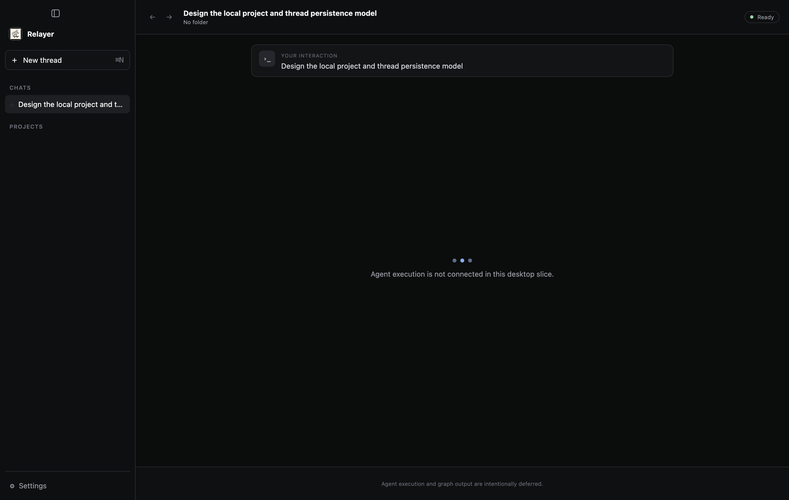
1 2 3 4APP-001-E3 — packaged arm64 application starts its bundled serverCaptured from the unsigned local Relayer Dev.app produced by npm run desktop:pack, using an isolated empty profile. The page origin was the ephemeral loopback address reported by the bundled Rust executable.
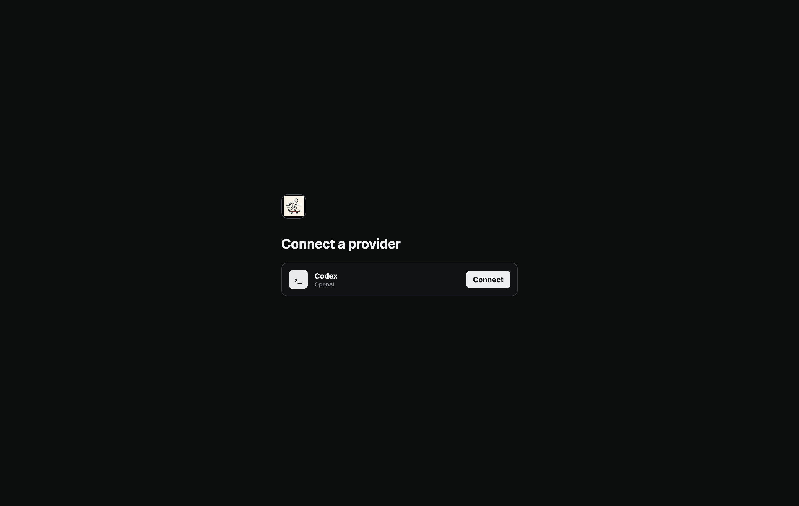
1 2User goal: Connect a supported agent credential.
Product rule: Agent setup stays separate from work-context selection.
Observable result: Relayer shows the connection state and available recovery actions.
Acceptance: A new desktop process recognizes the saved connection.
Relayer uses one implicit local profile. First launch opens Agent setup and, after a valid configuration is saved, opens the normal New thread window. An optional Relayer account offer may appear only after that local workspace is usable. Folder, project, and account choice are not blocking onboarding steps.
The setup surface is one focused Agent login card. Codex and API key are presented as horizontal login-method choices, followed by the credential and model controls for the selected method. The form should not split setup into equal Harness and Agent login columns or stack alternative methods into a long vertical option list.
Agent setup does not require a harness choice. After connection, the New Thread composer presents Model as the primary execution control. Its Advanced tab contains compatible harness configurations.
A successful provider connection with at least one execution-eligible model creates one product-managed, provider-scoped model family before setup completes. First launch selects the unique valid provider, family, model, and default harness route atomically; it does not require custom-family construction. Product policy admits only reviewed synchronous text or agent models and fails closed for unknown capabilities. It applies a versioned provider preference before provider order and caps the managed family at five models. OpenRouter policy version 1 is the explicit three-model general-agent roster deepseek/deepseek-v4-pro-0813, qwen/qwen3.8-max, and z-ai/glm-5.3, in that order. Vercel AI Gateway policy version 1 provides the equivalent roster using its catalog identities: deepseek/deepseek-v4-pro-0813, alibaba/qwen3.8-max, and zai/glm-5.3. Both policies omit missing or unavailable entries rather than falling through to arbitrary catalog order.
Codex production policy version 4 prefers GPT-6.1 Sol, GPT-6 Astra, then GPT-6 Luna before other provider defaults. Sol uses medium reasoning in the shipped Codex harness. Claude subscription choices are Sonnet 5.5, Opus 5.5, and Fable 5.1. The release-owned Claude Code 2.1.286 runtime executes these choices through its native sonnet, opus, and fable aliases. Sonnet remains the first Claude choice. Prime production policy version 1 prefers Qwen3.8-Max on OpenRouter and Vercel AI Gateway. It retains DeepSeek V4 Pro and GLM-5.3 as available alternatives. Other API providers retain their existing compatible policy. Managed router families are provider-scoped and use the same Qwen-first policy across compatible harnesses. Historical selections and execution receipts remain recorded unchanged; a retired managed-family selection requires explicit reselection before another execution. User-owned custom families remain unchanged.
Adding a provider through Settings applies the same managed-family policy. It preserves the existing default provider, family, model, harness, open composer draft, and existing thread bindings. The default provider and the default family are one pair. Choosing a default provider in Settings also selects that provider's managed family, in the same change. If the default harness cannot run that family, the same change moves the default harness, and Settings says so. The new harness is an available harness with a permission profile that can run the family. The application default harness is preferred, then the first by configuration name. A choice that no harness can run is refused, and the defaults stay unchanged. The provider selector offers only the providers such a save accepts. For a provider without an enabled managed family, Settings asks the user to refresh its models. For a family that no available harness can run, Settings says so instead. Defaults saved by an earlier version, with one provider and another provider's managed family, are paired on that family's next refresh. Refresh reconciles only the refreshed provider's managed family. Custom families are never rewritten by managed-family reconciliation. A connected provider with zero eligible models remains in the typed provider_no_eligible_execution_models recovery state and cannot silently populate an unsafe family. Its provider card and first-run setup expose an exact-provider Refresh models action. The button is labelled for scanning. Its accessible name carries the full operation and the exact provider. Several cards never present the same bare label. Refresh reruns managed-family derivation for that same provider and advances automatically when a valid default route becomes available.
Provider connection, reconnection, and that explicit refresh also evaluate every exact provider-model route against the loaded production harness configurations. Runtime readiness is global for an exact configuration and contains no provider credentials. Configuration results are published atomically to the app server, only for the matching configuration digest. Publications are serialized, and a harness result publishes only while it comes from that harness's latest evaluation. The app server rejects a result from an evaluation older than one it already accepted. Its persisted readiness record is the only record of whether a route is ready. A connected provider with eligible models but no ready route remains connected in provider_no_available_execution_configurations. Failed harness identities are not exposed in onboarding, defaults, the picker, or Send. Background model refresh, opening Settings, picker reads, and Send never install or probe a runtime. Startup does neither, except the two post-upgrade steps under exact managed-runtime preparation. Codex and Claude runtime descriptors enter their harness factories instead of secret provider execution access. Prime configurations remain unavailable for execution until the managed Prime kernel supplies its production readiness check. A due configuration with a missing runtime is repaired after provider startup only when an active connected provider has a current published eligible model route. A failed or interrupted setup is visible through its harness repair icon. Disconnected and superseded provider catalogs cannot justify first installation.
The packaged application includes codex-basic as its Codex product harness. codex-basic-high remains available only to internal Eval and code workflows. On macOS Apple Silicon, Prime Basic and Deep become selectable only after the exact managed Prime kernel passes its connection-triggered production readiness probe. Other targets keep Prime unavailable.
Each provider has a connection generation. Connecting a provider starts it. Completing a reconnect, signing out, and removing the provider each advance it in the same write.
active. Then the result changes no family, default, catalog or adapter. The app server refuses such a publish inside its write. User actions supersede automatic ones.Connect Codex starts the managed ChatGPT/Codex browser authentication flow.Other reveals a required provider name and API base URL.Test connection action verifies authentication and model listing without invoking Complete.A turn holds its provider's execution access exactly as long as its native agent runs, unless the turn is force-stopped. The access ends when the native turn settles, or within ten seconds of a force-stop. It does not wait for Relayer to record the turn's outcome.
Relayer Desktop owns one deep managed-runtime module. A caller requests one release-owned recipe identity. The module returns an immutable descriptor with runtime, recipe, target, version, installation identity, and absolute execution entrypoints. Download URLs, artifact locks, installer tools, caches, staging, receipts, and cleanup remain code-owned implementation details. Harness configurations continue to name only stable runtime identities.
Each Desktop release maps its externally compatible managed-runtime version metadata to exact code-owned recipes. The current recipes are codex@0.159.3 and claude@0.3.286 for every currently supported macOS Apple Silicon, macOS Intel, and Windows x64 target. Preparation downloads only the exact reviewed HTTPS artifacts and verifies their recorded SHA-512 identities. It never queries a mutable latest selector, adopts an ambient executable, or accepts a provider-supplied URL, command, path, or lock.
The macOS Apple Silicon prime@0.8.1 recipe locks uv 0.12.0, Astral CPython 3.11.16+20260825, and 78 exact CPython-3.11 wheels. It also locks the reviewed Prime JavaScript bridge, Python runtime, 12 bundled Python skills, app-owned relayer_graph client, and readiness contract. Source distributions and source builds fail closed. The JavaScript closure is copied from and rechecked against the packaged fallback for this prototype; downloadable reconstruction is issue #379. The recipe seals distinct repository and packaged closure digests; each assembly path accepts only the digest for the bytes it reads.
Every mutable path is confined beneath Relayer's private managed-runtime root. Preparation redirects temporary, XDG, uv cache, Python, tool, and tool-bin paths beneath operation-specific staging without replacing HOME or CODEX_HOME. It disables user uv configuration and PATH modification. Managed tools are invoked only by explicit absolute path; wheel installation is offline, no-index, no-dependency, and binary-only. Readiness succeeds after an atomic active-pointer change through an isolated Python launcher. Failure or cancellation preserves the previous active installation. Explicit repair reconstructs the same requested recipe without discovery. Repair, update staging, and update activation reuse an installation only when it passes startup's validation. Repair and staging otherwise install the exact recipe again. Activation refuses it instead; the route is then due, and the post-upgrade evaluation installs the exact recipe. Cleanup removes only recognized managed descendants and cannot follow traversal or symlinks outside the root.
Each installation owns a separate private state root recorded in its receipt. Prime receives explicit agent and session directories beneath that root. Native instruction files admitted to model context are confined to the selected workspace and this managed agent directory. A No folder chat must not inherit instructions from the application storage directory or development checkout above it. The selected workspace’s own instruction files remain available; symlinks cannot import instructions from outside these roots. It never reads or writes ~/.prime, and saved session paths are resolved before reopening so a lexical descendant or symlink cannot escape the managed root.
The ready Prime descriptor, not installer state, enters the Prime harness factory. Its provider-free readiness probe loads the managed JavaScript module and starts the real kernel. It imports rlm, relayer_graph, and all 12 bundled skill modules, then evaluates a deterministic expression and shuts down without inference. A failed probe keeps Prime unavailable with a sanitized reason while Codex and Claude remain available. Harness Settings retains its repair icon when a current compatible provider can finish setup. npm run test:prime-managed-runtime is the named clean-temporary-root assembly and kernel checkpoint. Release-update publication is deferred to issue #378; signed Preview or Stable validation and paid live inference remain separate authorized proof.
Frozen schema-v1 Codex or Claude receipts remain reusable only when their exact version and artifact identities match the requested recipe. Otherwise local lookup fails and an explicit preparation event repairs to that exact recipe. Ordinary startup never waits for a vendor lookup, readiness probe, or periodic repair. Post-update activation is the one probe startup waits for. It runs a local version probe of each newly activated runtime, without inference. Startup restores a route as ready only when the app server's own record said ready for the same configuration digest. The local runtime files must also still validate. A new or changed digest starts unavailable in harness_readiness_pending. It stays there until a readiness evaluation publishes a result. Startup also names the exact runtime recipe the release requires for each coordinated route. The app server keeps the recipe each route last loaded. A changed recipe starts pending, like a changed digest, even when its files validate. Startup also reports a runtime its own update changed: a new recipe, another replaced runtime, or a failed activation. That counts before any recipe was recorded. So does a ready route whose files stop validating when its first recipe is recorded, as after a failed prefetch. When an upgrade changes a route's digest or recipe, the app server marks that route due. After startup, Desktop runs one background evaluation of every due route through the recipe-update trigger. The migration that adds the mark also marks every loaded route that startup left pending. This is a product decision: it heals users an earlier upgrade already left pending. This covers an update whose staged runtime activated, and one whose activation failed. The evaluation uses no inference and does not delay startup. Quitting stops it, and a stopped evaluation records nothing, so its route stays due. If the user keeps downloading instead, it starts again. Like Repair, it runs the readiness probe. By product decision, it may install the exact recipe again when the installation is broken or on another recipe. A due route may also install its missing runtime when a current connected provider has published a compatible available model. This repairs setup left incomplete by an earlier connection or upgrade. A stale catalog from before sign-out or a pending reconnect cannot authorize this installation. A broken runtime can stop a managed provider from activating, which leaves it no route. The evaluation first recovers such providers as Repair does, when their runtime was installed. It then evaluates each due route once for all its providers. Eval runs the same evaluation at its startup and waits for it. It follows the same ordering and record rules as Repair. Its committed result clears the mark, so it runs once per changed digest or recipe. Until then, each start tries again. A due route without a connected provider route prepares nothing. Each process evaluates once, so a provider whose startup refresh failed waits for the next start. The first launch after this rule ships verifies every route again. A route an older build recorded as ready stays pending until its next evaluation. For schema-v2, cheap validation proves the exact installation marker and owned real private-state directory. It also proves that resolved entrypoints remain confined to the exact installation. Each app-server process begins a fresh readiness generation epoch. New coordinator results can then replace the restored record, while same-process older results remain rejected.
| Checkpoint | Smallest deterministic proof | Excluded proof |
|---|---|---|
BRW-001 Terminal outcomes return | Account-session tests present once for a verified, cancelled and malformed callback; the provider IPC test presents on a connected completion. | Real Auth0 and real provider sign-in |
BRW-002 Only a settled failure returns, within a bound | Provider IPC test distinguishes a settled failure, a transient one, and an unknown connection. Service tests drive the production poll loop through unavailable checks to connected. A permanently unavailable connect settles and readmits the same name. | Live provider account outages |
BRW-003 Unowned and pending present nothing | Account-session tests refuse a foreign state and a non-callback request without settling; the IPC test leaves a pending completion unpresented. | Real browser focus behaviour |
BRW-004 A failed handoff frees the name | Provider IPC test wires the real definition service, rejects the handoff, and proves the same provider name is readmitted on connect and reconnect. | Real openExternal failures |
BRW-005 A pending attempt has a main-process owner | Provider IPC test releases the attempt when the initiating renderer's contents are destroyed, then readmits the name. A change notification that throws leaves the settled connection and its return intact. | Real window teardown and reload |
PROV-004 Access lives as long as the native turn, or until it is force-stopped | Harness-host tests release access when the native turn settles and defer an owner's release of a running turn. A late or foreign claim is refused. Harness-host tests force-stop a turn two minutes after its owner releases it, and release only its access. A sibling child and the root keep running. The stopped root settles as a stop with the force-stop in its trace, and the next root turn runs. Codex and Prime tests stop only that turn's process or session, and start the next root turn fresh. Composition tests refuse access during a pending reconnect and once shutdown begins. A settling reconnect never closes a leased runtime. The ProviderLeaseLifecycle model checks each fix and its reverted form. | Real Codex and Prime processes that ignore interruption and the force-stop |
PROV-003 Removal finishes once nothing runs | Provider-service tests read the app server's refusal code and defer the tombstone while an attempt runs. The owner's acknowledgement then finishes the removal. Product persistence tests end a turn whose outcome was not recorded, through a failed canonical read and through an expired approval. Each releases its lease once and the tombstone succeeds in-session. Opening the quarantined thread later settles the attempt without a second release. When the wait's end was never recorded, opening the thread wakes the reconciler, which releases the lease. A restart test quarantines a submitted-input attempt, finishes the removal, and still accepts the canonical output later. Another restart test ends an unwinding recursive child before the startup removal. Composition tests fail each startup removal and cleanup step; Relayer still starts, activates the other provider, and finishes the other removal. | Real Desktop restart |
PROV-008 A refresh keeps the chosen default | An app-server flow test chooses a second provider as the default, then refreshes both catalogs. The defaults stay on that provider and its managed family. A provider without a managed family is refused. Service tests move the harness, prefer the application default harness, pair a family-only save, and keep a shared legacy default. Renderer unit tests cover the provider list, both hints and the harness notice. Source-text assertions cover their wiring in Settings. The CatalogRefresh model checks the refresh promise from set and unset defaults. | Real provider catalogs and the Settings window |
PROV-008 A default family without eligible models needs model setup | An app-server flow test refreshes the default provider with no eligible models. Another provider's refresh then leaves the default selected, and Settings names it. Validate, thread creation and a harness-only default save return the provider code. A family the user disabled keeps its own code. After a disconnect, the family stays in recovery with the provider's reason, and validate returns the disconnected code. A later refresh restores the family, and after a policy upgrade its successor. After the user chooses another default, the old family still returns the code. A second flow test disables a managed family, then refreshes with no eligible models. That family is tombstoned but not in recovery, keeps its disabled code, and restores still disabled. The same test shows a deleted custom family validates as removed. A third flow test reverts a policy upgrade. The restored family, not the newer superseded one, is the one in recovery. A storage test gives execution the same code. Another storage test retires a removed provider's family, disabled and without a recovery cause. A migration test keeps an earlier build's zero-eligible default in recovery, including after a disconnect. It leaves a removed provider and a policy revert unmarked. Another migration test picks the default when two tombstones share a second. Renderer tests read the server responses that the flow test checks. They cover the composer label, the Send tooltip, a thread's own family and the Settings defaults. They also cover the disconnected state, the Refresh models action, its busy state, focus and live region, and the Open Settings fallback. Others cover a thread's restored roster, a refresh from New Thread, and Eval's refusal. A Settings test drives the real markup and refresh. A list test covers which rejections refresh settings. Source-text assertions cover the remaining wiring. The ProviderSettings model allows a non-live default only for the provider's managed family while that provider is active. | Real provider catalogs, the Settings window and a live refresh round trip |
PROV-002 A superseded result is inert | An app-server flow test signs out and reconnects twice. Each older-generation publish is refused and changes nothing, including a tombstoned family. A storage test advances the generation on removal. Composition tests keep a recovery ahead of a queued refresh and keep a cancelled reconnect refreshable. They drop a stalled refresh and relearn a generation behind a lost answer. A reconnect a later sign-out superseded is refused, and the next lands. Sign-out returns beside a queued recovery. No refresh publishes during a pending reconnect. A cancelled reconnect records signed out, even after a failed sign-out publish, and a refresh straddling it is dropped. A reconnect whose answer was lost is adopted, and an unknown outcome keeps the sign-in. The CatalogRefresh and ProviderLeaseLifecycle models check each finding and its reverted form. | Real provider accounts and a real app-server crash mid-write |
PROV-007 Connect is all-or-nothing | Composition tests show no adapter and no publish before the definition exists. A refused or cancelled connect leaves no definition, credential or publish. A create whose answer is lost is adopted, or settled at the next launch. Service tests register the adapter after the commit. The CatalogRefresh model checks that order. | A real process crash between commit and answer |
MRT-375-1 Exact recipe identity and artifact lock | Public installer and resolver tests prove exact recipe selection, every supported target identity, digest mismatch rejection, and absence of mutable latest discovery. | Provider visibility and model discovery |
MRT-375-2 Isolated wheel-only assembly | A Prime-shaped fixture proves source-build rejection, absolute managed-tool inputs, closed environment redirects, and writes beneath one temporary managed root. | Production Prime assembly or a real Prime kernel |
MRT-375-3 Transactional activation and repair | Fixture scenarios prove concurrent deduplication, readiness before activation, failed preparation preserving the active descriptor, interrupted staging recovery, exact same-recipe repair, and frozen schema-v1 compatibility. Installer tests break the private state, the ownership marker, or entrypoint confinement. Repair and update staging then reinstall, and activation refuses; startup validation passes afterwards. Another installer test keeps the activation version probe. | Updater download ordering |
MRT-375-4 Contained lifecycle cleanup | Filesystem fixtures prove bounded cleanup, retention rules, and traversal-safe and symlink-safe deletion. User-owned uv, Python, npm, Homebrew, and Prime state remains untouched. | Application uninstall UX or Prime disablement |
PROV-005 Readiness results never go back in evaluation order | A catalog store test publishes a newer generation, then an older one. The app server rejects the older result and keeps the newer record. | Real provider connections and runtime probes |
PROV-006 The app server record alone decides readiness | Catalog store tests restart through the real catalog reader. A withdrawn route stays unavailable, and a new digest or failed file validation starts pending. A migration test proves an older build's ready row starts pending once. A desktop runtime test proves startup ignores the previous catalog file. | Packaged-app restart and real managed runtimes |
PROV-010 An unavailable loaded harness can be repaired | The catalog store projects exact compatible repair provider IDs independently of enabled families. It excludes disconnected or removed providers, unavailable or hidden models, incompatible or missing access contracts, deny rules, unloaded configurations, and unsupported targets. The test harness-settings-repair.test.mjs clicks the production repair icon through exact-provider refresh. It blocks duplicate clicks, retains keyboard focus for retry after failure, and admits the repaired harness to the composer without changing defaults. Overlapping reread scenarios wait for the latest accepted settings request before judging Repair. They preserve stale-response rejection and report the latest read failure. Focus tests preserve later user navigation and place focus in Harnesses when successful Repair removes the action. The test provider-ui.test.mjs checks icon-only markup and tooltip. The runner evidence:provider-ux -- --scene=harness-repair captures the actual renderer before repair, after failure, and after success with deterministic provider fixtures. Keyboard activation and focus assertions run in the actual browser. | Live credentials, paid inference, signed installation |
PROV-009 An upgrade is evaluated without Repair | Catalog store tests mark a changed digest or recipe due, keep the mark across restarts, and clear it on the next committed result. A changed recipe does not restore an old ready. A desktop runtime test writes the required recipe and this start's runtime change into the startup catalog. An installer test reports which activations changed a runtime. A two-provider store test restores both routes from that one result. A migration test marks routes startup left pending. The composition and readiness tests install a missing due Prime runtime through an already connected compatible OpenRouter route. They reject unavailable models, incompatible access, pending reconnects, sign-out, stale generations, and unsupported targets. Lifecycle tests cancel preparation when sign-out, removal, reconnect, or a disconnected catalog supersedes its route. Readiness tests recheck authorization during target lookup, checking, and queued publication. Real installer tests retain valid shared consumers, cancel abandoned installation, and admit fresh retry after cancellation settles. Catalog model changes expire old authorization; identical eligible refreshes preserve a long installation. Multiple-provider tests keep setup live until every eligible provider is lost. Guarded publications commit each harness independently, so an expired route cannot roll back another harness. The catalog store validates provider generations and current model visibility, availability, access contracts and rules in the readiness transaction. Refused publication preserves due marks. The startup catalog preserves a typed unsupported-target reason. Missing managed subscription providers without a current published route remain excluded. Composition tests recover managed providers whose activation failed on a broken installed runtime, with one evaluation; that preliminary provider recovery never installs a missing runtime. An Eval setup test runs the evaluation at Eval startup. Readiness tests stop the evaluation before it prepares, while it waits to publish, and inside a running checker. A runner test restarts it when quitting is declined. An installer test reports a legacy activation that replaced the runtime. A composition test publishes the catalog from recovery's one discovery. A composition test runs one recipe-update evaluation for both providers without awaiting it. A source-text assertion covers its startup wiring. An app-server flow test keeps the due read internal. model-availability-refresh.test.mjs drives background readiness through committed publication into both real composer pickers. It covers a catch-up read after initialization and overlapping catalog/readiness changes. Other scenarios cover a failed reread followed by recovery, preserved drafts and explicit selections, and unavailable state staying blocked. Publisher tests announce only successful writes and isolate closed-window delivery failures; a wiring checkpoint covers the main process, preload, and renderer. | Signed upgrade and real managed runtimes |
Desktop rereads the persisted model settings after a committed provider catalog or harness readiness change, and once after the workspace initializes. Both new and ongoing chat composers reflect that state without opening Settings. Notifications carry no catalog or readiness authority. Overlapping notifications drain through serialized rereads, and a failed read does not prevent a later change from refreshing the UI. Refresh preserves unsent drafts, chosen defaults, and pinned thread routes under the existing model-selection rules.
The Relayer account is separate from every agent-provider credential. Stable and Preview open the branded app.relayerlabs.ai/desktop/login launcher and authenticate directly with the Auth0 Native Application using Authorization Code and PKCE. No Relayer authentication API, custom desktop session, database row, or Relayer user UUID participates.
Planned thread sharing presents that Auth0 session to the share service. It never gates local product use. See section 8.4.
Electron main owns state and PKCE generation, loopback binding, callback validation, direct token operations, OIDC verification, encrypted refresh-token custody, and account generation. Stable can bind only ports 49152 through 49154. Preview can bind only ports 49155 through 49157. The renderer receives only a closed presentation state, the selected channel, a pseudonymous subject where useful, and safe reason codes.
Electron main is the only Sentry authority. Renderer and child processes submit typed records through generation-bound local capabilities.
Only a verified account generation enables admission. Every other account state creates no request or queue record.
Main derives one stable identifier with SHA-256("graphcomplete-sentry-user-v1\0" || UTF-8(Auth0 sub)). Callers cannot supply identity or transport configuration.
The encrypted queue holds at most 32 records and 256 KiB. Records expire after seven days, and overflow evicts the oldest record.
Any corrupt queue is deleted. Retry requires revalidation of the same Auth0 subject and never creates recursive telemetry.
Logout or account replacement disables admission and deletes the old queue before account presentation changes.
Release identity comes only from immutable sealed package metadata. Electron main supplies the Sentry environment from its validated current update channel.
The versioned shared privacy corpus covers every process seam and forbidden field. npm run evidence:telemetry runs its deterministic portfolio.
Live Auth0, packaged storage, system-browser, upload, and symbolication proof runs only for Preview or Stable release candidates.
Each target proves only its native platform: macOS Apple Silicon, macOS Intel, or Windows x64. Missing target evidence remains indeterminate.
type AgentConfiguration = {
harnessId: string;
harnessVersion: string;
loginMethod: "codex" | "api-key";
providerId: string;
providerApiUrl?: string;
credentialRef: string;
modelId: string;
};
type ThreadAgentBinding = {
threadRootNodeId: number;
harnessId: string;
harnessVersion: string;
};
type InteractionModelBinding = {
nodeId: number;
providerId: string;
credentialRef: string;
modelId: string;
};
The harness binding is written when the thread's root interaction is created and is inherited by every interaction in that thread. The model picker remains available in the composer and may change before any interaction. Selecting a model closes the picker and returns focus to its trigger, including when the selected model is already active. Every submitted interaction records the exact provider, credential reference, and model used for that call.
Other requires provider name and a valid HTTPS API URL, except explicitly permitted local development URLs in developer mode.provider_no_eligible_execution_models tombstones that provider's managed family. If that family is the default, it stays selected.Deterministic UI tests cover each selector transition, conditional field, validation error, and disabled state. They also cover secure storage and secret removal. Credential-adapter integration tests use fake Codex and provider servers.
| Optional-account checkpoint | Deterministic proof |
|---|---|
ACC-001 and ACC-003 | test/desktop-account-session.test.mjs drives local fake Auth0 token and JWKS endpoints, PKCE exchange, claim rejection, refresh, and revocation. Production Auth0 is never contacted. |
ACC-002 | The same suite occupies callback ports, switches Stable and Preview pools, races concurrent controls, and verifies exact callback failure and listener closure. |
ACC-004 and ACC-006 | Generation tests cover unverifiable restart, logout ordering, stale exchange completion, and a paused credential commit followed by deletion. |
ACC-005, ACC-007, and ACC-008 | Native narrow-window proof: npm run test:desktop:narrow-sidebar. Constructor and named destination checks: test/window-factory.test.mjs and test/eval-sidebar-navigation.test.mjs. Capture rejection checks: test/provider-ux-layout-audit.test.mjs. Deterministic mappings: test/desktop-account-ui.test.mjs, test/sidebar.test.mjs, and test/settings-navigation.test.mjs. Rendered layout, breakpoint, canvas resize, and collapse/expand journey evidence: docs/evidence/issue-418-account-navigation/README.md. |
| Telemetry checkpoint | Deterministic proof |
|---|---|
TEL-001, TEL-002, and TEL-006 | desktop-authenticated-error-startup, desktop-rust-error-capabilities, and account-session fixtures exercise bootstrap, live child refresh, logout, replacement, verified, uncertain, stale, and restarted generations without live Auth0. |
TEL-003 and TEL-005 | The shared privacy corpus, renderer reporting, and stack-sanitizer suites cross every seam. They reject every forbidden field, absolute or third-party frame, oversized frame set, and extra key. |
TEL-004 and TEL-011 | desktop-error-domain-adapters drives all five production adapters. The authenticated gateway and versioned privacy corpus additionally drive the main-owned handled-share schema, deduplication, forbidden fields, and transport/queue failure. Expected states and reporting failure produce no product behavior change. |
Handled-share diagnostics: TEL-003, TEL-004, TEL-005, and TEL-011 | share-error-diagnostics drives the real service client, coordinator, gateway, and captured Sentry event through HTTP and network failures, retry, and success. Packaged-stack and hostile-cause fixtures verify bounded sanitization. The gateway tests cover legacy and new queued reports; the transport and shared privacy corpus reject malformed diagnostic fields before delivery. |
TEL-007, TEL-008, and TEL-009 | Queue tests cover size, count, age, eviction, corruption, same-subject retry, logout, replacement, and recursion suppression. |
TEL-010 | Release and telemetry-artifact fixtures reject caller identity, mismatched metadata, source bytes, native debug IDs, targets, and authority outside release CI. The test/signed-native-cache.test.mjs suite covers trusted build-output reuse, source/profile identity, binary and symbol integrity, fresh-build fallback, and current-release telemetry correlation. Signed native cache evidence separates local checks from the required authorized Preview proof. Main projects validated Development, Preview, or Stable environment. |
TEL-012 | npm run evidence:telemetry first runs the named adapter, service-protocol, and shared Rust suites. It then runs the versioned zero-inference loopback privacy portfolio and emits reviewable evidence. |
| Brand checkpoint | Deterministic proof |
|---|---|
BRAND-001 | The mark and wordmark end states, outer-letter frame containment, the animation controller, and the generated assets are covered by test/relayer-mark.test.mjs. Hover, leave, rail, and collapse wiring are covered by test/sidebar.test.mjs. The share preview wordmark is covered by test/sticker-structure.test.mjs. |
The default portfolio uses no paid inference, production Auth0, Relayer API, or live Sentry.
The default portfolio does not induce a panic in a spawned production Rust binary. That remains explicit in its evidence limitations.
Live authentication and packaged symbol proof run only for Preview or Stable release candidates. Each target proves only its own platform.
PROV-001 is one product requirement with several observable subrequirements, not a collection of independent setup features:
| Requirement | Sprint 1 status | Automated proof | Visual proof | Remaining work |
|---|---|---|---|---|
PROV-001 Provider setup and its Codex subrequirements |
Verified | test/desktop-shell.test.mjs has one structural desktop scenario and one provider-lifecycle scenario. The lifecycle scenario covers disconnected account read, two rapid Connect calls, cancellation-before-replacement, completion notification, connected account read, request timeout, and app-server interruption. |
PROV-001-E1 through PROV-001-E4 below |
Explicit rejected, expired, and revoked-credential behavior; signed-release real-auth smoke. API keys, additional providers, provider URLs, and secure secret storage remain planned. |
The default validation command remains inference-free. On 2026-08-21, npm run check passed 317 Vitest tests, 72 Rust tests, and 12 Python tests. Only relevant product scenarios count as provider proof.
PROV-001-E1 — disconnected provider setup, dark appearanceCaptured from the Electron development application with an isolated empty Relayer profile. This proves the full-page setup, Relayer branding, Codex as the first provider, and the initial Connect action.
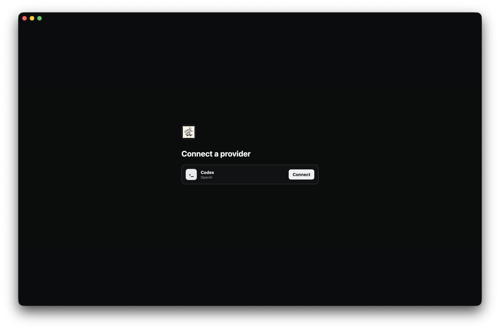
1 2 3PROV-001-E2 — disconnected provider setup, light appearanceCaptured from the same Electron application and isolated profile after persisting the light appearance. This proves that provider setup participates in the desktop appearance setting.
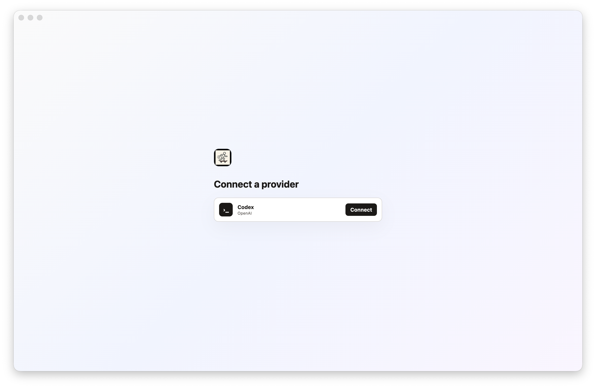
1 2 3PROV-001-E3 — authorization pending and recoverableCaptured after starting the real hosted Codex authorization flow. The desktop remains actionable and exposes Open again; the compact lifecycle test proves that selecting it cancels the previous login ID before starting its replacement.
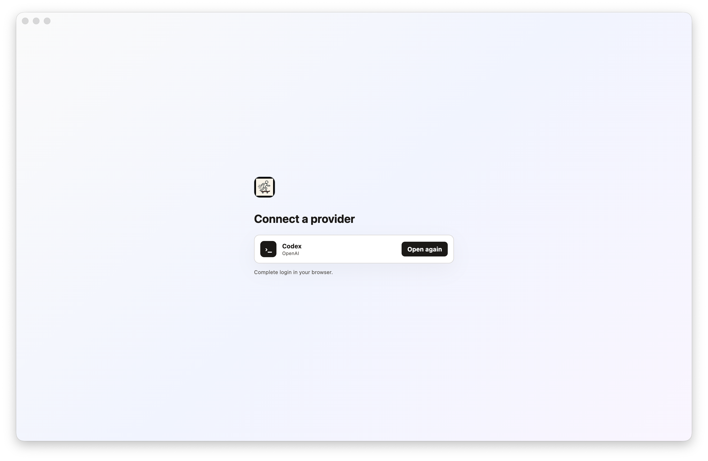
1 2PROV-001-E4 — connected account recognized by a new desktop processCaptured from a newly launched Electron development process using the existing Relayer-scoped Codex profile. It bypasses provider setup and opens the normal New Thread surface. The image proves startup presentation, not agent invocation or graph behavior.
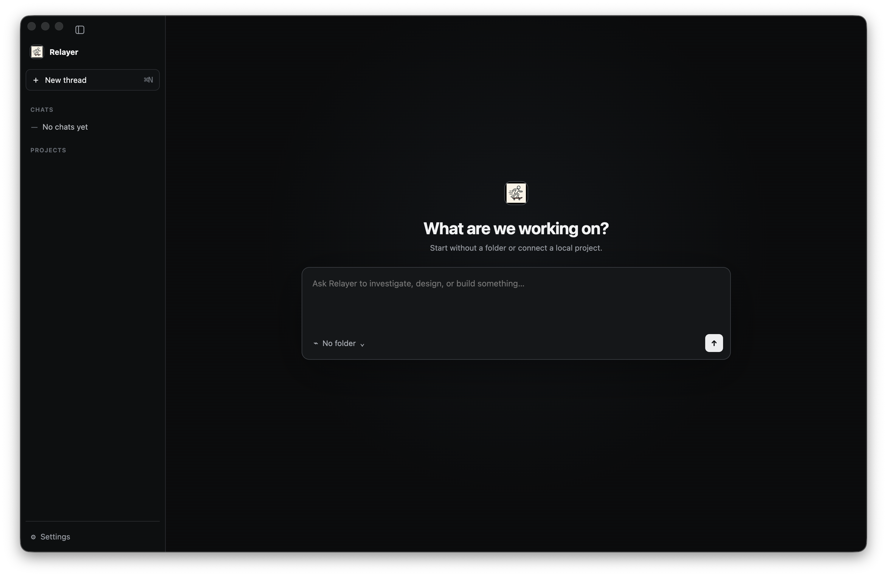
1 2 3Screenshots are implementation evidence, not design mocks and not proof of unrelated features visible in the frame.
The Issue #34 evidence uses the real Electron renderer, Rust app server, SQLite store, and live Codex model discovery. Completion uses a deterministic fixture and makes no paid inference call.
The evidence manifest records live discovery, two accepted interactions, the pinned harness, both model receipts, screenshot mappings, and zero paid inference calls.
User goal: Work without a folder or inside an authorized project, with understandable control over the agent's authority.
Product rule: Git projects offer Checkout selection and optional new-worktree creation. Every new thread also pins one Rust-owned product permission profile.
Observable result: New Thread shows the selected scope and permission profile before send.
Acceptance: The thread records the exact scope and permission profile selected at send time; later turns inherit both pinned choices.
After Agent setup, Relayer opens the ordinary New thread composer. The user writes a task and chooses one of these scopes before sending:
| Scope | Stored ontology | Filesystem behavior | Sidebar placement |
|---|---|---|---|
| No folder | scope.kind = "standalone", no projectId |
Isolated app-owned working directory; no user-folder access | Chats group |
| Existing project | scope.kind = "project", stable projectId |
Uses the project's authorized folder or chosen worktree | Under the project |
| Open another folder | Creates a project, then selects it | Requests folder access and records canonical path metadata | New project group |
The folder control initially reads Open folder. Opening it shows existing projects, Choose another folder…, and No folder. “Standalone” remains an internal scope name only; it is not user-facing terminology.
The first send creates one top-level user-interaction node. The thread's identity points to that root interaction node; the product does not create a separate semantic thread node for the same event.
A project row shows only its project marker and name while idle. It does not show a thread count.
Pointer hover or keyboard focus reveals one trailing compose button. The row layout does not move when the button appears.
The button's accessible name includes the project name. Only this button opens the project-scoped New Thread flow.
The project row remains a separate target. Activating the row does not start a thread or change draft scope.
The button opens the existing New Thread composer and selects the exact project. It does not create a thread before Send.
The action preserves pending New Thread text while changing its project scope. Re-selecting the same project preserves and focuses that draft.
An unsent follow-up remains owned by its saved thread. The project action opens or restores the separate pending New Thread draft.
Both draft types persist locally across navigation and restart. A successful Send or explicit clearing removes the applicable draft.
The sidebar does not show a badge, dot, label, or other draft-presence indicator.
This feature does not change the global New Thread control or keyboard-shortcut behavior.
The approved throwaway prototype at desktop/renderer/project-row-hover.prototype.html defines the visual behavior. It is design input, not implementation evidence.
Each populated project header toggles its chat list by pointer or keyboard activation and exposes its expanded state to assistive technology. The name and chevron form one toggle; the trailing New Thread button remains independent. Collapsing hides the active chat's sidebar entry while keeping that chat open.
Each stable project ID remembers its expanded or collapsed state locally across app restarts. New projects start expanded. Repository consolidation retains the surviving project's preference; without one, it starts expanded. Empty projects have no collapse chevron and retain their New Thread action.
Explicitly creating or opening a chat expands its project. Background refresh and incoming activity do not expand it. A collapsed project shows a compact activity indicator for hidden chats, with attention taking priority over running work and no chat count. Clicking a project marker while the sidebar is an icon rail expands the sidebar and that project's list.
The existing New Thread layout is retained. Git selection lives inside the Checkout menu beside the project selector. It lists all registered worktrees, including those created outside Relayer, with branch and path. The registered checkout list has a bounded visible height of at most 320px and shrinks for shorter viewports. It scrolls independently, supports keyboard focus, and keeps New worktree and base controls outside the scrolling list. During discovery the control shows only a spinner with an accessible loading name; discovery blocks Send and unverified selection. Inspection failure preserves the draft and offers retry without classifying the folder as non-Git.
Dirty, detached, and Git-locked worktrees remain selectable with status labels. Active use by another thread produces a shared-files warning but allows Send. Missing or inaccessible entries are disabled and preserve the prior selection. The selected relative subfolder must exist inside the chosen checkout. A missing folder or escaping symlink blocks execution without root fallback.
The menu contains a New worktree checkbox and, when checked, a base selector. Default to the repository's known default branch; otherwise require a valid base. The user may select the checkout's committed HEAD, a local branch, or a locally cached remote-tracking branch such as origin/main. The selected base appears as a compact, hover-highlighted control to the right of New worktree. Clicking it opens a dropdown to the right with search at the top and a scrollable list showing about five branches at a time. Available origin/main and the local committed base appear first; other local or cached branches include their registered checkout path when present. The base selector supports branch search and shows at most twenty matching branches plus the selected base, committed Local checkout and cached origin/main when available. Checking New worktree keeps the checkout menu open and its branch dropdown closed until the base is clicked. With a valid base, focus returns to the prompt; without one, focus moves to the base control. Selecting a base returns focus to the prompt. Enter creates the worktree and starts the task through Send without another checkout selection. Selection never fetches, switches the current checkout's branch, resets, cleans, or copies uncommitted edits.
Create only on Send. Relayer generates an automatic random-hash branch and managed destination. There is no branch-name input, custom-location UI, generated branch/hash-path presentation, or extra creation section in the composer. Abandoning an unsent draft creates nothing. Invalid or occupied generated destinations block creation without overwrite or adoption.
Before Send, revalidate the chosen checkout and repository state. Disappearance preserves the prompt and path and blocks execution. A changed branch or commit is shown and requires acknowledgment. Creation failure preserves the draft for retry or another checkout. If creation succeeds but startup fails or the relative subfolder is missing, retain the worktree and reuse it on retry.
Persist the exact creation plan before mutation. After interruption, reconcile its path, repository, branch, and commit. Reuse an exact match; retry only after verified absence. Block mismatched or partial contents. Never blindly create twice or delete a partially successful result.
Saved threads retain their exact project, checkout, and working directory across reopen. Their Environment context reports that saved working directory and checkout branch; project grouping does not substitute another checkout. They cannot switch checkout; offer a new thread instead. Missing saved locations keep history readable and block execution until restored. These choices affect new-thread drafts only and preserve pinned permissions, harness identity, and the canonical complete(inputGraph) boundary.
The New Thread composer places a permission picker beside the folder control. It uses the product labels and availability returned by GET /api/permission-profiles; the renderer does not expose raw provider sandbox or approval flags. The initial selection is the Rust catalog's default profile.
| Profile | User-facing behavior | Authority boundary |
|---|---|---|
Ask for approval (ask) | Ask the user before actions that require approval. | Bounded workspace authority with user review. |
Approve for me (auto) | Relayer reviews approval requests automatically. This is the default desktop profile. | Bounded workspace authority with automatic review. |
Full access (full) | Run without approval prompts. | Unrestricted authority. The picker must disclose that filesystem and network access are not hard-confined. |
Unavailable profiles remain visible but disabled with a product-readable reason. If no profile is available, New Thread cannot send. The selected profile is written during thread creation, shown with the saved thread, and cannot be changed for later turns in that thread.
Archive is reversible organization for project and standalone threads. A red trashcan Archive button sits at the far right of each expanded sidebar chat row. It stays hidden until the row is hovered or receives keyboard focus; revealing it does not shift the row layout. Hidden buttons do not receive pointer input. Active-work buttons remain disabled and appear dimmed when revealed. Archive is also available in the open thread menu. Archiving preserves the graph, history, drafts, project membership, exact checkout, and working directory across restart. It does not change draft, accepted, or stopped graph states, cancel work, or change conversation activity timestamps.
Archive is disabled during Running, Stopping, and Needs approval. The disabled action says “Available when work finishes.”
Rust enforces the same boundary atomically against new work admission. Earlier recursive work, native execution still unwinding, and unresolved execution/input admission also count as working even when the latest human turn is idle. Failed, interrupted, and otherwise settled threads may be archived.
Archived threads disappear from ordinary lists and search. Settings → Archived chats is their only archive listing and search surface. It searches titles, labels project membership, orders most recently archived first, and provides Open and Unarchive. Any explicit navigation to an archived thread, including a direct reference or initial thread URL, unarchives it; background reads, refreshes, exports, and previews do not. Restore preserves conversation activity order. Archiving the currently open thread leaves its workspace and reading position visible with an Archived indicator and Unarchive action. It remains archived until explicitly reopened or restored; Send is unavailable until restoration.
Archive takes effect immediately and provides Undo without a confirmation dialog. Repeating Archive preserves the original archive time. Bulk and automatic archive policies are outside this version.
| Checkpoint | Smallest deterministic proof | Desktop proof |
|---|---|---|
| ARC-001: Durable reversible metadata preserves history, scope, checkout and activity order; ordinary lists exclude archived chats; direct reads remain read-only. | The storage test archive_round_trip_preserves_thread_history_scope_and_activity_order exercises real storage, selected archived state, disk reopen, and restoration for both scopes. The HTTP test thread_archive_http_authority_discovery_and_read_only_reopen covers authenticated routes, read-only rejection and typed conflicts. The integrity test archive_authority_rejects_missing_or_weakened_objects_on_reopen verifies the archive guards. Existing migration/reopen proof includes schema 0042; the real accepted-graph export test compares accepted records while archived. | Archive, read retained workspace, Settings search, restore, process reopen. |
| ARC-002: Active work blocks archive and archived state blocks new admission atomically. | archive_serializes_both_admission_orders_and_checks_earlier_work observes production writes, active states, an earlier active interaction, and graph-settled native unwind. thread-archive.test.mjs checks disabled control reasons. | Busy thread action disabled; authenticated API returns busy; read-only archive writes denied. |
| ARC-003: Sidebar trashcan and thread menu, immediate archive and Undo, retained open workspace, Settings-only discovery/search, explicit-open restore. | thread-archive.test.mjs drives production renderer archive actions, sidebar projection, Undo and Settings search/restore; workspace-navigation-integration.test.mjs covers archived cross-thread reference/history restoration. Preview reads never acquire archive write authority. npm run test:desktop:sidebar-overflow checks resting/hover/keyboard visibility, busy controls, pointer targets, stable layout, selected/standalone/project rows and collapsed rails. | npm run evidence:thread-archive drives the real Rust API and production renderer with synthetic inference-free threads and records video and individual checkpoint results. |
standalone.projectId; display names and paths are metadata, not identity.projectId. Thread creation still waits for Send.ask, auto, and full.permissionProfileId on the ordinary product thread before inference. Every later interaction inherits that pinned profile.Individual project collapse checkpoints SCP-027–030 and their required deterministic and native entry points are mapped in project-collapse evidence. Planned checks and actual results remain separate.
The approved worktree contract and production checkpoint mapping are recorded in worktree evidence. Design approval is not verification; that ledger records actual runs separately from planned tests.
Choice-driven tests cover each scope, Git option, and permission profile. Permission tests cover catalog defaulting, unavailable-profile fallback, no-profile failure, the exact thread-create request, pinned persistence, and the Full access disclosure. They also cover creation failure, revoked permission, duplicate projects, project moves, and both fork options. Filesystem and Git tests use temporary repositories. They must not change a user checkout.
Checkpoint: test/node-detail-runtime.test.mjs exercises real workspace construction, rendering, and disposal without a saved thread while its input-draft controller is active.
The test settles thread A's deferred input-draft load in the empty view. It verifies no threadless input-draft operation or interim Send. On return to A, it checks the displayed label, value, preview, and Send revision. This checkpoint maps only the no-thread workspace and input-draft lifecycle. The fixture response comparison does not prove that the workspace retained an exact occurrence, source, or draft-revision identity.
The fixture also retains a graph selection when the saved thread disappears and drains pending reselection work while collecting unhandled rejections. With its thread-filtered interaction projection, no current interaction with a graph node ID is available to the input renderer. This is a conditional reachability check, not reproduction of the reported rejection for every production projection.
The project-compose scenario in scripts/test-desktop-project-new-thread.mjs covers SCP-015 and the navigation portion of SCP-016. It exercises saved follow-ups and pending New Thread drafts across navigation, successful Send, and explicit clearing. It closes and recreates renderer windows, restarts the Rust app server, and reopens the settings store while the Electron main process remains alive. This does not verify composer-draft recovery after quitting and relaunching the Electron app, so that SCP-016 checkpoint remains open.
macOS desktop visual-transition evidence classifies captured frames with Vision OCR. It measures readability between captured frames that show the same state. The 1,400 ms threshold is an evidence capture rule, not a product requirement.
Project-row tests cover idle, hover, pointer exit, keyboard focus, long names, and empty projects. They assert one stable action target.
Interaction tests prove exact project selection and no pre-Send thread creation. They cover same-project focus and cross-project draft preservation.
Draft tests cover saved follow-ups, pending New Thread text, navigation, and recovery after Rust app-server restart with renderer-window recreation. They also cover successful Send and explicit clearing. Full Electron process-restart recovery remains unverified. These tests use local deterministic fixtures.
Rendered evidence must show the populated sidebar before hover, during hover, and after activation. Prototype screenshots do not satisfy this requirement.
| Requirement group | Current state | Automated proof | Visual proof | Remaining work |
|---|---|---|---|---|
| New Thread shell and initial No folder/folder choice | Partial | The structural desktop scenario asserts New Thread, scopeButton, scopeMenu, and disabled empty send. The Rust integration scenario proves atomic thread/interaction creation and database reopen. |
SCP-001-E1, SCP-001-E2, APP-001-E1, and APP-001-E2 |
No folder create/reopen is verified. Existing-project population, folder-dialog completion, Git detection, and local/new-worktree choice remain unverified, so the overall requirement group stays partial. |
| Project-row New Thread action and draft safety | Partial | npm run test:desktop:project-new-thread covers SCP-010 through SCP-017 through one production-renderer seam with deterministic fixtures and no paid inference. Its draft-recovery checkpoint restarts the Rust app server and recreates renderer windows while Electron remains running; it does not cover full-process restart. |
The scenario captures resting, hovered, and activated production renderer states under .relayer/evidence/project-new-thread/. |
Verify saved-follow-up and pending New Thread draft recovery after quitting and relaunching the Electron app. |
| New Thread permission profile selection | Verified | The desktop test covers product-default selection, preferred-profile selection, unavailable-profile fallback, no-profile failure, Full access disclosure, and the exact permissionProfileId sent during thread creation. Rust integration tests prove the selected profile is validated before inference and pinned to the persisted thread and interactions. |
PERM-001-E1 |
Broader keyboard-navigation and small-window coverage remain shared desktop accessibility requirements. |
SCP-001-E1 — connected New Thread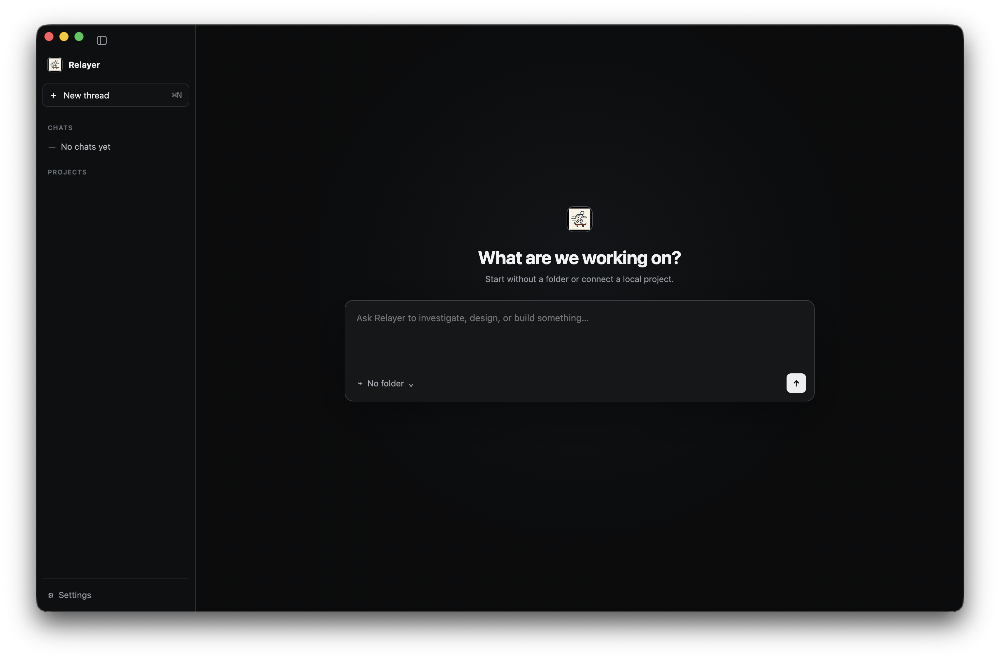
1 2 3 4SCP-001-E2 — inline scope choice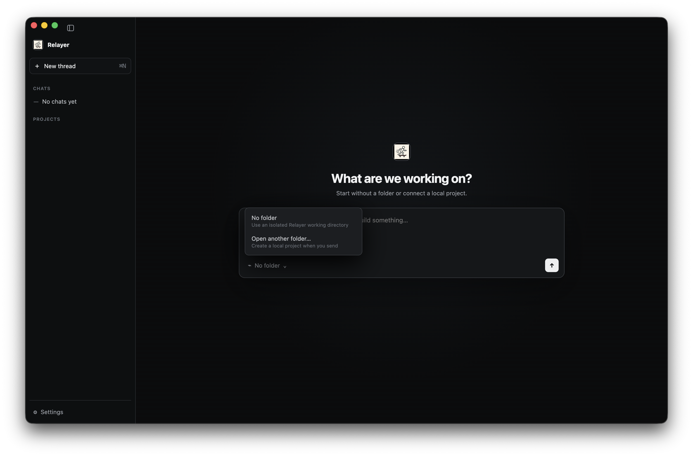
1 2 3PERM-001-E1 — product permission pickerCaptured from the ordinary Relayer desktop renderer backed by the Rust product permission catalog. It proves the visible product choices and disclosure, not the provider-specific translation.
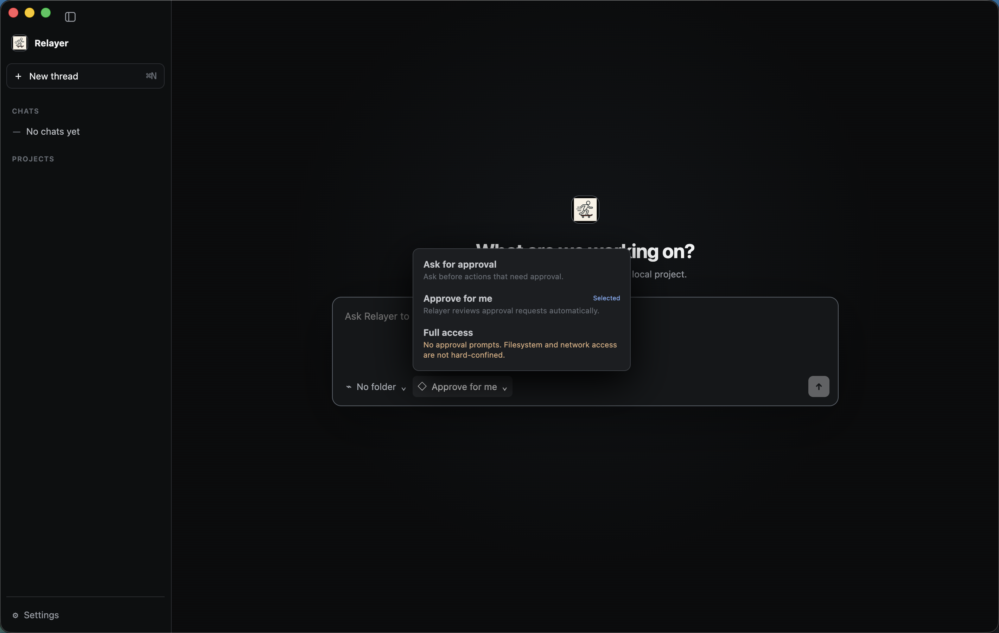
1 2 3User goal: Reopen a thread after navigation or restart.
Product rule: Relayer persists accepted state and explicit interrupted states.
Observable result: Saved threads reopen from Chats or Projects.
Acceptance: Restart preserves the last accepted graph without corruption.
The sidebar contains New Thread, Chats, and Projects. Chats contains no-folder threads; Projects contains saved thread entries. The sidebar stays visible at every width. At 760px or narrower it starts as a collapsed icon rail. Its existing toggle expands the same sidebar in normal flow. The workspace fits the remaining width. Explicit expansion stays open while the viewport remains narrow. Settings and Account stay in the footer, with icons while collapsed and labels while expanded. A Download update icon appears when an update is available.
The sidebar is a compact list. It is not a recursive graph tree. A child conversation can become a saved sidebar entry. The sidebar does not show its full ancestry. Graph breadcrumbs show this ancestry.
The header shows the current thread title, scope, and backward/forward turn controls. The composer remains the place to send, stop, and attach context. There is no separate active run dashboard.
A status symbol follows the thread title only while the thread is Running, Stopping…, Needs approval, or Failed. There is no symbol when the thread is idle, stopped, cancelled, or accepted. The symbol's shape, tooltip, and accessible name carry the state. The prompt card keeps its turn-level status pill.
The same symbols mark threads in the sidebar list, with the state in each row's tooltip and accessible name. While any thread is running, stopping, or waiting for approval, the list refreshes its state. An idle row shows no symbol. In the collapsed sidebar it shows a small neutral dot, so the row stays visible and clickable.
Product data is local and disk-persisted:
Current recovery: Startup marks interrupted ordinary and action interactions as failed. Ordinary work continues through a follow-up. One-shot action retry is unavailable.
Persistence uses atomic writes or transactions. A crash may interrupt an in-progress Complete call, but it must not corrupt the last accepted graph. On reopen, accepted turns render immediately; an interrupted interaction is marked stopped or failed and retryable. Recovery is a reliability requirement, not a primary product concept or prominent settings category.
A published thread snapshot is not local product data. It survives sign-out and removal of local data.
Planned: A user can share one thread as a frozen, read-only graph. Anyone with the link can open it in a browser. Each share creates a new immutable URL.
Packaged Preview and Stable releases both publish through https://share.relayerlabs.ai. Stable promotion reuses the exact signed Preview bytes, so the service origin does not change with promotion. Private share Preview endpoints are available only through an explicit non-packaged development override. Packaged applications ignore endpoint environment overrides and fail closed when release metadata is invalid.
The page lets the production graph workspace fill the browser viewport without a separate public top bar, outer frame, or reserved footer. A compact Get Relayer action in the thread header is its only install surface. Its rounded thread header and compact interaction card share the same column width. The public viewer does not show the desktop Environment panel. It shows turns, nodes, edges, actions, layers, and Node Details. The turn picker aligns to the interaction card. It fits up to five complete turn rows in the available viewport space before scrolling. It supports graph navigation and system theme. On mobile, the graph pans and Node Details opens. It has no sidebar, settings, onboarding, updater, or sign-in screen.
The Get Relayer action sits beside the conversation title in the same header row at desktop and mobile widths. It uses the product primary button style. It adds no separate promotional row or empty space above the content. Long titles truncate while the install action stays visible. The install link leads to app.relayerlabs.ai/desktop/login. The public-viewer mount test checks header ownership; public-viewer visual evidence checks the rendered layout.
The thread header has a Share button beside its menu. The menu offers Share and Shared links. Imported threads cannot be shared. Only accepted records are included; pending work is excluded. A share attempt performs eligibility, quota, and size preflight before requesting a title. An ineligible or blocked thread explains the blocker immediately without collecting title input.
Signed-out users see Share this thread, a read-only copy explanation, Cancel, and Sign in to share. Signed-in users skip only the sign-in step. Both flows require a share title before creating a link. The title field starts blank. Create link stays disabled for a blank or whitespace-only title.
The chosen share title replaces the original title in the published snapshot, page, browser tab, and link preview. The local thread keeps its original title. The share title and project name are published unchanged. Automatic redaction still applies to conversation content. Published titles cannot be edited; changing one requires a new share.
Create link freezes the accepted history at that moment. The dialog binds to the thread opened before preflight; navigating to another thread closes it and invalidates unfinished work. Retries reuse that same snapshot. Creating link shows progress. The simplified Link ready dialog shows the URL and Copy with a close control. Its caption says known secrets and paths were removed. Help text before creation explains that the sharer remains responsible for other sensitive content.
Electron main persists the frozen bytes, attempt/reference identity, original account owner, and closed recovery state before the first upload. An interrupted attempt is offered again only when its original source thread is open and the original account is verified. There is no global startup recovery prompt. Another or signed-out account can neither see, retry, nor dismiss it. Retry never re-exports the thread. After publication succeeds, Electron main replaces the frozen conversation bytes with a lightweight local URL receipt. A process interruption before presentation can therefore reopen Link ready. Closing Link ready or explicitly closing a failed attempt removes its local recovery record without deleting the published share.
Known provider keys, PEM blocks, JWT shapes, and home paths are replaced with a marker. Author-chosen layer, node, and action client keys are omitted. Their export-local IDs also serve as generated binding aliases in the existing V1 fields. Embedded graph navigation keeps its authored card without publishing private identity strings. Permission receipts, execution digests, configuration digests, and admitted model plans are removed. Completion status, model selection, and harness configuration name remain.
A snapshot with attached mutations or converted invokes uses conversation-export V3, with current-state semantics from section 7.2B. Other asset-free snapshots use V1 JSONL. Other snapshots whose accepted authored Node Details reference visual content use V2 and carries each reachable digest-pinned content record once. Content for a Node Detail removed by privacy filtering is also removed. Decoded assets may contain up to 8 MiB, including their larger canonical base64 representation within the unchanged 16 MiB total snapshot limit. The viewer keeps support for every published format version and resolves only validated, package-pinned visual content through the production workspace. A signed upload goes to private staging storage. Validation completes before the link becomes available. Large pages stream their snapshot within the HTML document.
An oversized snapshot fails without publishing or dropping turns. The user sees a generic error message and the attempt reference, without the size-limit reason. Export, oversize, upload, service, and unexpected deletion failures may report the same reference through Electron main using the closed schema in section 2.5. Reporting availability never changes the share result.
Links use random 128-bit identifiers and are unlisted. Pages request no indexing. Preview cards show the chosen share title and project display name over one branded image. Opening or refreshing starts at the first accepted turn. Turn and layer navigation leave the page URL unchanged; there are no deep links into later viewer state.
The creating account can list and delete its shares in Settings. Deleted and unknown links return the same 404. Shares remain until deleted. An account may create 20 shares per day.
Page hits and install clicks increment internal aggregate counts on the server. The public viewer runs no telemetry script and uses no cookies or visitor identifiers. It offers no report link. Takedowns use the domain's public contact.
Issue #586 preserves authored cards with embedded graph actions. Rust resolves each binding against its exact accepted source node, action, and original source-layer provenance. It replaces only the three private binding identities with export-local aliases. It validates the original package, recomputes integrity, and validates the derived package. Persisted accepted content and ordinary export remain unchanged. Missing, ambiguous, mismatched, or corrupt bindings fail share export; the exporter never guesses a destination.
Privacy checks run on the derived package before both node export and asset collection. Secrets or private paths elsewhere in the card still remove the whole card and its unreachable assets. Navigation stays inside the frozen snapshot. Input and unresolved invoke controls remain inert; already accepted invoke results retain their existing read-only navigation. Typed invoke-conversion export remains gated by its separate portability contract. Old snapshots remain readable and immutable. A card omitted from an existing share requires a new share after the fix ships.
| Checkpoint | Smallest deterministic seam |
|---|---|
| SHR-UX-001: Exact portable bindings, original integrity, and unchanged local content | conversation_export_service::share_bindings::tests exercises production derivation and export, including repeated private keys across completions, reused source provenance, mismatches, ambiguity, and tampering. |
| SHR-UX-002: Privacy filtering and asset eligibility | Derived-card privacy scenarios and existing conversation_export_service asset-exclusion scenarios use the same omission predicate. The joined export test retains a V2 image and its embedded navigation. |
| SHR-UX-003: Old snapshots and read-only authority | test/public-share-viewer.test.mjs covers legacy keys and generated aliases, including absent provenance layers. Existing test/node-detail-runtime.test.mjs covers inert input/invoke controls and exact action routing. |
| SHR-UX-004: Production export through visible navigation | test/conversation-export-eval-e2e.test.mjs joins Rust export, public parsing, pinned assets, mounting, and button navigation. npm run evidence:share-action-details uses those synthetic exported bytes at desktop/mobile sizes in light/dark themes. |
The human gate is an inspectable local share opened by npm run review:share-action-details. A reviewer checks the styled card, image, and embedded navigation. Deterministic evidence does not certify human acceptance, live publication, or deployment. See the checkpoint and evidence record.
Accepted design, delivered in slices: The website and online GraphComplete white paper may embed the production public viewer. This reuses frozen accepted history and Node Details. It introduces no new graph renderer or execution authority. The local viewer supports wide and narrow embeds; hosted deployment and reviewed editorial publication remain separately evidenced.
The embed opens with the existing first-accepted-turn and node-selection behavior. Authors cannot choose an initial turn, layer, or node. Readers may browse turns, expand layers, follow references, and inspect completed invoke results. Opening a completed result never executes a new invoke. Navigation leaves the URL unchanged.
In a wide embed, graph and Node Details default to equal widths when details are open. The shared divider restores the reader’s locally saved ratio. Opening or closing details and entering a layer fit the graph to its visible viewport. A newer explicit pan or zoom cancels a pending automatic fit. Closing details returns the available width to the graph. Small Relayer attribution and Open full graph replace the download card. The link opens the canonical standalone share in a new tab, using its normal initial view. There is no fullscreen control. Standalone viewer branding and behavior remain unchanged.
Responsive reading and composition: Narrow frames show full-width details with Back to graph. Authors choose a bounded height; details scroll independently. Ordinary scrolling over the graph continues the article, while zoom requires an explicit gesture or control. Multiple independent embeds load near the viewport. Theme defaults to the system with an optional fixed light or dark setting. Unavailable snapshots preserve their allotted space. The first complete version requires keyboard and screen-reader access without focus traps.
The planned framing allowlist contains only https://relayerlabs.ai and https://www.relayerlabs.ai. There is no page-to-viewer messaging interface. Only the embed HTTP route may use this framing exception; the artifact and standalone CSP remain unchanged. Shares retain their pinned template: embed support requires its hash-verified PUBLIC_VIEWER_EMBED_VERSION=1 declaration. Older templates show the unavailable state, never a silently substituted renderer. Local cross-origin fixtures do not establish hosted readiness.
test/public-share-viewer.test.mjs boots both presentations through ProductWorkspace and checks accepted navigation, inert mutation controls, default selection, and the canonical new-tab destination.test/public-share-embed.test.mjs validates the synthetic reference/invoke fixture and the loopback host's isolated framing exception.npm run evidence:public-share-embed checks cross-origin wide/mobile geometry, layer fitting, scrolling, bounded details, lazy loading, themes, and independent navigation. It also checks inert controls, stable URLs, new-window opening, reload, and network inventory. See the evidence boundary.test/public-share-viewer.test.mjs. Native keyboard traversal, responsive geometry and scroll behavior require browser evidence.npm run evidence:public-share-viewer retains standalone desktop and mobile regression proof.Desktop captures a 1200×630 PNG when the user creates a shared link. The image preserves the sharer's light or dark theme at creation. It renders the exact redacted snapshot with the bundled read-only viewer. It opens the first accepted answer, closes Node Details and uses Fit. The live desktop view remains unchanged.
Electron main freezes and persists snapshot bytes, PNG bytes and theme together before publication. Retrying or reopening an attempt reuses both byte sequences without capturing again. The service validates the separate bounded PNG upload and publishes both pinned object identities in one transaction. It generates no image and runs no browser. Older clients and existing shares retain generic previews. Hosted metadata advertises the PNG only when the published record includes one.
The isolated capture window has no account credentials, product IPC, Node integration or external network access. Capture failure leaves the publication unavailable. Each PNG request checks published status before reading the pinned image. Unknown and deleted shares return the same unavailable result. Images use no-store, though social platforms may retain fetched copies. Preview requests do not emit page-view analytics.
appearance.test.mjs checks production System/light/dark resolution; share-preview-capture.test.mjs checks setup failures and session cleanup. share-preview-packaged-import.test.mjs checks relocated imports and the external renderer. This protects startup module loading; it does not certify packaged application launch. share-preview-publish.test.mjs checks frozen theme, retry/reopen byte identity, account changes and credential-free uploads. Existing attempt-store and coordinator tests retain legacy recovery coverage.npm run evidence:share-preview captures the real Electron viewer in both themes and checks window cleanup. End-to-end hosted and social-crawler acceptance remain deployment checks.User goal: Change settings and install a trusted update.
Product rule: Settings remain local; releases are signed and verified.
Observable result: The app shows settings and explicit update states.
Acceptance: An update preserves supported product data and settings.
The current Settings sidebar contains:
Planned settings include:
The visual design is fixed when the app is built. There is no design setting. Releases and the hosted share viewer use the default design. A published share keeps the design of the viewer artifact it pinned. ADR 0013 records the chosen design; it is not implemented yet.
There is no workspace graph build setting in V1. Graph memory is built through Complete interactions, not through a required up-front workspace indexing operation.
The worktree limit applies only to worktrees that Relayer creates and manages. User-created worktrees do not count. Relayer must not delete them.
Section 17.3 records three open decisions. These decisions are the default limit, the limit scope, and the flow when the user reaches the limit.
Signed desktop updates are essential V1 distribution infrastructure.
Download update action and a dismiss control.Event-driven tests must cover persistence and visible state changes. The tests cover launch, reopen, interrupted writes, stopped runs, retry, settings, and traces. They also cover each update state, corrupt manifests, signature failure, offline checks, and migration failure.
The current updater test covers check failure, retry, availability, download, readiness, and the install request. Release recovery uses immutable history, a removable channel pointer, and forward-only versions. It does not use automatic downgrade. Each release also requires a signed update smoke test on each supported macOS version.
| Requirement group | Current state | Automated proof | Visual proof | Remaining work |
|---|---|---|---|---|
| Full-page Settings | Partial | Tests cover sidebar navigation, defaults, provider refresh, system families, custom families, validation, ordering, deletion, and narrow layouts. | SET-001-E1 plus the model-settings evidence under assets/evidence/model-settings |
Disconnect recovery, retained product data, project/storage controls, Git/worktree limits, API-key providers, and diagnostics remain. |
| Collapsible persistent shell | Verified | The same structural scenario asserts collapseSidebar; current visual evidence proves both expanded and collapsed states. |
SHL-001-E1 below |
Keyboard, accessibility, restart persistence, small-window layout, and populated project/thread lists remain broader desktop requirements. |
| Thread status symbol | Partial | Sidebar: test/thread-activity-sidebar.test.mjs shows symbols only for Running, Stopping, Needs approval, and Failed, with matching names. It also covers the live refresh. Header: test/node-detail-runtime.test.mjs shows Running after the title. test/run-state.test.mjs and a storage test derive each state from the latest interaction. |
None yet. | Capture each state in the app. |
| System appearance | Partial | test/appearance.test.mjs covers the no-saved-choice default, validated saving, the window color, and in-place operating-system changes. test:desktop:visual-node-details adds two System legs. Each operating-system change keeps the authored page, input, focus, and scroll. |
System-leg screenshots from local test:desktop:visual-node-details runs; not yet committed. |
A real macOS appearance change in the desktop app, restart persistence, and signed-build proof remain. |
| Application updater | Partial — Stable verified | One updater test covers checks, availability, progress, readiness, installation, retry, channel persistence, and downgrade protection. It does not use network access. Release tests cover identity, version, channel, manifests, ZIP reconstruction, hashes, receipts, tampering, tags, publication, retry, promotion, and replacement rejection. The desktop suite keeps these flows in one file with 10 tests. | UPD-002-E1 through UPD-002-E6 cover six release events. These include signed launch, empty-feed behavior, the failed canary, corrected updates, Stable promotion, and Stable feed use. The screenshots show the inspected visible states. Machine-readable receipts connect the candidate, canary, manifest, and public artifact hashes. |
The macOS 13.3-through-current support matrix, active-Complete restart deferral, and corrupt hosted artifact behavior remain undone. A real later-version migration and failed-migration recovery now belong to the app-server persistence track and are not claimed by updater evidence. |
SET-001-E1 — full-page SettingsCaptured from the Electron renderer on its Appearance section. Account, provider and update controls have their own sections, so no account identity appears in the capture.
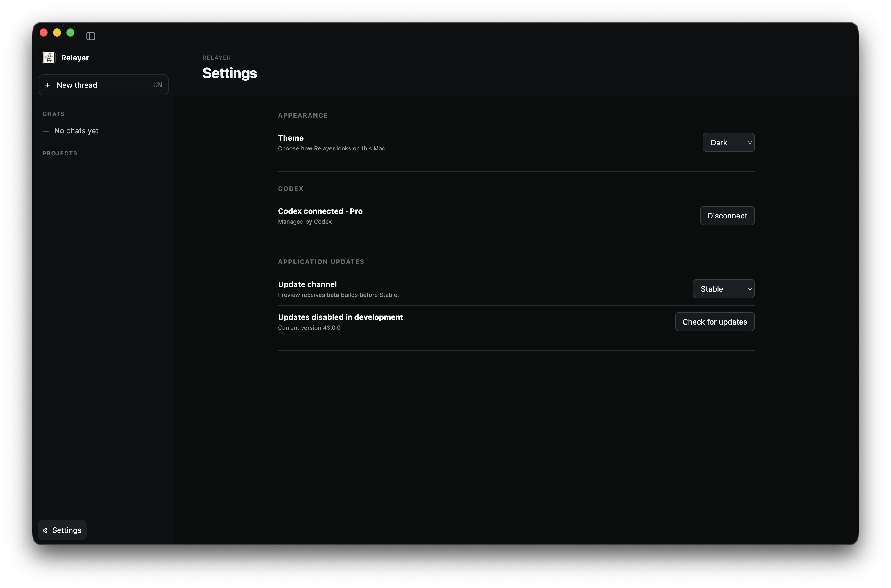
1 2 3SHL-001-E1 — collapsed sidebar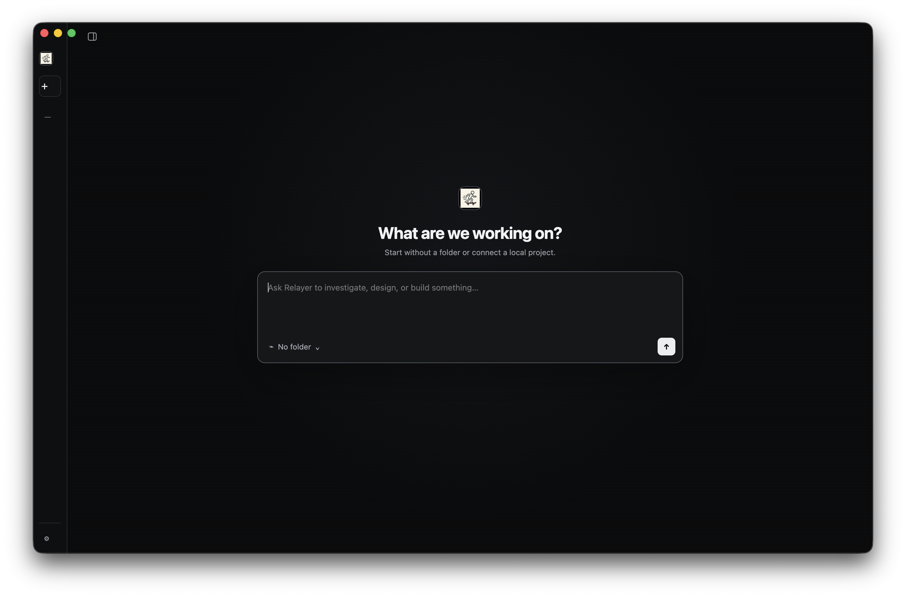
1 2 3This evidence proves packaging and updating only. It does not, by itself, prove persistence, harness execution, graph rendering, or another product capability.
Current checkpoint: Product evidence verifies Preview updates and Stable promotion on Apple Silicon and Intel. Protected workflows published and promoted signed 0.2.13 artifacts for both targets.
Development hosts: The unsigned Relayer Dev and Relayer Eval apps also run on linux-x64 for development. They resolve managed Codex and Claude runtimes for the Linux host. Linux is a development host only; signed release targets stay macOS and Windows x64.
A remote arm64 Mac used macOS 15.6. The signed 0.2.3 app used the Relayer controls to find and install 0.2.4. The update restarted the app and replaced the bundle. It kept the Codex account, Light appearance, and saved Preview choice. Code-signature and Gatekeeper checks passed. The app then showed Up to date without an error.
Protected workflow 32105585844 promoted the same bytes. Stable latest-mac.yml has the same SHA-256 as the verified Preview manifest. The installed 0.2.4 app then selected Stable and checked the live feed. It showed Up to date.
Native Intel workflow 32350071508 updated 0.2.10 to 0.2.11. Protected workflow 32372106406 then promoted the same bytes. Intel Stable and Preview manifests are byte-identical.
Native Apple Silicon workflow 32399053432 updated 0.2.10 to 0.2.11. Protected workflow 32399976404 then promoted the same bytes. Apple Silicon Stable and Preview manifests are byte-identical.
Native workflows 32443697093 and 32443698408 updated Apple Silicon and Intel from 0.2.11 to 0.2.12. Protected workflows 32444315112 and 32444318263 then promoted the same target-specific bytes.
Native workflows 32534359978 and 32534361604 updated both targets from 0.2.12 to 0.2.13. Protected workflows 32535131928 and 32535133480 then promoted the same target-specific bytes.
0.2.2 DMG matched its CDN checksum. Developer ID, Gatekeeper, both staples, arm64 identity, bundle ID, and version passed before installation.32098888395, 32099544204, and 32103757098 signed and notarized the exact merged 0.2.2, 0.2.3, and 0.2.4 commits.beta-mac.yml moved only after public-byte verification.0.2.3 process quit, and the bundle advanced to 0.2.4. The new process preserved Light appearance, the Codex account, and the Preview choice.32105585844 promoted the exact 0.2.4 Preview bytes, recorded an immutable receipt, and moved latest-mac.yml. The installed app consumed Stable and reported Up to date.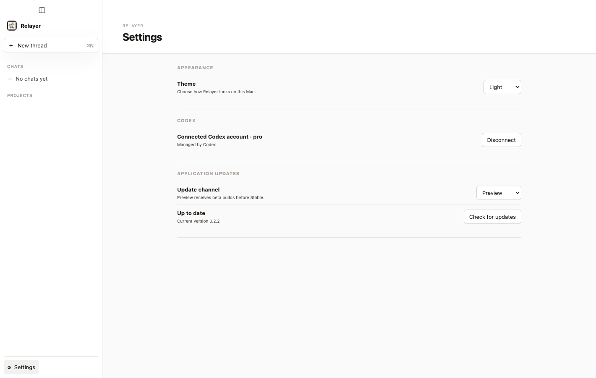
1 2 30.2.2 seed is ready for the real update.1 is the saved Light preference. 2 is the Preview channel. 3 proves the baseline is 0.2.2 and initially up to date.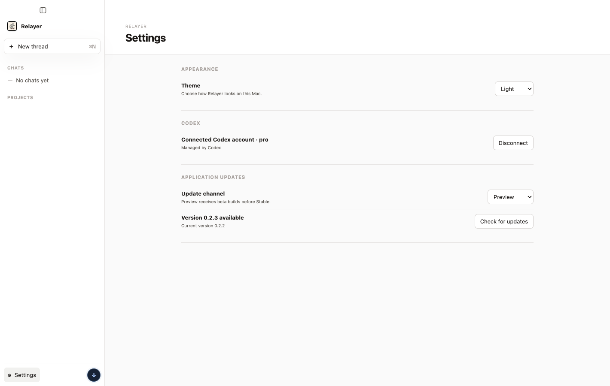
1 20.2.3 to the signed 0.2.2 app.1 shows both current and available versions. 2 is the temporary update indicator in the sidebar.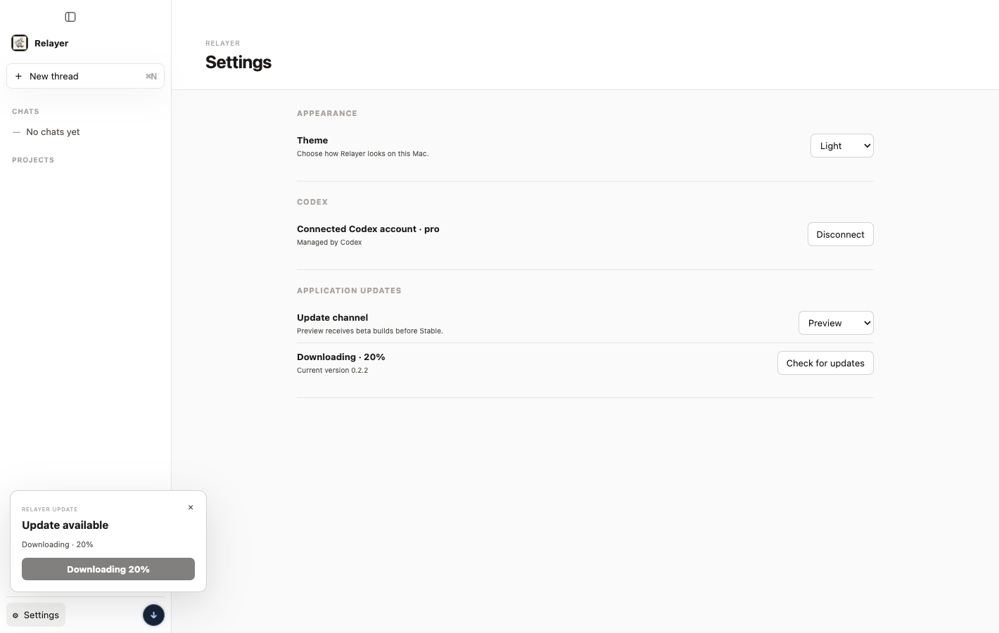
1 2#9 made displayed progress monotonic; the later 0.2.3 → 0.2.4 canary observed 18 → 36 → 56 → 71 → 85 → 99 → 100 with no regression.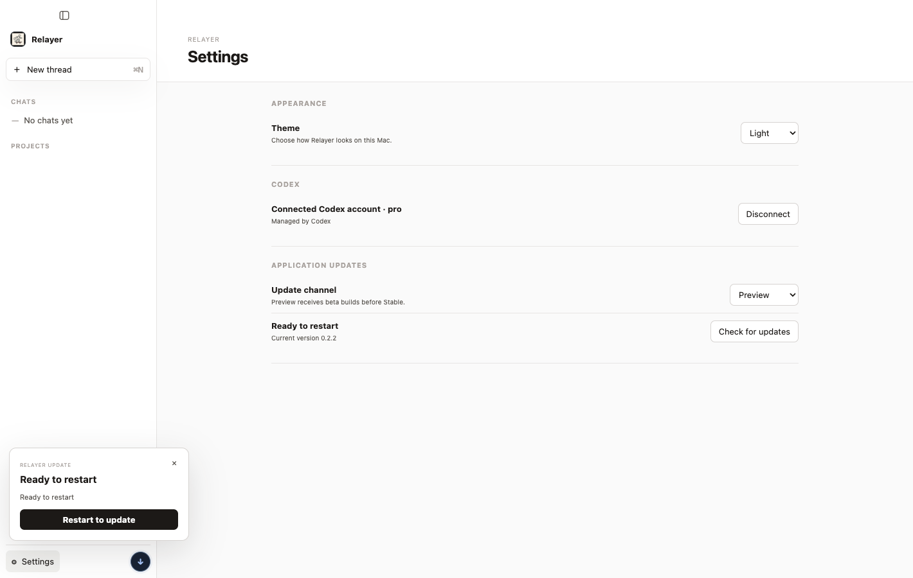
1 20.2.2 with 0.2.3 and the new app returned healthy.1 proves Light appearance persisted. 2 proves the Codex connection remained available without storing personal identity in this image. 3 is the Preview channel. 4 proves the relaunched app is 0.2.3 and up to date.0.2.4 Preview candidate returned healthy after replacement.1 proves Light appearance persisted. 2 preserves proof of the connected Codex account while redacting personal identity. 3 proves an explicitly saved Preview choice survived. 4 proves 0.2.4 is running and up to date.0.2.4 application consumes the promoted Stable feed.1 proves Light appearance remained intact. 2 preserves the connected Codex proof while redacting personal identity. 3 is the selected Stable channel. 4 proves the running Stable version is 0.2.4 and up to date.
0.2.11.0.2.11 Preview target.The real updater popover reports Update available and Version 0.2.11 available.
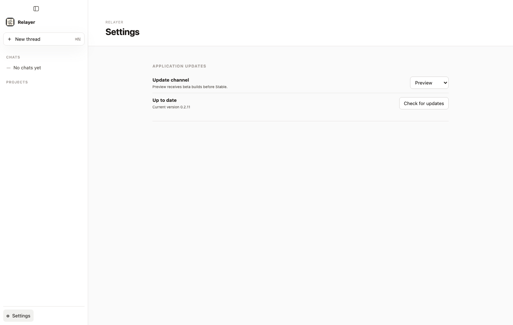
0.2.11 Stable-candidate proof
0.2.11.0.2.11 Preview target.The real updater popover reports Update available and Version 0.2.11 available.
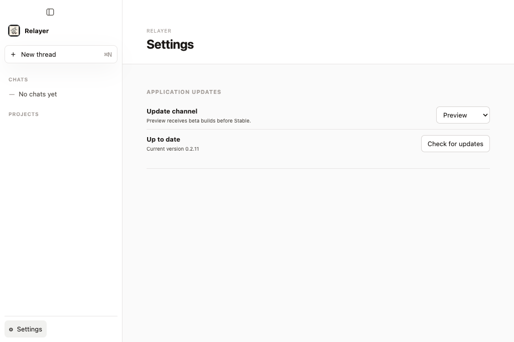
0.2.12 Stable-candidate proof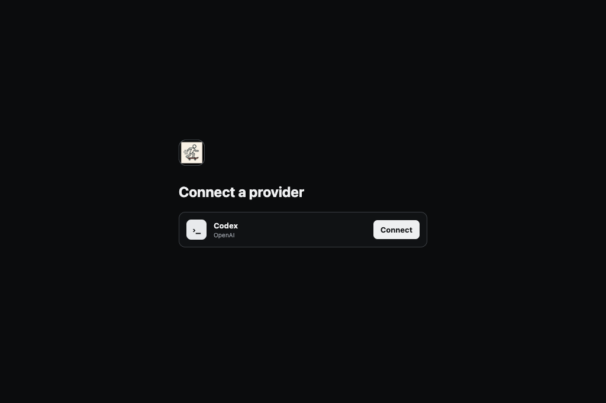
0.2.12.0.2.12 Preview target.The real updater popover reports Update available and Version 0.2.12 available.
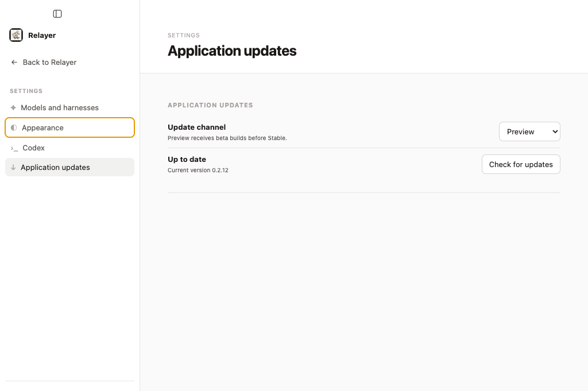
0.2.12 Stable-candidate proof0.2.12.0.2.12 Preview target.The real updater popover reports Update available and Version 0.2.12 available.
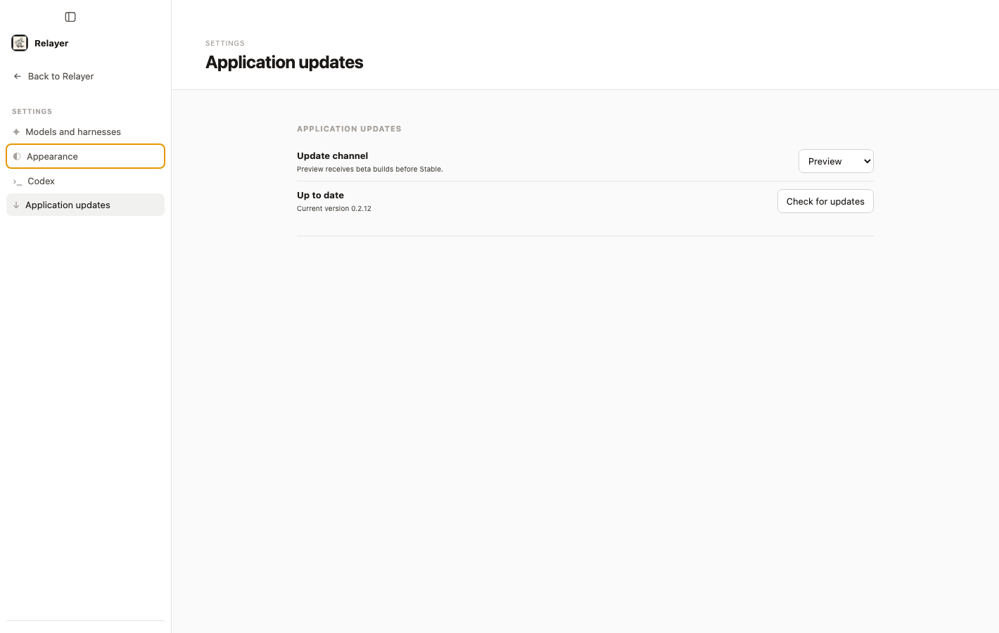
0.2.13 Stable-candidate proof
0.2.13.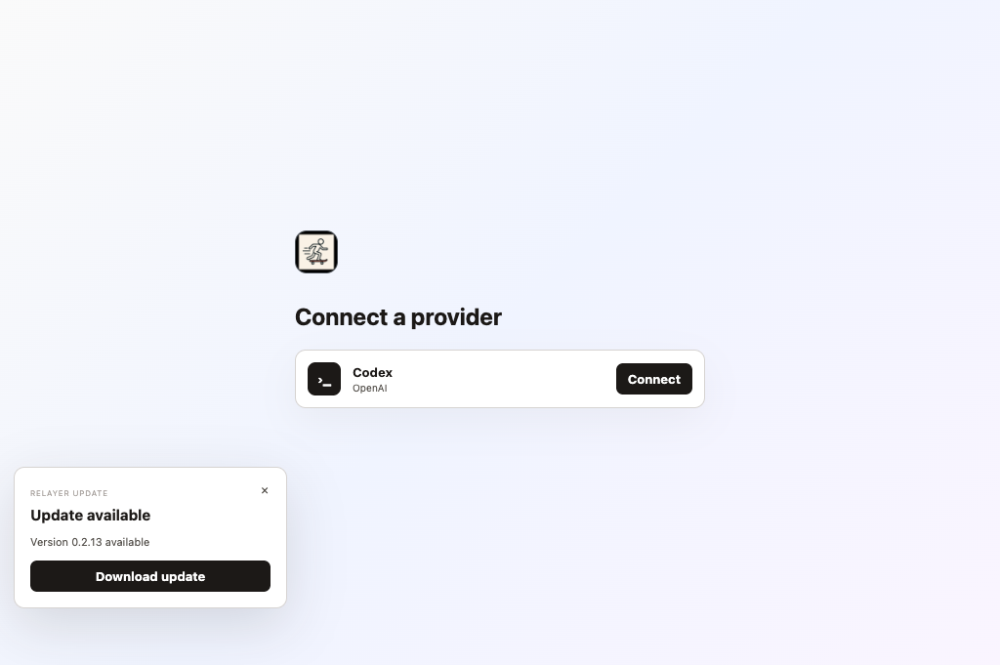
0.2.13 Preview target.The updater reports Update available and Version 0.2.13 available.0.2.13 Stable-candidate proof
0.2.13.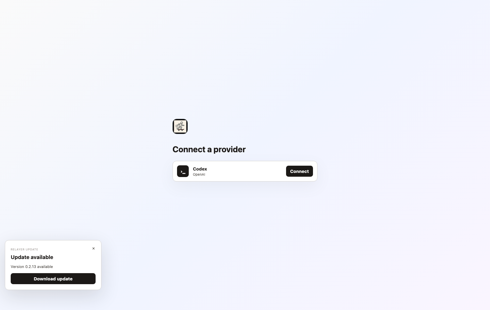
0.2.13 Preview target.The updater reports Update available and Version 0.2.13 available.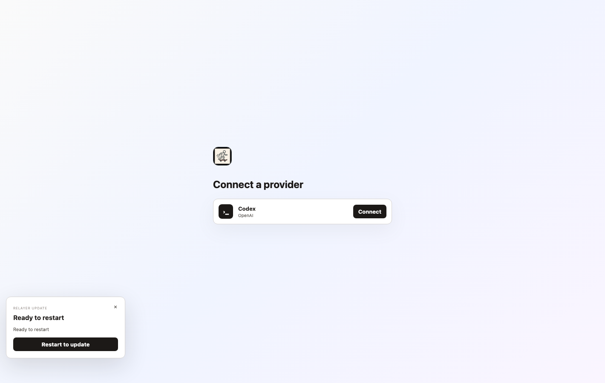
| In scope | Explicitly out of scope |
|---|---|
| Fast unsigned local package for developer visual testing | Harness selection or agent execution |
| Signed, notarized Preview artifact for external beta testing | Complete, graph output, or graph interaction |
| Stable and Preview release identities/channels | Project/worktree completion and thread persistence |
| Hosted update artifact and channel manifest | Windows x64 release; its pipeline is blocked and disabled |
| In-app check, available, download progress, ready, restart, success, and retryable failure states | Later-version SQLite migration and failed-migration recovery, which are validated in the app-server persistence track |
| Previous-Preview-version to current-Preview-version update smoke | Automatic binary downgrade; treating an older application as a safe database recovery mechanism |
ai.relayer.desktop application. Unsigned packages use ai.relayer.desktop.development. Native macOS targets proved 0.2.11 → 0.2.12.https://updates.relayerlabs.ai/desktop. Versioned artifacts are immutable. Target channel metadata is written last.NZ253AL7U6. Notarization credentials come from the local environment or a protected GitHub environment. The repository must not contain these secrets.| Validation | Fast path | Product/release proof |
|---|---|---|
| Updater state machine | Keep one scenario-driven fake-updater test covering no update, available, progress, ready, install request, failure, and retry. No network and no additional test per event. | Screenshots of the actual packaged app in available, downloading, ready-to-restart, and failure states. |
| Unsigned developer package | Build once and inspect the packaged file inventory, bundle identity, icon, and version. | Launch with an isolated profile and capture Settings/About evidence; never present it as a distributable build. |
| Signed Preview package | Verify signing, hardened runtime, notarization, stapling, Gatekeeper acceptance, update ZIP, and checksums with release scripts. | Install the DMG on a clean macOS user, launch it, connect Codex or use a prepared non-secret test profile, and capture the installed app. |
| Real update | Generate two small Preview versions and publish only to the Preview feed. | Verified for Preview The signed canaries updated through the UI and restarted into version N. They verified the new version, Codex account, Preview choice, and preferences. No harness call occurred. |
| Stable promotion | Revalidate the immutable Preview receipt, exact six hosted artifacts, committed canary hash, monotonic version, and conditional Stable pointer write. Never rebuild the candidate during promotion. | Verified Workflow 32105585844 promoted 0.2.4. The public Stable manifest hash equals the Preview hash. The immutable receipt records all six artifact hashes. The installed app checked Stable successfully. |
| Failure safety | Serve an offline feed, missing manifest, and invalid/tampered artifact through one fixture-driven integration scenario. | The packaged app remains launchable on the old version, presents a retryable error, and does not lose the test preference. |
UPD-002-E1 — signed Preview 0.2.0 launchThis arm64 application was built from commit 4e5b9c3d21d2c7bbf902313d655f8e70aac30e75. It has a Developer ID signature and Apple notarization. The test used an empty isolated profile.
Gatekeeper accepted the app. The stapler validated the app and the DMG. The release receipt records the final DMG, updater ZIP hashes, and blockmaps.
Historical screenshot: assets/evidence/desktop/signed-preview-0.2.0.png.
Machine-readable evidence: assets/evidence/desktop/signed-preview-0.2.0-release.json.
UPD-002-E2 — signed Preview feed checkA signed arm64 build from commit 3fb0e658706fd0fd3cc5993b3f353c6f4e1b6a84 used an isolated profile. Its packaged updater selected Preview and requested the sealed beta-mac.yml URL. No Preview release was available. The server returned the expected 403 AccessDenied. The app stayed usable and showed a short retry message.
Historical screenshot: assets/evidence/desktop/signed-preview-0.2.0-updater-empty-feed.png. This evidence does not show a successful update from an earlier version.
Machine-readable evidence: assets/evidence/desktop/signed-preview-0.2.0-updater-empty-feed.json.
UPD-002-E3 — failed diagnostic 0.2.0 → 0.2.1 canaryThe first hosted canary proved discovery, prompt, full ZIP download, checksum acceptance, and ready-to-restart, then failed during native staging. Electron 43's bundled Squirrel patch reverses its numeric-version predicate when ElectronSquirrelPreventDowngrades is present, causing valid 0.2.0 to be rejected as an invalid version. PR #6 removed that broken native flag while retaining the application-level allowDowngrade = false check and monotonic publisher. The failed pair is diagnostic evidence, not a successful product update.
UPD-002-E4 — corrected signed Preview 0.2.2 → 0.2.3The signed 0.2.2 app ran on a remote arm64 Mac. The visible controls found, downloaded, and staged signed 0.2.3. The app then restarted.
The observed sequence was 0.2.2 running → app stopped → bundle replaced with 0.2.3 → 0.2.3 running. The final app passed code-signature verification. It kept the connected Codex account and the saved Light appearance. It selected Preview and showed Up to date without an updater error.
See the annotated screenshots in Current visual proof above. Machine-readable evidence: assets/evidence/desktop/signed-preview-0.2.2-to-0.2.3.json.
UPD-002-E5 — signed Preview 0.2.3 → 0.2.4 Stable-candidate canaryThe signed 0.2.3 app saved Preview as its channel. It found and downloaded the immutable 0.2.4 candidate. The displayed progress did not move backward. The app reached the ready state, stopped, replaced the bundle, and started signed 0.2.4.
The final app passed code-signature verification and Gatekeeper assessment. It kept the Codex account, Light appearance, and Preview choice. It then showed Up to date without an updater error.
Privacy-redacted screenshot: assets/evidence/desktop/signed-preview-0.2.4-installed.png. Machine-readable promotion evidence: assets/evidence/desktop/signed-preview-0.2.3-to-0.2.4.json.
UPD-002-E6 — exact-artifact Stable promotion and product checkProtected workflow 32105585844 promoted 0.2.4 from the immutable Preview receipt after validating the committed 0.2.3 → 0.2.4 canary. It did not rebuild or re-sign the application. Stable latest-mac.yml has SHA-256 1737ebd5d5393970c73f5b1ef41ac128e7090dc0e58d6d57a1f87a7675e430f2, identical to the verified Preview manifest. The installed, notarized 0.2.4 app then selected Stable, checked the live feed, and reported Up to date.
Privacy-redacted screenshot: assets/evidence/desktop/signed-stable-0.2.4-up-to-date.png. Machine-readable receipt: assets/evidence/desktop/signed-stable-0.2.4-promotion.json.
UPD-002-E7 — signed Intel Preview 0.2.10 → 0.2.11 Stable-candidate canaryNative Intel workflow 32350071508 installed the signed-DMG 0.2.10 bootstrap from commit 579a034b1a6ad003a2635f5ca7485f63115f5efc. The visible product controls discovered, downloaded, and staged the immutable 0.2.11 Preview target from commit 088a4168e066bd9a62f2837cfddfd1bb14f8ff07. The app restarted into a different process and reported Preview, Up to date, and Current version 0.2.11.
The sealed 22-record trace is fail-free. It records monotonic displayed progress of 19 → 37 → 47 → 60 → 72 → 84 → 97 → 99. The final app, target DMG, and target ZIP passed signature, notarization, Gatekeeper, public-byte, and publication-receipt checks. Four distinct screenshots show first install, available, ready, and installed states. This evidence passed the protected Stable promotion gate in workflow 32372106406.
See the Intel x64 candidate proof above. Machine-readable canary evidence: assets/evidence/desktop/macos-x64-0.2.10-to-0.2.11/macos-intel-preview-canary.json. Sealed trace: assets/evidence/desktop/macos-x64-0.2.10-to-0.2.11/macos-intel-preview-update.jsonl.
UPD-002-E8 — exact-artifact Intel Stable promotionProtected workflow 32372106406 promoted Intel 0.2.11 after validating the committed canary and immutable Preview receipt. It did not rebuild or re-sign the application. Live Stable latest-mac.yml has SHA-256 1da03a28b3c68bf9300c69621b7fd844b9b10a7051e5aadb2b5a9e579f53b950. It is byte-identical to the verified Preview manifest.
The public DMG has SHA-256 3ca50a030705bc928b5bc04e0918f751fd6a551ff8f411e74d27cd63564bec4e. The public ZIP has SHA-256 79489d76dc46f6a8ea27faab844642287180bf9de11d19f3c8f92fb61dea2c12. Both match the signed candidate and promotion receipt.
Machine-readable Stable receipt: assets/evidence/desktop/macos-x64-0.2.10-to-0.2.11/stable-promotion-macos-x64-0.2.11.json.
UPD-002-E9 — signed Apple Silicon Preview 0.2.10 → 0.2.11 Stable-candidate canaryNative Apple Silicon workflow 32399053432 installed the signed 0.2.10 seed from commit 579a034b1a6ad003a2635f5ca7485f63115f5efc. It updated through Preview to immutable 0.2.11 from commit 088a4168e066bd9a62f2837cfddfd1bb14f8ff07.
The sealed 20-record trace is fail-free. Displayed progress advanced through 10 → 25 → 38 → 54 → 70 → 82 → 99. A different process relaunched into Preview 0.2.11.
Four distinct screenshots show first install, available, ready, and installed states. The target app and both DMGs passed signature, notarization, Gatekeeper, and receipt checks.
See the Apple Silicon candidate proof above. Machine-readable canary evidence: assets/evidence/desktop/macos-arm64-0.2.10-to-0.2.11/macos-arm64-preview-canary.json. Sealed trace: assets/evidence/desktop/macos-arm64-0.2.10-to-0.2.11/macos-arm64-preview-update.jsonl.
This evidence passed the protected Apple Silicon Stable promotion gate in workflow 32399976404.
UPD-002-E10 — exact-artifact Apple Silicon Stable promotionProtected workflow 32399976404 promoted Apple Silicon 0.2.11 after validating the committed canary and immutable Preview receipt. It did not rebuild or re-sign the application.
Live Stable latest-mac.yml has SHA-256 c87bf5b830b2053a0b4e5b7f6bc3b5504f10b3b08a38f3b42006c817f43aa711. It is byte-identical to the verified Preview manifest.
The public DMG has SHA-256 247738cfe47b89a5f6d12a7e678a01fe11eb85e9d62baa6b27c8f08addf5a2ee. The public ZIP has SHA-256 df89b90b3e31998af608c99efe271e378f96346ee437c7305182a7c921615d24. Both match the signed candidate and promotion receipt.
Machine-readable Stable receipt: assets/evidence/desktop/macos-arm64-0.2.10-to-0.2.11/stable-promotion-macos-arm64-0.2.11.json.
UPD-002-E11 — signed Apple Silicon Preview 0.2.11 → 0.2.12 Stable-candidate canaryNative Apple Silicon workflow 32443697093 installed signed 0.2.11 and updated through Preview to immutable 0.2.12 from commit a1ca4c76d1dae8fa1d4d2590d23401d7dff2874c.
The sealed 17-record trace is fail-free. Displayed progress advanced through 18 → 45 → 70 → 92 → 99. A different process relaunched into Preview 0.2.12.
See the Apple Silicon candidate proof above. Machine-readable canary evidence: assets/evidence/desktop/macos-arm64-0.2.11-to-0.2.12/macos-arm64-preview-canary.json.
UPD-002-E12 — signed Intel Preview 0.2.11 → 0.2.12 Stable-candidate canaryNative Intel workflow 32443698408 installed signed 0.2.11 and updated through Preview to immutable 0.2.12 from commit a1ca4c76d1dae8fa1d4d2590d23401d7dff2874c.
The sealed 21-record trace is fail-free. Displayed progress advanced through 10 → 29 → 43 → 61 → 79 → 97 → 99. A different process relaunched into Preview 0.2.12.
See the Intel candidate proof above. Machine-readable canary evidence: assets/evidence/desktop/macos-x64-0.2.11-to-0.2.12/macos-intel-preview-canary.json.
UPD-002-E13 — exact-artifact Apple Silicon 0.2.12 Stable promotionProtected workflow 32444315112 promoted the exact Apple Silicon Preview bytes after validating the committed canary. Stable and Preview manifests share SHA-256 78e7e680461987aa419e4ceaef6d3ea516de73197f5c4d50f42fbd88635f6da8.
Machine-readable receipt: assets/evidence/desktop/macos-arm64-0.2.11-to-0.2.12/stable-promotion-macos-arm64-0.2.12.json.
UPD-002-E14 — exact-artifact Intel 0.2.12 Stable promotionProtected workflow 32444318263 promoted the exact Intel Preview bytes after validating the committed canary. Stable and Preview manifests share SHA-256 7e84221925bf3639a8e87960f182550b98dcd6f92f78f7753dfe7c9888af248c.
Machine-readable receipt: assets/evidence/desktop/macos-x64-0.2.11-to-0.2.12/stable-promotion-macos-x64-0.2.12.json.
UPD-002-E15 — signed Apple Silicon Preview 0.2.12 → 0.2.13 Stable-candidate canaryNative workflow 32534359978 updated signed 0.2.12 through Preview to immutable 0.2.13 from commit 4bef0e29e295964eb700b8a67ff55696c0c9f238.
The sealed 15-record trace is fail-free. Progress advanced through 46 → 88 → 99. A different process relaunched into Preview 0.2.13.
See the Apple Silicon candidate proof above. Machine-readable evidence: assets/evidence/desktop/macos-arm64-0.2.12-to-0.2.13/macos-arm64-preview-canary.json.
UPD-002-E16 — signed Intel Preview 0.2.12 → 0.2.13 Stable-candidate canaryNative workflow 32534361604 updated signed 0.2.12 through Preview to immutable 0.2.13 from commit 4bef0e29e295964eb700b8a67ff55696c0c9f238.
The sealed 22-record trace is fail-free. Progress ended at 99. A different process relaunched into Preview 0.2.13.
See the Intel candidate proof above. Machine-readable evidence: assets/evidence/desktop/macos-x64-0.2.12-to-0.2.13/macos-intel-preview-canary.json.
UPD-002-E17 — exact-artifact Apple Silicon 0.2.13 Stable promotionProtected workflow 32535131928 promoted the exact Apple Silicon Preview bytes after validating the committed canary. Stable and Preview manifests share SHA-256 dbb4d1741a772454bf2fee3317328ea2d0e8b27b0cfd1b6c540eb2275930ce5b.
Machine-readable receipt: assets/evidence/desktop/macos-arm64-0.2.12-to-0.2.13/stable-promotion-macos-arm64-0.2.13.json.
UPD-002-E18 — exact-artifact Intel 0.2.13 Stable promotionProtected workflow 32535133480 promoted the exact Intel Preview bytes after validating the committed canary. Stable and Preview manifests share SHA-256 90f004148a1d045a002c704e91a2cfdf377d728343f76fb0e5ee254567243341.
Machine-readable receipt: assets/evidence/desktop/macos-x64-0.2.12-to-0.2.13/stable-promotion-macos-x64-0.2.13.json.
This slice completes Preview distribution, the previous-version update canary, and the first Stable promotion. The full desktop distribution requirement is still partial.
The macOS 13.3-through-current test matrix is not complete. Tests for a corrupt hosted artifact and restart deferral are also not complete. The initial SQLite schema and fail-closed validation exist. A later-version migration and a forced-failure recovery test remain open.
The graph engine is the only component that opens graph storage or validates graph writes. The Rust app server uses the graph server and persistent harness host. It does not introduce another graph implementation.
| Component | Implementation | Owns | Must not own |
|---|---|---|---|
| Graph engine | Rust library | Storage, graph records, validation, transactions, accepted display closure | Prompts, model sessions, projects, desktop behavior |
| Local graph API | Reusable Rust router plus standalone binary | Loopback transport, token enforcement, request serialization | A second copy of graph rules |
| Graph clients | TypeScript and Python | Agent-friendly objects, references, requests, repairable errors | Database access or authoritative validation |
| Node harness host | Persistent Node process | Harness implementation map, live Codex/Prime sessions, Complete calls | Graph storage or product thread lifecycle |
| Evaluation runner | Node package and local service | Cases, component startup, checks, judge, immutable result bundle | A separate mock Complete or product graph model |
| Relayer app server | Rust process, developed with desktop | Projects, threads, interactions, worktrees, harness coordination, product reads | Harness prompts or duplicated graph rules |
The standalone graph-server binary exists so the harness and evaluation can run before the full product server is built. Production mounts the same graph router and links the same graph core inside the Relayer app server; it does not ship two competing graph authorities.
Relayer product storage owns projects and threads. Graph core does not create project records, thread records, project graphs, thread graphs, graph spaces, or a separate interaction graph. It stores the product-owned positive-integer projectId and threadId on graph records as provenance. Threads with the same project ID read the same accepted graph records. A no-project thread stores projectId = null and reads only records carrying its own thread ID, so standalone threads never share graph records.
Every user turn is represented by one canonical user-interaction graph node. That node's NodeReference is also the product interaction identity after integration; no second interactionNodeId is synthesized. The host supplies project/thread IDs when it asks graph core to create this node. A graph capability stores only the node reference. On every graph request, the engine calls GraphDatabase::writer_for_subgraph(node) and derives read visibility plus draft-write authority from the persisted node.
type NodeReference = number; // positive SQLite integer assigned after successful submission
type EdgeReference = number;
type LayerReference = number;
type ActionReference = number;
type GraphNode = {
ref?: NodeReference;
icon: string;
title: string;
detail: string; // Markdown/HTML-compatible product detail
};
type GraphEdge = {
ref: EdgeReference;
endpoints: readonly [NodeReference, NodeReference]; // undirected
};
type EdgeShape = "default" | "straight" | "arc-outward" | "arc-circle" | "elbow-horizontal" | "elbow-vertical";
type NodePlacement = { node: NodeReference; x: number; y: number }; // 0..1
type NodeSide = "top" | "right" | "bottom" | "left";
type EdgeEnd = { node: NodeReference; side?: NodeSide }; // no side = automatic
type EdgeRoute = {
edge: EdgeReference;
shape?: EdgeShape; // this edge only; otherwise the layer's edgeShape
ends?: [EdgeEnd, EdgeEnd]; // the edge's two nodes; waypoints are listed from ends[0] to ends[1]
waypoints?: { x: number; y: number }[]; // 0..1 layout coordinates, at most 4; requires ends
};
type LayerLayout = {
version: 1;
placements: NodePlacement[]; // one per node; list order is the layer's reading order
edgeShape: EdgeShape; // the layer's default; required on submit; absent on older layers means "default"
edgeRoutes?: EdgeRoute[]; // optional; at most one per edge
};
type GraphLayer = {
ref: LayerReference;
nodes: NodeReference[];
edges: EdgeReference[]; // exact visible connections, never inferred
layout: LayerLayout; // agent-authored geometry
};
type NavigateRelation = "expand" | "reference";
type NodeAction =
| { ref: ActionReference; source: NodeReference; sourceLayer?: LayerReference; kind: "navigate"; relation: NavigateRelation; label: string; targetLayer: LayerReference }
| { ref: ActionReference; source: NodeReference; sourceLayer?: LayerReference; kind: "invoke"; label: string; interactionText?: string };
A layer packages exact node and edge references. A navigate action opens a layer, including a layer that contains one node.
Actions remain node-owned. Node-level actions also record their authoring layer. The product does not expose this provenance or the navigate relation.
interface GraphClient {
getNode(ref: NodeReference): Promise<GraphNode>;
getNeighbors(ref: NodeReference): Promise<GraphNode[]>;
submitNode(node: GraphNode): Promise<NodeReference>; // preview?: GraphPreview for authored-detail nodes
createEdge(left: GraphNode | NodeReference, right: GraphNode | NodeReference): Promise<EdgeReference>;
createEdges(pairs: ReadonlyArray<readonly [GraphNode | NodeReference, GraphNode | NodeReference]>): Promise<EdgeReference[]>;
submitLayer(layer: GraphLayer, options?: { sizeJustification?: string }): Promise<LayerReference>; // preview?: GraphPreview
addAction(source: GraphNode | NodeReference, action: NodeAction): Promise<ActionReference>;
submit(interactionNode: NodeReference): Promise<ResolvedGraphLayer>;
}
type GraphPreview = {
status: "rendered" | "cached" | "failed" | "limit_reached";
path?: string; width?: number; height?: number;
};
The clients are object-oriented because models are better at constructing and repairing nodes and layers than remembering large collections of raw IDs. A local node object receives its stable reference after its first successful submitNode. Resubmitting that same local object updates its current draft rather than creating a duplicate. The draft's checkpointed authored detail follows a three-state rule. A resubmission that omits authoredDetail retains the stored package. authoredDetail: null clears it, and a package replaces it. The TypeScript client sends null only after an explicit detailAuthoring.clear(); an untouched empty builder omits the field, and clients that never mention the field retain. A different local object that reuses a stable client key updates that same draft, including its package. A rejected edit preserves the last valid draft and returns a field-specific error so the harness can repair and resubmit it.
createEdge accepts node objects or references. Creating an edge from a new node to an accepted historical node does not resubmit or modify the historical node. Adding an accepted node to a new layer also does not modify it. Accepted historical records are immutable; a changed explanation is represented by a new node connected to the old node.
| Operation | Deterministic checks | Repair behavior |
|---|---|---|
submitNode | Required icon/title/detail, supported markup, field and payload limits | Return exact invalid field and keep the last valid draft |
createEdge | Both endpoints submitted, no self-edge, no duplicate undirected edge | Return the offending endpoint or existing edge |
submitLayer | Validate members, edges, uniqueness, connectivity, and size. Layers with 6–8 nodes require a hidden justification. Reject larger layers. Require an authored layout with one placement per node and an edgeShape from the closed vocabulary. Each edge route names an edge in this layer, at most once. Its ends are exactly that edge's two nodes. Sides and shapes come from their closed vocabularies. An edge may have at most four waypoints, each from 0 through 1. Waypoints require ends. | Return the precise object or size failure. Discard a valid size justification. Return missing_edge_shape or unsupported_edge_shape with the allowed values. Return the precise route problem and its path, such as edge_route_outside_layer, edge_route_ends_mismatch or too_many_waypoints, with the allowed values. |
addAction | Validate source, authoring layer, kind, relation, target, ownership, visibility, and context-specific authoring permission. | Return the invalid source, target, provenance, or field. |
submit(interaction) | Require one root expand action. Validate the current-authored closure, expand acyclicity, references, authority, and orphan drafts. | Keep all drafts hidden. Return the exact repairable path. |
Error responses contain a stable code, an object path, and a repair message. The message is part of the agent contract. It must identify the failure and the corrective operation. The engine does not make a semantic judgment.
graph.submit(interactionNode) is the deterministic completion boundary. It derives exactly one interaction-authored root expand action.
The engine traverses only current-interaction actions. Expand paths must be acyclic. Reference paths can branch, share destinations, or cycle.
A visited set terminates reference traversal. Accepted reference targets are immutable boundaries. The engine validates visibility and authority without reaccepting their history.
The engine rejects unreachable current-interaction layers. One atomic operation accepts the valid reachable drafts. A focused flat root remains valid.
The accepted return value is a ResolvedGraphLayer containing full node objects, exact visible edges, and node actions for the root layer. This is the immediate display payload returned by Complete. The persisted layer reference remains the source for later navigation and reload.
The Rust graph router is exposed on loopback HTTP; a Unix-domain-socket transport may replace loopback only if the Codex sandbox cannot reach it. Harnesses do not use MCP as the graph transport, do not open SQLite directly, and do not treat a CLI as the primary graph API. They access graph state through typed TypeScript or Python clients and the loopback Rust API. A selected harness may still use implementation-owned native tools or MCP for non-graph capabilities such as browser use. Those mechanisms do not carry GraphComplete authority.
For claude.basic, Auto remains bound to SDK acceptEdits. Its harness binding pre-approves one code-owned coarse browser MCP unit through allowedTools. SDK 0.3.250 runs that unit without a user prompt or a separate model or Relayer reviewer. Ask leaves the unit unlisted. Full keeps bypassPermissions. Relayer does not inspect or classify inner browser actions. This harness-specific automatic approval is the settled issue #250 contract, not a browser permission mode.
When previews are on, claude.basic also pre-approves one code-owned view_graph_preview tool in Ask, Auto and Full. It returns only PNGs from the running turn's preview folder and grants no other file access.
POST /api/control/capabilities (trusted remint after restart)
POST /api/graph/nodes
POST /api/graph/edges
POST /api/graph/layers
POST /api/graph/actions
POST /api/graph/submit
GET /api/graph/nodes/:id
GET /api/graph/nodes/:id/neighbors
GET /api/graph/layers/:id
GET /api/graph/nodes/:id/output
Every harness request carries an opaque random capability token. The server stores only token -> canonical NodeId in the current slice. That node defines project and thread visibility. It also defines the writable draft subgraph for the short-lived GraphWriter. submit(node) must receive the same root node. The engine rejects writes after that node has an accepted completion.
The token never enters graph content, evaluation evidence, the renderer, or the harness state file. Each Complete call receives a host-owned graph-scope handle. The handle closes and the Rust token is revoked when that call settles.
The host persists the copied harness configuration and implementation-owned opaque JSON resume state. It recreates the harness object after a restart without graph credentials. Trusted control code supplies a new capability only when it starts a Complete call.
The two-turn evaluation verifies distinct, revoked capabilities and one persistent harness object. A full process-restart recovery evaluation remains future work. Provider credentials remain in product-owned secret storage.
Goal: Make useful graph expansion and evidence references reliable across task types and both production harnesses.
Primary issue: #36 Enable recursive graph navigation generally.
Current status: Verified on the implementation branch. PR #32 supplied the second required harness.
flowchart LR
I19["#19 Judge foundation — Done"] --> I36["#36 Expand and reference semantics — Verified"]
PR32["PR #32 Prime Agent harness — Merged"] --> I36
I23["#23 Durable invoke foundation — Done"] --> I55["#55 Resolve invoke into navigation — Blocked"]
I36 --> I55
I28["#28 Breadcrumb foundation — Done"] --> I56["#56 Generic navigation history — Done"]
I36 --> I56
I55 --> I56
I52["#52 Graph search — Parallel"] -. "Improves reference discovery; does not block" .-> I36
classDef done fill:#eaf7ee,stroke:#49a267,color:#173120
classDef ready fill:#ece8ff,stroke:#7557e8,color:#302751
classDef parallel fill:#edf5ff,stroke:#3478bd,color:#172c46
classDef blocked fill:#fff7df,stroke:#d4a62c,color:#352b13
class I19,PR32,I23,I28 done
class I36 done
class I52 parallel
class I55,I56 blocked
Solid arrows are delivery dependencies. The dashed arrow is non-blocking enablement. No issue in this DAG expands #36 scope.
run-2026-08-21T02-17-18-144Z-213ecbe6 passed both Luna harnesses with Sol High judging.Goal: Let authorized agents query accepted graph structure without known record identifiers.
Primary issue: #52 Add graph search functionality.
Current status: The product contract is settled. The first graph-search delivery lane targets macOS Apple Silicon only. Intel macOS and Windows remain deferred qualification lanes. They do not block the Apple Silicon implementation stack. They remain unsupported for graph search until their target gates pass. The Issue #261 feasibility work rejects older upstream Ladybug artifacts as shipped. Exact Ladybug 0.18.0 uses pinned static OpenSSL and Relayer-owned link metadata without a fork. The Apple Silicon corpus, lifecycle, packaging, and signed-release gates remain required. Upstream 0.20.0 is a requalification candidate, not an automatic replacement. The graph-search contract stays unchanged.
query-v1 profile can mint search authority.interaction.context, and unresolved invokes never enter the searchable topology.The versioned graph-query contract freezes grammar, values, topology, limits, errors, and compatibility.
An agent sees what it authored as it writes it. When the run supports previews, a successful submitLayer returns a PNG of that draft layer. It shows the production graph pane at its size in the default desktop window, with Node Details closed and Fit applied. A successful submitNode for a node with authored detail returns a PNG of its Node Details panel. It shows the panel at its in-app size, first screen only. Resubmitting the same object returns a fresh image. Images render the full, unredacted draft, because the only viewer is the agent's own model. The render runs in an isolated window with no credentials, product IPC or network access. It uses the user's light or dark theme; Eval renders dark.
The graph server renders as part of the write, through the render bridge the host registered: Electron on desktop and Chromium in Eval. Identical content returns the cached image. Renders run one at a time. A per-interaction safety ceiling stops runaway loops.
The image is advisory. It never affects validation, acceptance or graph.submit, and a failed render never fails the write. The harness configuration declares whether its harness can show images to its model. Codex opens previews with its native image viewer. Claude uses the view_graph_preview tool. Prime attaches them with its native attach_image skill, which works only when the selected model accepts images. Unsupported runs, and hosts without a renderer, receive no preview and no preview guidance.
An existing Codex, Claude or Prime session may add draft preview support without replacing its native conversation. Registration accepts this addition only when the other execution settings, graph search capability, permission profile and workspace remain compatible. It persists the current configuration and grants previews for subsequent completions. Disabling previews or changing another execution boundary still uses the existing strict checks.
Preview images are transient. Desktop keeps them only for the running turn and never records the image. Eval keeps them as run artifacts. They never enter product storage, conversation export or shared snapshots. A harness's own native session history may keep an image its model viewed, as it keeps any tool result. That history belongs to the harness, not to Relayer's records.
submitLayer and on authored-detail submitNode, and fresh images on resubmission. They also prove caching, failure isolation, the flag-off and no-bridge paths, the ceiling and interaction scoping.preview field, the flag and the guidance omission. The claude-preview-session.test.ts scenarios observe live and saved session registration, unchanged native resume identity and the next query receiving and using the preview tool. The native-preview-session.test.ts scenarios observe Codex and Prime live and saved registration through their real adapters. They verify native identity, preview guidance and scope, descriptor persistence, reopen and transient folder cleanup. All three reject changed permission profile, workspace and graph search before execution or storage mutation. The configuration.test.ts tests retain strict equality and digest identity and reject incompatible configuration changes.fixture.graph-preview Eval fixture proves the author, see, fix and see-again loop through the real Eval host and renderer.npm run evidence:agent-preview captures real Electron images in both themes and checks isolation and cleanup.renderer. Absent means the graph renderer. artifact is the only other value now; the set can grow.artifact. It is valid only as the single member of an artifact layer.artifact.kind and artifact.source are required. part, viewport, state and the server invoke are optional per kind.submitNode and submitLayer errors.invoke: "server". It never calls Complete.submitLayer for an artifact layer returns a PNG of the viewer showing that artifact.artifact on node objects and renderer on layer objects.type CompleteInputGraph = NodeReference;
interface HarnessRunContext {
origin: { kind: "root" } | { kind: "invoke"; sourceCompletionId: GraphId; actionId: GraphId };
inputGraph: GraphNode;
graph: HarnessGraphScope;
}
interface Harness {
complete(context: HarnessRunContext, signal?: AbortSignal): NativeExecutionHandle;
state(): HarnessSessionState;
dispose?(): void | Promise<void>;
}
interface NativeExecutionHandle {
readonly attached: Promise<OpaqueHarnessState>;
readonly settled: Promise<ProviderExit>;
stopSelf(reason: SafeReason): Promise<void>;
}
The external name remains complete(inputGraph), and that input graph is only a pointer to an already-prepared canonical interaction node. A GraphComplete thread is a graph of completions, not a provider conversation. The trusted human or invoke adapter prepares or exactly recovers the identity, origin, and capability before invoking the shared completion-execution module. The host resolves the pointer once and creates one run context. The persistent harness keeps its working directory and may retain provider-session state as an optimization, but it does not persist a current graph credential.
Complete returns a CompletionHandle whose current and result are settled from durable GraphComplete state independently of NativeExecutionHandle.settled. A successful Return may resolve the semantic result while provider cleanup continues. Provider exit while GraphComplete remains active records trusted failure and never implies success. An explicit recursive call is bound or launched only through that provider adapter's defined native mechanism. Collaboration or RLM trace events alone never create semantic children.
One GraphComplete completion owns one independently runnable provider execution attachment. Provider-native helpers remain inside that attachment and may share its completion authority. Their creation does not create GraphComplete children.
An explicit complete(inputGraph) call creates a new semantic completion and a distinct provider execution attachment. The adapter may use a fresh provider session or safely multiplex an existing session.
Required context and identity come from GraphComplete rather than hidden provider history. The attachment retains the harness's ordinary native helper infrastructure. A helper may ask its owning orchestrator to create semantic work, but helper topology is never mirrored automatically.
Codex binds a semantic child to a fresh app-server thread and turn whose orchestrator receives the child scope. Codex-native subagents remain internal helpers for that orchestrator. Claude binds a semantic child to a fresh Agent SDK query that neither resumes nor replaces the root session. Prime binds a semantic child to a fresh ordinary Prime session and execution. Prime's RLM and subagents remain internal helpers unless that execution explicitly calls Complete again.
An invoked child resolves its inherited model selection to the family plan current at launch. It is admitted like a root turn, with its own attempt record, before its provider starts. It holds its provider leases until its provider run has ended, even when its graph current settles first. A child that cannot be admitted never starts, and it fails with the admission's reason.
Codex and Prime teach explicit semantic child work in their prompts, and only when the product grants that execution a completion broker.
Codex, Claude, and Prime Agent baseline communication guidance treats its current layer as the way to explain work while doing it. It asks for an early useful finding, uncertainty, or consequential question, then advances when the user's understanding materially changes. When it uses authorized semantic children, it observes their current updates, reads the published layers, and incorporates useful findings. Questions include the decision that depends on the answer and an appropriate input action. Answers enter the next ordinary interaction; they never automatically resume the running completion. Empty status updates and invented findings do not satisfy this guidance.
This baseline includes an executable early-publication example that preserves access to prior current and ends with explicit submission. It is model guidance, not a mandatory Advance or child-count acceptance rule. Each harness uses its supported authoring language and retains ownership of native execution and helper recursion. The verification record maps actual Codex, Claude, and Prime Agent prompt delivery, publication, prior-current integrity, and provider isolation to deterministic checkpoints. It separates the live pilot's timing evidence from quality and error tradeoffs.
A parent treats each change to a child's current as an event it may act on. It advances its own current when that gives the user a more useful view, not on every change. The parent awaits these events itself; nothing wakes it automatically.
The approved contract in #632 gives every newly prepared canonical InteractionNode one immutable, versioned CompletionContract. Trusted preparation atomically seals its normalized input, typed authorities, Return requirements and digest before capability activation or inference. Complete rejects missing, incompatible or mismatched contracts for new-format preparations. Exact recovery preserves the original contract. The executing completion can inspect all of it; secrets, execution state, provider sessions and harness switches are separate.
Advance publishes durable useful progress while the interaction continues. It validates the complete prospective Return transaction, including staged accepted-history changes. Those changes publish only on Return, after concurrency revalidation. Return selects the full response and ends this interaction's authoring; it does not declare the user's broader task complete. Stop or failure retains the last Current Layer without a Returned Layer.
InvokeActions remain immutable definitions on their response Nodes. Newly authored actions allow one call by default; repeated calls require explicit reusable intent for a meaningful workflow. Exact-key recovery is the same call, not another use. Existing frozen definitions retain their original semantics. Each Invocation is a durable separate call with at most one child InteractionNode and its own result. Subcomplete records the parent relationship at the exact source response Node using the sealed interaction rules. Calls may originate from the author's draft before Advance. Children receive their own sealed input and authority and may finish after their parent. Later graph reads follow existing access rules. Provider-native helpers remain execution details.
An invoked SubCompletion also integrates its contribution into the overall analysis connected to the response Node owning the InvokeAction, as directed by its sealed InteractionNode. That analysis may contain Nodes with nested content Layers. A detached result or a new result button alone does not satisfy this obligation. Details, comparisons, recommendations and conclusions must remain coherent after each Return. Updates preserve older accepted Layers as history and publish only within the child's explicit authority. Deterministic validation proves the authorized integration was published, not that the model's analysis is semantically good.
The default human-gate example runs one SubCompletion at a time. Reusable invocation examples use meaningful distinct inputs, such as entering different vacation destinations for comparison, with distinct result controls beside Invoke. Repeated identical parallel calls are not the default demonstration; scheduled activation is not introduced by this slice.
Each returned call has one visible result control. When the source Node already exposes Navigate to that exact Returned Layer, this control also represents the call result. Product must not append a duplicate result button. Activation follows that Navigate path and preserves the invoking Node in breadcrumbs, refresh, and Back/Forward. Plain and compiled Node Details follow the same rule. Unrelated controls and graph records remain unchanged. Pending or unavailable results retain a disabled status control; missing navigation never invents an edge.
For field-plus-Invoke, the callable explicitly references the input actions it consumes. Product groups connected fields with that Invoke control; proximity alone never establishes a binding. Invoke accepts the current valid answers, saves them through the existing revision-checked input draft, and selects only connected values. Standard fields show Undo without a separate confirmation check mark. Invoke-bound answers stay scoped to their Invoke and are excluded from ordinary Send. Trusted preparation validates the exact required question/value set and freezes it in the child contract before execution. Missing or invalid answers, extra arguments, failed saves, and stale revisions are refused. Successful submission clears only its connected submitted input epochs. Unrelated inputs and newer committed or staged edits survive. Refused submissions keep their inputs. One input may connect to multiple Invokes; a subsequent call needs fresh input after clearing. Exact recovery after clearing uses the original submission's frozen arguments. Reusing a key with different inputs is rejected. Neither the callable definition nor the call key is mutable argument storage. Existing frozen preparations retain their original argument snapshots.
First-slice conversation and share snapshots preserve reusable calls as versioned, inert V4 provenance. Each call preserves its export-local identity, immutable source callable, parent Node, exact frozen arguments, lifecycle, accepted Current, and distinct Returned result. This includes graph-prepared calls not yet bound to a Product turn. Uncalled callable input bindings are preserved. Import gives graph records fresh canonical identities and retains inert call provenance coherently through re-export. It cannot execute imported calls, prepare native calls, or grant CompletionContract authority. Reusable results never use legacy one-shot Action origins or mutate the source Invoke target. Legacy export/import uniqueness remains unchanged, and older readers reject V4 rather than silently losing call history. The local viewer and deployed hosted-format capability require separate qualification; no live publication is authorized by local export support.
All exceptional permissions live under one authorities field. Requirements never grant authority. Accepted answers identify the exact accepted action and its snapshot; one interaction cannot answer that action twice. Presenting Layer remains preparation provenance. Existing frozen records keep their original semantics. New contract versions never silently backfill or reinterpret legacy authority.
Delivery uses three stacked PRs: #658 complete an interaction end to end, #659 continue work across executions, then #660 capture inert Eval Replay. Each human gate supplies an exact-candidate video and an isolated local build the user can try. Fixture demonstrations are explicitly labeled. Human acceptance is separate from automated proof, and downstream work cannot claim the preceding gate passed.
Authoring field-plus-Invoke does not require inventing or awaiting database IDs. TypeScript inputActions and Python input_actions may reference exact Input declarations. Input and Invoke remain separate runtime kinds. Visual programs resolve explicit tagged references against their own mounted Input declarations on the same source Node, across components and independently of display order. The action-writing API persists referenced Inputs with stable keys before persisting Invoke's canonical bindings. Nodes and Layers still precede action writes; visual compilation alone never creates an action. Invalid, unresolved, duplicate, wrong-kind or cross-Node references are refused wherever locally observable before writes, with native graph integrity and authority validation remaining decisive. Late network or native failures can leave retryable draft Inputs; this is not multi-action atomicity. Single-call and explicit reusable policy remain independent.
CC-001: atomic seal, exact recovery and reopen; absent, unknown-version, altered-input and digest-mismatched new-format preparations fail before inference.CC-002: typed client and harness expose the entire contract and exact input snapshots; caller payloads cannot add authorities.CC-003: Advance validates prospective Return requirements but keeps accepted-history changes staged; Return commits once; stale conflicts remain repairable and retain current.CC-004: newly authored actions permit one call by default. Explicit reusable actions allow distinct Invocations; exact retries recover the same call. Atomic preparation refuses another key for a single-call action. Source-Node parentage, child authority and frozen historical semantics are exact.CC-005: child result records its Returned Layer without rewriting the action; stop/failure retain current; parent terminality does not settle the child.CC-006: the production workspace navigates per-call results and supports the same end-to-end workflow in recorded and hands-on review.CC-007: each invoked Return atomically publishes its authorized enclosing-analysis contribution alongside its own result. Advance keeps integration staged, rejection retains prior published analysis, and later calls preserve earlier contributions. Semantic coherence requires separate review.CC-008: Invoke definitions explicitly bind accepted input action identities. The initial authoring seam connects inputs on the same source Node. Product visibly identifies the connected fields and groups plain controls with their consumers. The current valid answers are accepted when Invoke activates. Standard controls show Undo without a separate confirmation check mark. Pending saves finish before activation; a failed save preserves the answers and prevents execution. Compiled controls preserve authored layout and expose visible Uses labels and accessible exact field relationships. Trusted preparation independently rejects missing, extra, duplicate, stale, unavailable or wrong-kind arguments. Successful submission clears only its captured input epochs; unrelated inputs and newer edits survive. Refused submission retains the draft. Exact-key recovery after clearing preserves frozen arguments.CC-009: export and share capture preserve reusable-call identities and uncalled input bindings in an inert versioned format. Capture includes graph-owned calls without Product call rows, exact frozen argument snapshots, source Node/action/child relations, lifecycle, and separately identified Current and Returned Layers. Import independently validates and remaps bindings, persists read-only call provenance, and cannot grant execution authority. Reopen and re-export preserve these associations without converting reusable actions or relaxing legacy one-result rules. Public viewer validation mirrors these boundaries. Hosted publication is qualified separately against the deployed service/viewer format.Required deterministic handoff includes npm run check, npm run build, the affected declared Desktop first-message, context and input runners, and compiled Eval checks when controls change. Map checkpoints to real production seams before claiming proof. The first slice remains incomplete until its video and hands-on candidate are available. ADR 0015 records supersession boundaries and the next two slices.
On desktop the harness host runs in-process in Electron main; in Eval it runs in the Node Eval host. It is not a separate child process. It resolves a small code-owned implementation map and lazily constructs one harness object per thread:
const harnessImplementations: Record<string, HarnessFactory> = {
"codex.basic": createBasicCodexHarness,
"prime.agent": createPrimeAgentHarness,
};
The thread stores a copy of its selected named harness configuration. The configuration's implementation field selects a factory from the map. The host does not interpret the implementation-specific settings object. The host may keep the same JavaScript harness object and provider session alive across turns when the adapter can safely reuse them. Factories may initialize asynchronously.
If the Node process or provider session expires, the host recreates the object from stored configuration and opaque provider resume state when available. The next Complete call supplies its own graph scope and remains semantically valid even when the provider starts a fresh session. Session reuse should be used when obvious and behavior preserving, but continuous GraphComplete context must not depend on it.
Legacy qualification: AGT-011 and AGT-012 qualify the provider-session optimization claim above for current stored conversations. Fresh-session equivalence is not established for native-only history. Legacy continuation therefore requires compatible native history; safe refusal preserves the saved conversation.
Today prompts carry only the current turn, so the native session holds the prior conversation (#584). The host keeps a native session whenever it can be resumed. When AGT-012 does not require native continuity, a reset starts a fresh session and is recorded in the turn's diagnostics, never silently.
Only human root turns count toward a thread's one active turn. A user's message and a user's invoke action are human root turns. A child that an agent launched never blocks the next human turn. It keeps running on its own current while that turn runs. A new human turn inherits its model from the latest human turn, never from a child. The product's Stop refuses such a child with a client error, because only its parent agent may stop it.
The Relayer app server owns one-active-human-root-completion coordination for a thread. The Node host owns the live JavaScript object and a completion registry keyed by canonical completion identity. It serializes construction and durable provider-session state mutation where required, but it does not place recursive provider work behind a thread-global Complete queue. Cancellation, approval, trace, capability, and settlement state are completion scoped. Parent terminality never waits for, cancels, settles, or incorporates an active child. Codex and Prime Agent each retain their native execution behavior; the host owns no recursive child-agent scheduler.
Each YAML file has a unique machine-readable name, selects an implementation type and version, and carries implementation-owned settings. The host validates only the common envelope. Each implementation validates its own settings. Prime Agent can add recursive model policy, review, and budget settings without changing host or product types.
The common envelope may also declare complete.agentAuthored. Missing or false means agent-authored complete(inputGraph) is unavailable.
true grants only the capability to receive a completion broker when the runtime recursive temporal substrate is active. It does not select a provider strategy, add a scheduler, or mirror native subagents into GraphComplete. Product and harness boundaries both fail closed when either authority is absent. The shipped Desktop catalog does not opt in.
schemaVersion: 1
name: codex-basic
implementation: codex.basic
implementationVersion: 1
graphCapabilityProfile:
search: disabled
settings:
sandboxMode: workspace-write
approvalPolicy: never
networkAccessEnabled: true
skipGitRepoCheck: true
The implementation registry defines which code can run. The configuration catalog defines the named production setups that users and evaluations can select. Many configurations can select the same implementation with different settings. Only configuration names must be unique. Duplicate names fail catalog loading. A thread is pinned to the full copied configuration, not only to an implementation type.
A test run selects harness configurations. Test cases do not encode them. An opt-in live run can select codex-basic and codex-basic-high. The runner expands the same harness-agnostic cases across both configurations. Both configurations can resolve to the same codex.basic implementation.
Relayer Eval additionally owns one non-default visual Node Details comparison case. It requires the exact ordered pair codex-eval-visual-node-details-control and codex-eval-visual-node-details-treatment and runs alone. Both cells retain agent-authored Complete, graph pointers and navigation, and input actions. The control pins the established pre-#404 personal-presentation V2. The treatment pins V3, which adds only the authored visual Node Detail preference. V3 directs the harness to author a compiled visual Node Detail for every node it creates. The package carries plain Markdown only as its compatibility fallback. The provider-neutral graph prompt permits the sanctioned typed Node Detail HTML/CSS helpers instead of imposing a blanket prohibition that conflicts with that API. The pair holds implementation, Codex subscription access, provider/model settings, permission bindings, natural task, and temporal runtime substrate constant. The treatment is pinned to the control cell's resolved provider and model. A real Codex pair requires explicit dashboard confirmation for exactly two root provider executions plus any agent-authored child execution started by either root. The comparison inspects every distinct accepted node reachable from the root or any observed semantic child. The V2 control must accept no authored visual Node Detail. Every V3 node must carry a valid compiled visual Node Detail. Both cells must record broker authority. Child creation is observational rather than required. Every observed child must have an exact durable provider-execution attachment and successful settlement. It must also have an accepted succeeded current projection and complete exportable trace recording nested broker authority. Eval waits up to five seconds after root completion for fire-and-forget child registration. No observed child may fail either cell. That failure is diagnostic; it does not prove that a later launch was impossible. Semantic children are evidence records separate from human turns. One pair proves functional availability and capture while varying only the attached presentation version; it does not prove performance or parent semantic incorporation.
Structure promotion decision (2026-10-09): The main codex-basic, claude-basic and prime-agent-basic configurations select personal-presentation V6 for newly created threads. Structure/V6 retains V4's authored visual preferences and replaces its explanatory preference with task-sensitive graph relationships and distinct deeper inspection. Internal prime-agent-deep retains V4. Prime preserves its configured reasoning preference independently of ambient provider-session state. Provider-discovered capabilities determine whether a model receives a named reasoning effort, an enable toggle, or no reasoning control; model names do not imply capabilities. Provider-discovered image input support also reaches Prime’s run-selected model and native image inspection; unknown support remains text-only. All three main harnesses receive the shared authored visual Node Detail preference. Its known built-in V3 text is rendered as language-neutral presentation requirements, with executable examples supplied by each harness. Stored versions and pins remain unchanged; custom preference text is preserved. Prime authors through its run-bound Python bridge to the canonical compiler and authenticated asset APIs. Existing thread presentation selections and accepted interaction pins remain unchanged. Model-family defaults are a separate policy. The Eval control and treatment retain their explicit V2 and V3 selections. Promotion checkpoints and verification requirements are recorded in docs/evidence/structure-default-promotion/README.md.
V4 adds Explanatory presentation to the existing guidance. Relationships, mechanisms, comparisons, quantities, sequences, and spatial structure should become visible when they carry the explanation. The content determines the form; imagery and controls serve understanding rather than decoration. Concise prose remains appropriate for simple tasks. V4 stores language-neutral authoring requirements; V0–V3 and existing pins remain unchanged.
Every authoring harness receives a compact capability overview and language-appropriate public API recipes. Runnable examples teach API mechanics without prescribing the response design. Native authoring-child handoffs carry the exact preference and relevant capability recipes. This delivery remains instruction-mediated and requires native execution evidence before claiming child coverage. Asset inspection resolves metadata and preview files; native model image inspection is a separate capability.
Deterministic checks prove versioning, delivery instructions, acceptance, and functioning content. Rendered-result review separately judges explanatory value and proportionate execution cost. Neither an authored package nor an image count proves communication quality. The historical V2/V3 Eval comparison remains unchanged.
codex.basic implementationThe first harness uses the OpenAI Codex TypeScript package and the user's Relayer-scoped Codex login. Its purpose is to test whether the graph contract is simple enough for a coding agent to use, not to approximate the final GraphComplete policy.
graph.submit(interactionNode).The first post-authoring extension is bounded graph search. A harness with the explicit query-v1 capability uses graph.search() through its bundled client and current-interaction capability. An omitted target defaults to the current thread. An explicit exact thread or project selector is intersected with the server-derived completion-bound read permit; the selector never grants authority or discovers target identities. The harness does not receive a native search tool, raw permit or credential fields, database access, or SQLite fallback. The shipped Codex, Claude, and Prime baseline configurations keep search disabled and receive neither search authority nor search guidance. Search-enabled comparison configurations are a separate evaluation treatment. The graph-memory evaluation explicitly enables search before requiring a typed reference to a prior accepted layer. Grounding, self-assessment, recursive agents, and a large policy prompt remain separate later work.
flowchart LR
EV["Eval runner"] --> HH["Node harness host"]
AS["Relayer Rust app server"] --> HH
HH --> CX["Persistent Codex or Prime harness object"]
CX --> CL["Typed graph client"]
CL --> API["Local Rust graph API"]
API --> GE["Rust graph engine and store"]
GE -->|"Resolved accepted layer"| CL
The evaluator and product app server both use the same harness host and graph contract. The product path adds durable projects, threads, interactions, receipts, and accepted-result rendering.
The GraphComplete runtime milestone is complete when this exact path works:
interaction created
→ harness session activated
→ codex.basic starts or resumes its Codex session
→ Codex uses the typed graph client
→ nodes submitted
→ undirected edges created
→ layer submitted
→ response navigate action added to the interaction
→ graph.submit(interaction) accepts the reachable closure
→ deterministic eval passes
→ saved resolved layer opens in the local movable-node result viewer
This runtime milestone now works through the Relayer app server and Electron renderer. The remaining product work includes cancellation, retry, worktree forking and cleanup, context attachments, and signed live-provider proof.
Product decision: #624 settles the integrated icon capability and the vocabulary scope raised in #613. Authors may use the full pinned Lucide catalog, preserving existing valid names and aliases. One checked-in catalog generates the TypeScript, Python, Rust, and renderer vocabularies. Existing presentation families retain their colors; other symbols use the neutral presentation.
Graph nodes, graph actions, and static Node Details may use symbols or registered image assets. Existing symbol strings remain valid. An image icon is a typed reference to a registered asset with optional fit and framing. Contain is the default and preserves the complete image and transparency. Cover crops explicitly; circle and rounded framing are explicit choices. Images do not automatically acquire a colored disc.
The graph server exposes typed icon discovery through the shared search engine. Catalog candidates are distinct from accepted conversation Content. Authors may request symbols, authorized images, or both and receive bounded ranked compact metadata and stable identifiers directly usable by ordinary authoring APIs. The index includes names, descriptions, aliases, categories, tags, and use-case text. Uploaded images may carry authored descriptions alongside names and tags. Text retrieval is deterministic now; future embeddings join the shared engine's candidate-source capability.
Discovery is optional for familiar references. Every authoring harness receives concise discovery and authoring guidance rather than a catalog enumeration. Authors choose communicative symbols or sourced images for recognizable organisms, objects, logos, and other subjects. They may find images online, upload them through existing environment APIs, inspect individual previews or small contact sheets, and use the registered asset reference. Existing asset authority limits image visibility; bundled symbols are universal.
Acceptance validates and pins registered bytes using the asset persistence boundary. Accepted icons survive catalog renaming or archival, reopen, export/import, and shared snapshots. A live external URL is never the accepted icon source. Invalid draft references return repairable errors. Missing or corrupt accepted bytes have a neutral viewing fallback. These changes do not alter completion authority or draft, accepted, and stopped states.
| Checkpoint | Promise and verification boundary |
|---|---|
| ICON-001 | One generated pinned catalog preserves legacy names and aliases, and every symbol has a renderer drawing. Catalog parity and generation checks observe all four production vocabularies. |
| ICON-002 | Typed discovery ranks metadata deterministically, enforces filter/result bounds and image scope, and returns usable references. Shared candidate ranking, graph-server routes, typed clients, and harness guidance each require mapped tests. |
| ICON-003 | Registration, description, individual inspection, and bounded contact sheets use scoped validated bytes. Public visual-assets and graph-server tests observe these real operations. |
| ICON-004 | Node, action, and static Detail authoring accept image references; acceptance rejects invalid or unauthorized references and pins bytes. Authoring and graph storage tests observe repair, action provenance, and acceptance. |
| ICON-005 | Product, Eval, and shared rendering preserve contain, transparency, explicit crop/framing, and neutral fallback. In-process renderer tests cover lifecycle and integrity; applicable existing desktop visual and CSP gates remain required. |
| ICON-006 | Pinned icon bytes survive archive, reopen, export/import, and shared snapshots. Graph-store and joined portable-export tests cover node and action pins, deduplication, corruption, and privacy omission of unrelated Detail content. |
| ICON-UX-001 | A representative authored marine-ecology graph covers coral, jellyfish, octopus, sea turtle, plankton, and reef monitoring. Review meaningful distinction at actual graph size and compare gaps in the old catalog. Deterministic fixtures do not prove model selection. The deterministic command npm run evidence:marine-icons captures the sourced fixture at actual graph size in both themes. It verifies inspection, acceptance, export/import, and pinned rendering; it does not prove model selection. Paid or live authoring runs only in the declared authorized context; unavailable evidence stays unknown. |
The verification record lists changed executable seams, exact tests, heavy gates, source identity, and separate authored UX evidence. A checkpoint definition alone is not a passing evidence claim.
Primary issues: #241 AI-authored visual Node Details and asset library and #364 Build the visual asset library and deterministic discovery tools.
The visual-assets Module exposes deterministic tools to list registries, tags, and assets. Its tools also add harness files, inspect content-resolved previews, organize tags and assets, archive assets, and download by logical asset ID. The full inventory is discovered through these tools and is never injected into harness context. Logical assets expose provenance and a digest but no generic-store identifier; content storage and deduplication remain behind the Module.
library, project, or thread scope. A project includes assets associated with its authorized threads. A project-attached thread narrows asset visibility while sharing its project tag tree; a projectless thread owns its thread tag tree.find(tagId) returns exactly the direct assets and immediate subtags. Canonical results use locale-independent UTF-16 code-unit order with ID as the final tie-break. Pagination cursors bind the caller's explicit scope, canonical tag context, sort, and inventory revision. They fail stale after observable inventory changes so continuation cannot silently duplicate or skip entries; no-op organization, association, and archival do not stale a cursor.add immediately owns a copy of harness bytes. It uses only that copy for digest, validation, indexing, inspection, and download. The private index must return the recorded digest before the immutable logical asset is published.inspect resolves and digest-verifies bytes before returning a caller-readable file preview. Unavailable or corrupt content fails explicitly. Public download accepts a logical asset ID only; accepted digest resolution remains an internal persistence concern.The in-memory initialAssets seam is validated bootstrap/catalog input for deterministic fixtures and process-reopen handoff, not durable persistence. Every supplied asset includes bytes and all bootstrap assets pass the same representation, byte-length, and digest checks before any becomes discoverable. Explicit provenance and archived state survive that handoff. Durable persistence remains separate work.
These checkpoints map each product promise, failure boundary, and authority boundary to the smallest public-seam proof in packages/visual-assets/test/visual-assets.test.ts.
| Checkpoint | Promise, failure, or authority boundary | Smallest deterministic public proof |
|---|---|---|
VA-001 | Library/project/thread authority, project coverage of authorized thread assets, synchronous public-input ownership, and caller-mutation resistance. | searches explicit scopes and includes authorized thread assets in their project; canonicalizes and freezes authority-bearing ingress before callers can mutate it; snapshots every structured public async input before its first suspension. |
VA-002 | Project-shared one-parent tag trees, many-tag relationships, order-independent bootstrap parents, normalized names, cycle rejection, and exactly one-layer find. | shares a one-parent project tag tree and finds only direct assets plus immediate subtags; moves a tag under at most one parent and rejects hierarchy cycles; validates and normalizes bootstrap tags before resolving order-independent parent trees. |
VA-003 | Atomic add/bootstrap integrity covers owned harness bytes, honest supported media, exact raster terminal boundaries, and full decoding. It also covers bounded resources, strict SVG presentation sanitation, expected digests, lengths, and duplicate logical IDs. | owns harness bytes immediately after read despite a queued caller mutation; fully decodes PNG and JPEG, strictly sanitizes SVG, and rejects unsupported or incomplete representations; enforces deterministic encoded, decoded-pixel, decoded-byte, and raster-concurrency limits; validates all bootstrap media, bytes, length, and supplied digests before publishing any asset; rejects duplicate initial logical asset IDs deterministically. |
VA-004 | Immutable logical assets remain distinct when private content digests deduplicate. | adds identical files as distinct immutable logical assets with one digest. |
VA-005 | Stable pagination uses specified UTF-16 code-unit ordering, binds explicit scope and revision, rejects cross-scope reuse and changed snapshots, and preserves cursors for observable no-ops. | orders canonical and paginated results by locale-independent UTF-16 code units; binds find cursors to the caller's explicit query scope; invalidates revision-bound cursors before inserts, archives, or reorganization can duplicate or skip entries; keeps cursors valid when organize, associate, and archive are observable no-ops. |
VA-006 | Inspect/download resolve verified bytes by logical asset ID; archive preserves accepted content; system content/default relationships remain read-only while user organization is allowed. | inspects a resolved digest-verified preview; archives assets from normal discovery without invalidating their accepted content; discovers registry authority while allowing user organization of read-only system assets. |
VA-007 | The bootstrap/reopen-shaped seam preserves provenance and archived state without claiming #365 durable persistence. | round-trips provenance and archival state through the validated bootstrap seam. |
VA-008 | The published ESM build resolves its CommonJS SAX dependency and performs SVG and raster add/inspect through the public package export. | packages/visual-assets/test/built-package-smoke.mjs after npm run build -w @relayer/visual-assets. |
This foundation does not compile authored Node Details, define accepted-detail persistence or export, render Product surfaces, or integrate Eval. Those remain separate work nodes under #241.
User goal: Send one interaction to the selected agent.
Product rule: Relayer creates one interaction node and calls Complete once.
Observable result: The app returns an accepted, stopped, or failed state.
Acceptance: An accepted layer matches the persisted graph state.
A message creates one interaction node, connects any selected prior state to it, and makes one Complete call. On acceptance, the engine records the run's output navigate action and response layer under that interaction. Later interaction nodes connect into the existing conversation graph and may refer to any prior node. The thread graph is the V1 conversation memory; V1 does not maintain a separate continuously updated summary.
If a later turn needs a stale explanation, the harness creates a new node and connects it to the accepted historical node. It does not rewrite accepted history. Otherwise the old node remains unchanged. Broader recursive freshness propagation is deferred.
Each Complete call ends in one explicit state: accepted, stopped, or failed. An accepted result contains the resolved first layer. A stopped or failed result contains a retry decision and a short user-facing message.
A model turn ending is not acceptance. Only graph.submit(interactionNode) can accept the response graph.
Graph content is the user's interface. It speaks about the user's task: findings, decisions, open questions, and progress in the task's own terms. It never exposes execution mechanics such as layers, revisions, pointers, completions, child agents, or internal identifiers.
Relayer owns one hidden, versioned personal presentation graph that guides how supported harnesses author response graphs. This guidance is a preference, not a mandatory output schema. Explicit user instructions take precedence. Graph integrity remains deterministic, and a flat accepted answer remains valid.
Each version is an ordinary immutable accepted GraphComplete completion in one dedicated product-owned profile thread. Neutral V0 contains no renderable preference. Active V1 contains exactly two presentation-preference nodes with authored layout and their ordinary graph relationship:
Published V2 is a third ordinary immutable completion in the same hidden profile thread; V1 remains active until a separate reviewed activation. V2 does not reuse or mutate V1 graph records. Its one required root layer owns self-contained versions of the two V1 concepts plus a third presentation-preference node:
Decision-useful center is the V2 root layer's semantic hub. Ordinary undirected edges connect it to Adaptive progressive disclosure and Visible working state. Its authored triangular layout places the hub above the two related preferences. V2 has no nested preference layer.
Interaction creation atomically pins one published, non-retired version through a control-owned attachment. The attachment references the accepted profile completion rather than copying it. Preparation, retry, recovery, and resumed provider sessions reuse the stored pin. Changing the active version affects only interactions created afterward. Invalid, missing, retired, mismatched, duplicate, or cross-scope versions fail before provider execution. Historical interactions without an attachment remain readable.
An invoke-created semantic child atomically copies the source interaction's exact pinned version into its own control-owned attachment. It does not resolve the version active when the child is created. Retry and restart therefore preserve one personalization graph throughout a semantic task tree even if product policy changes while the root is running.
The harness deterministically renders the pinned graph after generic GraphComplete guidance and before the task input. The root and provider-native children that can author graph content receive the same rendered guidance; unrelated delegates do not. Model and provider capabilities cannot create, replace, remove, or mutate the attachment or published preference graph.
When current advancement is supported, the graph can be a useful working surface before terminal acceptance. An advance publishes a validated durable layer as current without completing the interaction. Later material changes may advance another immutable revision. Return establishes the final accepted layer. These presentations contain decision-useful work state, not token streaming, tool-by-tool narration, or private chain-of-thought. Semantic children are optional and do not define current-pointer progress.
The attachment is not a response edge, action, context occurrence, or accepted response record. It never enters completion closure, root-action counting, graph navigation, visible topology, Node Details, ordinary history, or conversation export. Execution traces and Eval artifacts retain only the pinned version interaction ID. V0 and V1 use the existing terse case, layered Codex configuration, matrix, artifact format, production renderer, and screenshot-grounded presentation judge. They add no pairwise judge, new metric, layer-count gate, or paid default test.
npm run check.npm run check.npm run check.npm run check.RELAYER_EVAL_AUTORUN_PERSONAL_PRESENTATION=1 Relayer Eval run compares V0 and V1. It holds every non-preference input constant and records both existing presentation judgments.initialized → advanced → returned, current follow versus explicit navigation pinning, retained stopped/failed current, and accepted output rendered alongside temporal succeeded. The later opt-in live demonstration uses a natural product request and the ordinary V2 path, not an Eval-specific prompt profile.Required assembled verification: run npm run check and npm run build. Paid live evaluation remains opt-in and is required only for PPG-005 and PPG-006 evidence, never for the default suite.
User goal: Stop active work or retry an unsuccessful interaction.
Product rule: Running, stopping, stopped, failed, and accepted are explicit states.
Observable result: The composer shows the available control for the current state.
Acceptance: Stop and failure never create an accepted response layer.
Current state: Relayer persists running, accepted, and failed interactions. It recovers interrupted work as failed. The renderer does not expose Stop or Retry controls.
The composer changes its primary control to a square Stop icon while Complete is active. The user can stop the interaction without leaving the thread.
A stopped or failed interaction stays visible in history. Relayer shows its exact state, message, and retry availability.
Product tests must cover stop during agent work, stop during graph submission, retry after failure, and repeated control selections.
The tests must prove that stopped or failed work cannot appear as an accepted result.
Issue #506 supplies the user Stop decision. The product route binds a Stop request to one stored interaction. The agent-only child Stop route keeps its direct-parent authority.
| Checkpoint | Promise or boundary | Deterministic proof |
|---|---|---|
STOP-001 | Durable requests, exact ownership, duplicate selections, failure feedback, and retry of a failed Stop. | storage::sqlite::stops::tests and the authority/failed-dispatch scenario in test/stop-run-integration.test.mjs. |
STOP-002 | Native cancellation for Prime and Codex, retained current, unaccepted drafts, unrelated-run isolation, and a new follow-up. | The provider retention scenarios in test/stop-run-integration.test.mjs. Existing provider tests cover native interrupt and recursive quiescence. |
STOP-003 | Acceptance wins a late Stop. Failed native abort remains failed. Stopping waits for native settlement. | The acceptance-race and abort-failure scenarios in test/stop-run-integration.test.mjs; pre-attachment cancellation and failed force-close in packages/harness-host/test/codex-app-server.test.ts, plus HTTP host cancellation classification in host.test.ts. |
STOP-004 | A Stop received during admission prevents native execution. Approval cancellation alone does not claim settlement. | Admission, rejected-admission, graph/cleanup/persistence failure scenarios in test/stop-run-integration.test.mjs; SQLite attempt-failure tests for unsent restoration; and stop_closes_approval_without_claiming_provider_settlement. |
STOP-005 | Reopen preserves confirmed stopped history. An interrupted Stop is failed honestly and is never replayed. | The restart scenarios before and after Stop dispatch in test/stop-run-integration.test.mjs and the SQLite reopen scenario in storage::sqlite::stops::tests. |
STOP-006 | The composer shows a square Stop icon, adds a loading circle while Stopping, then restores Send. Repeated clicks are disabled during Stopping. | npm run test:desktop:stop drives the production renderer, app server, and native adapters with injected deterministic providers. It captures both providers' three visible states. test/environment-rail.test.mjs covers root-versus-child targeting; test/workspace-navigation-integration.test.mjs covers stale refresh rejection and continued automatic polling. |
The warm loop uses the focused Rust storage tests and provider tests. Before handoff, run the product integration scenarios, npm run test:desktop:stop, npm run check, and npm run build. The desktop runner uses no inference and makes no signed-release claim. See the Stop evidence ledger for seams, results, and limits.
User goal: Use a node in the next interaction.
Product rule: Context attachments and authored actions create explicit graph relationships.
Observable result: The composer shows context; authored actions navigate or invoke work.
Acceptance: Each invoked action creates one traceable interaction.
Each layer carries an explicit agent-chosen defaultNodeId. The chosen node must belong to that layer. Agents choose the most useful starting detail for the task.
Opening a thread or layer opens node details automatically. A valid remembered user selection takes precedence over the authored default. Back and Forward restore their recorded selection. Otherwise, older layers without a default open their first member. Empty threads wait until a node exists.
Remembered selections are scoped to thread, interaction, and layer. They survive reopening and desktop application restart through profile-scoped presentation settings when available. They never change accepted graph content or the agent's default. Public snapshot viewers keep selection memory within one viewer instance because portable IDs repeat across shares.
Default-node membership is validated on write and import. Persistence, acceptance, and export/import preserve the choice. Existing clients may omit the field for compatibility.
Desktop, Eval, and public shared graphs start with equal-width graph and Node Details panes on wide windows. A draggable divider remembers the chosen ratio locally across threads and restarts. Desktop and human Eval use profile presentation settings so changing loopback ports does not lose the preference. Public viewers use browser storage. Each pane retains a usable minimum width; dragging cannot collapse it. There is no Reset control. Closing Node Details expands the graph; selecting a node restores the saved split. Sidebar changes and narrow-window transitions preserve the preference. Existing automatic node selection and narrow-window detail navigation remain unchanged.
Environment starts hidden in desktop and Eval. Its header button opens a dismissible overlay without changing the graph, details, or split. Escape closes the overlay before Node Details and returns focus to the button. Public shares omit Environment. The thread heading spans both panes; Turn matches the graph width, and details extend from below the heading to the workspace bottom.
Starting a follow-up or invoking new work preserves the current graph and node details while showing the new turn's running status. The first accepted, displayable layer opens automatically, including an intermediate accepted layer before the turn ends. A draft or an ended model turn is not readiness. A first-ever turn has no prior graph and waits for accepted content.
Opening an Invoke result retains the invoking Node as a clickable breadcrumb before the result's own path. This applies to automatic opening and Result ready, including accepted intermediate currents. Clicking it restores the exact source occurrence. State updates and Back/Forward preserve that relationship. The breadcrumb records the durable call's origin; it does not create a Navigate action.
Explicit selection of another node, layer, or turn cancels the pending automatic switch. Leaving the thread or explicitly closing details also preserves the user's reading intent. A cancelled switch exposes Result ready when accepted output can be displayed. Opening that control navigates to the latest accepted, displayable current, so subsequent following stays aligned. Failure or stop before readiness preserves the current view and shows the new turn's terminal status. Later accepted currents retain the existing follow-versus-pin rules.
test/workspace-reading-context.test.mjs observes Send and Invoke through the production thread controller. It covers preservation, first accepted final/intermediate output, browsing during submission and layer reads, explicit ready-result opening, and failure/stop. Invoke cases also observe exact source breadcrumbs through Current updates, Result ready, response-loss recovery, source navigation, and history. History resolver tests reject mismatched calls or source occurrences. Existing workspace navigation integration tests retain later-current and history coverage.test/workspace-reading-layout.test.mjs observes the layout controller and settings bridge for default, drag/keyboard limits, persisted ratio, new origins, delayed hydration, and overlay dismissal. Node-input desktop proof observes the assembled layout and Environment access. Public viewer evidence and human Eval review verify their respective hosts.Required assembled verification: npm run check, npm run build, npm run test:desktop:node-input-actions, npm run test:desktop:interaction-context, and npm run test:desktop:project-new-thread. These checks use deterministic providers without paid inference.
The permanent inline + action exists on every selectable node. It opens a floating annotation editor over the bottom region of Node Details until confirmation or discard. The editor uses roughly one third of the pane height. Node details fill the available pane and scroll independently beneath the editor; no space is reserved when the editor is hidden. The graph and main follow-up composer do not move or become covered.
× and ✓;× immediately discards the selected node's unconfirmed draft;✓ confirms one separate ordered annotation and closes the dock;Enter durably confirms the annotation. Success focuses the available follow-up composer; a second Enter sends it. Confirmation during a running response preserves the annotation until Send becomes available. Shift+Enter inserts a newline. IME composition and held-key repeats do not confirm or send. Failed confirmation keeps the editor open;Annotation controls remain visible and allow editing and confirmation while a follow-up generates, including on its accepted current layer. Confirmed annotations wait for the next ordinary message under the existing Send rules. This applies to saved chats and new follow-ups. The Send request freezes its submitted annotations; read-only views confer no annotation authority.
Deterministic follow-up annotation checkpoints use test/workspace-followup-annotations.test.mjs. This suite observes the production workspace's visible +, editing, discard, confirmation, exact occurrence, and retained attachment. It also verifies read-only denial, the Send request freeze, and the running Send lock. The draft-controller suite, test/node-context-drafts.test.mjs, covers confirmation failure, revision races, and durable replay. Graph and product persistence tests validate accepted-current occurrence authority and confirmation before completion settles. Required assembled commands remain those in section 7.
Adding context alone does not invoke Complete.
V1 has no separate feedback interaction. To correct, question, or expand a node, the user selects +. The user attaches the node and can add a note. The user then sends a normal message. The attachment edge stores the note. The interaction stays kind = "message".
Every node action except + is authored by the harness on that node. Authored actions appear inline first; the universal attach-context + is the final control in the row. An action declares:
type NodeAction = {
id: string;
actionKey: string;
sourceNodeId: string;
sourceLayerId?: string; // required for node-level authoring; hidden from users
label: string;
kind: "navigate" | "invoke" | "input";
relation?: "expand" | "reference"; // required for navigate
targetLayerId?: string; // required for navigate; a layer may contain one node
interactionTemplate?: {
kind: "message" | "node-action";
text?: string;
};
input?: {
control: "text" | "single_select" | "multi_select";
prompt: string;
options?: Array<{ key: string; label: string }>;
minimumSelections?: number;
};
};
navigate opens an accepted layer without Complete. An expand relation develops the answer. A reference relation supplies context.invoke creates one user-interaction node referring to the selected node and action, then calls Complete once.input embeds a bounded text, single-select, or multi-select control in the node detail grammar. It is neither navigation nor an independent invocation.There is no universal Go deeper button. Deeper detail exists only when the harness authors an appropriate expand action.
navigate selection reads its target locally and does not change graph state.invoke selection creates a new node-action interaction containing the source node ID, action ID/key, optional user text, and inherited workspace binding. That new interaction is the root of the next Complete input graph.The root output is exactly one interaction-authored expand action. The desktop follows it after acceptance. Later selections use ordinary local navigation.
input_attachment_duplicate; the same occurrence may be answered in a different consuming turn. These import rejection rules are tracked by issue #312.The interaction node owns a frozen, versioned permission description, derived by trusted preparation before Complete. Unknown permission variants fail closed. Runtime credentials, prompts, and caller payloads cannot create grants.
invoke.resolve names the exact invoked action. Atomic acceptance changes that same action to navigate with relation expand, targeting the accepted response. Identity and presentation survive; invocation text and origin remain on the interaction. Every occurrence observes the navigation. Rejection and stop publish no conversion, replay cannot redirect it, and expand cycles remain forbidden.
navigate.add grants ability on each exact attached node. The original version-1 description imposes no acceptance obligation. It permits no invoke, input, removal, or general edit. Targets follow graph visibility rules, without a frozen allowlist. Future detail replacement must accompany an authorized addition, preserve existing actions, and bind every addition. Shared reads and imports cannot mint mutation authority.
Native helpers share their completion's frozen permissions; semantic Complete children receive their own. Acceptance and stop deactivate grants while retaining provenance. Project and standalone chat scope remain unchanged.
This historical Slice 1 qualification was disabled by default. Section 7.2B defines the subsequent native rollout and V3 portability. In Slice 1, The trusted --interaction-permissions qualification switch enables new permission preparation and invoke conversion. Persistent attached-node edits remain disabled. Slice 2 must provide portable snapshots, identity remapping, inert historical imports, and fail-closed legacy migration. Converted-action export is unavailable until then. The B3 navigator is outside this slice.
This gated contract supersedes the retained-invoke lifecycle above only for newly prepared interactions. Existing compiled invoke buttons must navigate through the exact graph-recorded transition, including after reopen and from another occurrence.
IP-001: exact frozen invocation and attachment authority; active-only, scope, read-only, unknown-version, and caller-payload denial.IP-002: same-action conversion and metadata, replay, reopen, cycle rejection, stop, and atomic storage failure.IP-003: existing compiled button navigates without execution; arbitrary kind substitutions remain unavailable.IP-004: historical Slice 1 default-off behavior and disabled persistent-node writes; section 7.2B supersedes its converted-export limitation.IP-005: search publication matches canonical graph semantics without widening thread visibility.Required deterministic handoff checks are npm run check, npm run build, and the existing zero-inference desktop first-message runner in enabled and disabled modes. The Slice 1 evidence ledger maps executable seams and records results separately from this required plan. No paid inference or release-candidate proof is required for this slice.
New gated native preparations freeze a version-2 acceptance obligation alongside the existing permission description. Every distinct attached native node must receive a new navigate action to this interaction's exact response root. Repeated occurrences of one persistent node require one addition. Subject and background attachments follow the same rule. The control must be usable: plain details use native controls; rich details must preserve existing controls and bind the new action. Missing or wrong-target navigation rejects terminal acceptance with the missing node IDs so the agent can repair its drafts. An unrelated existing link never satisfies the obligation.
The obligation is separate from permission and grants no additional operation. Normalized interaction input exposes the read-only frozen description to every harness. Caller input cannot change it. Version-1 ability-only preparations and absent or disabled descriptions retain their prior acceptance semantics, including after reopen. Changing the process gate does not rewrite frozen semantics or accepted history. Normal Eval imports remain read-only; this rule does not change import behavior. The gate qualifies native graph preparations, rather than trusting a caller-supplied Product origin flag.
For legacy version-2 permission preparations, terminal submit and Return enforce the obligation while Advance retains its historical exemption. Newly sealed CompletionContracts under section 12.1A enforce the same requirements during prospective Advance validation and Return. Advance keeps attached mutations staged; Return publishes the response and attached actions, controls and assets atomically. Structural compiled-control validation and renderer evidence establish usability; static validation does not prove arbitrary CSS visibility. No response node count is prescribed.
The approved #517 contract extends the trusted interaction-permissions gate. Desktop enables this policy for new native completions, including packaged releases. Generic runtime callers and the graph-server CLI retain explicit opt-in. Existing frozen preparations keep their original permissions and acceptance rules. Read-only interaction navigation remains independently enabled for native threads, including existing interactions. Imported threads retain the turn picker, as do runtimes whose startup feature discovery is absent or unavailable. An exact attached native node may receive new node-owned navigate actions with expand or reference relations. Targets may be visible accepted layers or layers accepted by this interaction. Source-layer metadata records provenance, not occurrence ownership. Reference cycles are allowed; node-owned expansion remains acyclic.
Additions and full compiled Node Detail replacements remain drafts until terminal acceptance. The attached node need not appear in the response, but the interaction still needs its own root response. Each replacement requires an authorized addition, preserves all existing actions and their controls, and binds every new action. Identity, title, semantic text, other connections and action removal remain unauthorized. Stable identities support repair; concurrent additions accumulate. A stale presentation revision rejects acceptance and requires rereading and repairing the full replacement.
Acceptance publishes actions, replacement HTML, asset associations and the response atomically. Every occurrence reads the same current node presentation after reopen; this is not historical HTML replay. Advance, stop and rejection publish no attached mutation. Shared reads and imports never confer authority.
Conversation export V3 captures current accepted node presentation, actions and pinned assets for all exported roots in one coherent graph read. It preserves converted invoke navigation and node-owned layerless navigation. Imports remap identities and retain only inert conversion provenance; they remain read-only and issue no permissions. Re-export preserves these semantics. Public shares apply the existing privacy filtering and public control aliases to the same current snapshot. Historical HTML replay is not promised. Missing or mismatched V3 asset content fails capture explicitly. V1 and V2 remain readable; older readers reject V3. Hosted publication requires a service and viewer that advertise V3 support. The public 16 MiB limit is unchanged.
B3 replaces the Desktop and public-share interaction banners' turn dial with a compact topology icon and context count. Its popover starts hidden. The graph is derived from canonical interactions, responses, context layers and invocation origins; no second graph is stored. A context edge starts at the interaction whose response owns the exact context layer, not the persistent node's creator or a chronological neighbor. Attachments from one source share an edge grouped by context layer. Unresolved or inaccessible provenance creates no invented edge. Public shares show only included accepted interactions. V3 contexts carry an optional included ownerTurnId, obtained from canonical layer ownership. The public navigator groups attachments by that owner and layer, and invocation edges by validated origins. Missing ownership in older or partial snapshots marks connections unavailable; the viewer still uses graph cards rather than a turn dial. Public graph selection closes the popover and resets the selected response root.
Selecting an accepted interaction closes the popover and loads its response root, including when already selected inside a descendant. Local pending, running, stopped and failed interactions remain selectable through their normal status view. Non-accepted provenance-only sources remain disabled. Existing Back, default-node selection, draft guards and keyboard access remain available. Permission, revision and source-layer controls are not user-facing UI.
AN-001: exact native-node authority at write and acceptance, scope isolation, gate off, imports and terminal denial.AN-002: repair identity, atomic off-response additions, both target relations, reference cycles, expansion-cycle rejection and Advance isolation.AN-003: full replacement retains old controls and binds additions; stale revisions reject; concurrent additions, assets and every occurrence survive reopen.AN-004: canonical search preserves scope. V3 export and share capture coherent current node state and pinned assets; converted and layerless links survive inert import and re-export. Invalid origins, missing assets and authority injection fail closed. Public controls preserve bindings through privacy-safe aliasing.AN-005: exact context-layer ownership, grouped attachments and invocation origins; no chronological edges.AN-006: default-on native navigation without mutation authority; legacy/imported fallback; hidden B3 popover, accessible selection, current-interaction response reset, Back and default selection.AN-008: frozen-version compatibility; response-only rejection and repair; distinct-source coverage, repeated occurrences and wrong targets; terminal-only enforcement and atomic reopen.AN-007: constructed harness prompts explain the frozen version-2 obligation and exact navigation exception without broadening authority or prescribing node count.Required handoff checks include npm run check and npm run build. Run the zero-inference desktop first-message runner in both gate modes, interaction-context lifecycle, project restart checks, and compiled Eval tests for changed node controls. The qualification ledger records seam mappings and actual results separately. A bounded, explicitly authorized live Codex demo supplements these checks; it is excluded from default tests. The new PR stays open for human review.
User goal: Understand the result and its supporting nodes.
Product rule: The canvas and inspector show the exact accepted layer.
Observable result: The user can inspect nodes, parents, and prior turns.
Acceptance: Saved replay produces the same visible graph state.
default uses the design's default shape, which is arcs in H. A layer conveys reading order through the order and positions of its authored placements. Keyboard and screen-reader order follow the placement order, and an elbow shape follows the reading axis. Layers accepted before edge shapes existed draw with the design's default. An agent may give any edge its own shape and the side of each node where it attaches. It may also add up to four waypoints the edge passes through. The edge's shape styles the path between waypoints. Straight edges run in straight segments, arcs in one smooth curve, and elbows in right-angle segments. Elbows and arcs leave a chosen side at a right angle. When a user drags a node, waypoints move with that node's edges. Edges without a route draw in the layer's shape.Response presentation checkpoints:
RESP-001: Constructed Codex, Claude and Prime prompt tests verify root label/icon guidance for follow-ups and empty root messages.RESP-002: test/workspace-navigation-integration.test.mjs verifies running-to-accepted same-layer refresh, annotation-only input, legacy missing icons, and retained selection/history. test/environment-rail.test.mjs verifies generic Response fallback suppression and retained annotation controls.RESP-003: test/workspace-breadcrumb.test.mjs verifies descendant ancestry and reference-to-root preservation. test/public-share-viewer.test.mjs verifies portable authored presentation.These deterministic checks observe prompt delivery and rendering state. Model choice of an appropriate topic and icon remains a live-inference checkpoint.
Product decision (issue #622): New normal threads start with the current ◌ icon. During ordinary graph authoring, the agent proposes a semantic topic icon using the same curated library, selection guidance, and validation as graph nodes. There is no separate icon-selection inference or raster generation.
The first valid proposal becomes permanent only when its carrying completion is accepted. Draft, failed, or stopped work and a model turn ending cannot commit it. Once saved, later completions, title changes, and reopen preserve that icon. Missing, invalid, or failed selection leaves the default visible and allows later executions to retry; selection failure cannot reject otherwise valid graph work.
The thread list and opened workspace title display the same saved icon. Execution-status indicators remain independent. This version has no user icon controls. Existing threads keep the default permanently, including after later execution; no backfill occurs. Eval threads keep their ordinal numbers and are excluded.
Deterministic checkpoint mappings and exact-source verification are recorded in thread icon evidence. Checkpoints cover provider selection, node-library validation, acceptance authority, write-once persistence and reopen, default and retry, legacy eligibility, Eval exclusion, and both renderer surfaces. Live inference and release proof are outside this change's authorized verification context.
This foundation implements Issue #363’s client contract for #241. It expresses #338 through ordinary link and asset bindings.
NodeObject owns one typed detail builder alongside its backward-compatible string detail.checkpointNodeDetail before submission. Checkpoint errors retain component and source locations; there is no public author-controlled finalize operation.gc=${capability} binds typed actions to compatible native hosts. Both development and packaged agent resources export assetRef. Logical IDs resolve through the authenticated graph capability and the private host bridge; authored code cannot supply a resolver.NodeObject identity, not an equal client key.NodeObject. Registration happens before envelope, compiler, resolver, or transport work begins. Synchronous re-entry and ordinary concurrency join those same promises.detail_finalization_in_progress; submissions from the same client and node join the existing work. Resolution or compilation failure cancels the temporary lock and leaves the builder editable. Successful compilation freezes authoring before transport, and later mutations reject with detail_finalized, including after transport failure; retry reuses the compiled package.NodeObject.ref is a non-configurable read-only projection of private response state.submitNode.aria-label, deterministic aria-labelledby, external form labels, and descendant image alt.id is stable and package-unique. aria-labelledby resolves only through that validated registry.aria-labelledby. This foundation does not claim the complete browser AccName algorithm.submitNode attaches the client-owned compiled package before transport. Later authoring rejects, while a failed request retries without re-resolution or recompilation drift.| Checkpoint | Public deterministic proof |
|---|---|
| Owner provenance and action validity | Packaged tests cover own-data snapshots, scheme safety, traps, exact-owner membership, layer targets, presentations, options, and graph-core input invariants. |
| Markup, CSS, and accessible names | Public tests cover exact templates, trap rejection, browser trees, safe CSS, unique DOM IDs, label references, hidden content, and image alt. |
| Authenticated logical assets | Public tests prove pre-transport bounds, hostile-response rejection, deduplicated resolution, private authority, and stable repeated-placement mounts. |
| Draft lifecycle and retry identity | packages/graph-client/test/objects.test.ts and test/graph-client-packaged-detail.test.mjs prove snapshots, repair, response state, pre-work registration, same-client joining, cross-client rejection and retry, resolver cancellation and repair, and transport-failure locking and retry. |
| Private submit authority | test/graph-client-packaged-detail.test.mjs rejects both compiler and host-bridge sibling imports and proves public forged output cannot enter submission. |
| Packaged parser runtime | test/graph-client-packaged-detail.test.mjs imports the isolated sole Product resource entry and performs real HTML/CSS compilation and submission without parent dependencies. |
| Canonical package limits | packages/graph-client/test/detail.test.ts covers stable identities, counts, canonical bytes, source locations, element limits, and depth limits. |
Every public component builder belongs to a node. First successful attachment permanently binds an HTML template, including a small fragment, to that logical owner. Component identities are generated by the tool; component keys remain local. Changing a key, replacing or clearing a component, or wrapping a template does not release ownership. Supported copies retain ownership; unrecognized copies and hand-built template objects are rejected. Standalone ownerless public builders are unavailable.
Nodes created before client binding have provisional object ownership. Checkpoint and submit bind them to the graph endpoint and interaction. To reuse an existing template in a replacement object, bind both objects through graph.bindNode (Python bind_node) before attachment. Both must identify the same interaction and stable client key. Matching keys alone never establish ownership. Reused HTML preserves its first owner’s exact action-source provenance during bound same-node repair. The original live key must remain unchanged. This exception belongs only to that template; fresh templates and unrelated matching-key nodes gain no action authority. Same-owner edits, checkpoints, concurrent submissions and retries preserve the existing snapshot contract.
A rejected attachment identifies the original and attempted owners, explains repair, and leaves the last valid draft unchanged. CSS, assets, and helpers constructing fresh node-specific HTML remain reusable. Each node’s detail must explain its title and purpose. Reuse styles and layout helpers, but do not copy a whole explanation across siblings; consolidate nodes that would have the same explanation. Independently authored equivalent content remains outside this guardrail. Existing accepted packages remain readable without rewriting history.
| Changed seam or promise | Deterministic checkpoint |
|---|---|
| Attachment, copies, wrappers, removal, resources, scope, and stable-key repair with per-template exact action provenance and owner-lifetime checks | packages/graph-client/test/detail-ownership.test.ts and python/relayer-graph/tests/test_detail_ownership.py |
| Immutable submission envelopes, concurrency, cached retries and foreign scope | test/graph-client-packaged-detail.test.mjs, packages/graph-client/test/objects.test.ts, and the cached-scope scenarios in packages/graph-client/test/detail-ownership.test.ts and python/relayer-graph/tests/test_detail_ownership.py; Python retry coverage remains python/relayer-graph/tests/test_visual_authoring.py |
| Compiler and Python bridge compatibility | packages/graph-client/test/detail.test.ts and packages/harness-host/test/prime-visual-authoring.test.ts |
| Packaged authoring and generation recipes | test/graph-client-packaged-detail.test.mjs, packages/harness-host/test/codex-basic.test.ts, packages/harness-host/test/prime-agent.test.ts, test/prime-visual-integration.test.mjs and package builds |
| Packaged and managed Python client identity | test/prime-agent-packaging.test.mjs and test/prime-managed-runtime.test.mjs verify the exact Python tree against all three runtime pins; npm run test:prime-managed-runtime owns the inference-free clean-root runtime proof. |
| Historical readability and repaired output | test/node-detail-runtime.test.mjs, node scripts/run-desktop-visual-node-details-test.mjs, and the inference-free electron scripts/capture-detail-ownership-evidence.mjs A-to-B recording |
Issue #519: Relayer owns the active light or dark appearance. The agent authors the presentation for both modes in one accepted detail package. Relayer's palette is guidance, not a required palette or layout. Authors may change colors, layout, visual composition, and registered image placements between themes, while preserving the explanation's meaning and user-entered values. No new generation is needed when appearance changes.
The public CSS selectors [data-relayer-theme="light"] and [data-relayer-theme="dark"] select the product appearance on an inner scope inside the isolated detail surface. An inner scope mirrors the product setting before display and updates that marker in place. The outer host remains inaccessible to authored selectors. Theme switching never replaces the authored page, resets its controls, modifies accepted content, or grants action authority. Controls retain one stable capability mount; authors can reposition them and vary surrounding content freely. Theme-specific images use ordinary pinned asset bindings with CSS controlling visibility. Assets may also be shared across modes.
Codex and Prime receive the same generic theme guidance and compiler vocabulary. Text, surfaces, borders, chart labels, controls, hover, and keyboard focus must remain readable in both modes. Meaning and readability are authoring and visual-review obligations, not deterministic palette judgments. Existing and newly authored output without theme-specific styling uses the same authored presentation in both modes and is not rejected for omitting variants. Product and read-only Eval share the same mechanism; saved, reopened, exported, and imported packages retain their authored rules and assets without recompilation.
| Promise or boundary | Required evidence |
|---|---|
| Public authoring and generic harness delivery | Compiler and packaged-client tests accept both exact theme selectors and reject broader host selectors. Composed Codex/Prime prompt tests expose theme guidance. Prime bridge tests compile the same CSS. |
| In-place appearance and authority | Production renderer tests preserve input value, focus, DOM identity, scroll and read-only controls across theme changes. Disposal and failed mounting disconnect observation. Existing isolation and capability rejection tests remain required. |
| Rendered meaning, contrast, controls and assets | The CSP command npm run test:desktop:node-detail-csp verifies rendered theme CSS. The visual command npm run test:desktop:visual-node-details captures explanation, chart, control and asset variants in both Product and Eval. It covers switching after entry, reopening accepted output and portable import. Review the rendered screenshots; compilation alone is insufficient. |
| Compatibility and immutable replay | Renderer checks preserve unthemed output. The visual runner verifies unchanged accepted-package integrity through theme changes and saved replay. Both pinned variants must survive export/import. |
These checkpoints specify required proof; they do not claim implementation or a passing run. Full npm run check and npm run build remain the pre-commit gates. No paid inference or release proof is required for this deterministic implementation.
Issue #366 mounts the canonical #363 package in the existing Product Desktop Node Details sidebar. Accepted-package storage, pinned-content transport, history, and export/import remain #365 responsibilities; Eval parity remains #371. Product runtime proof therefore does not claim either downstream integration.
img and authored inline span hosts from a host-resolved blob: URL.| Checkpoint | Public deterministic proof |
|---|---|
| Canonical isolated mount and spatial layout | test/node-detail-runtime.test.mjs verifies integrity, component HTML/CSS, shadow-root isolation, deterministic order, and the runtime containment contract. Rendered 260 px and 420 px geometry is deferred to the Product visual checkpoint. |
| Behavior authority | The same test drives expand, invoke, and input through the Product node-selection seam and drives link and reference through the public constrained runtime. Accepted package and asset transport from #365 remains required for final integration. |
| Host-owned state continuity | Focused input, selected values, busy/disabled state, and an unrelated authored scroll region survive exact capability updates and an ordinary Product rerender without remounting. |
| Visual representation and #338 fallback | A link and independent image asset compose in one authored layout; missing content preserves the accessible text link and exposes an explicit visual fallback. Electron system-browser routing and rendered icon placement remain Product visual checkpoints. |
| Confinement and rejection | Integrity drift, executable markup, direct remote image content, unbound interaction, incompatible action authority, unsafe URLs, and unsupported visual resolution fail deterministically without paid inference. |
| Product compatibility | The production workspace seam proves mounting against the projected #365 contract, durable input, action routing, in-place rerender, tray suppression, fallback controls, and legacy Markdown. It is not final #365 or #371 integration evidence. |
| Production CSP | npm run test:desktop:node-detail-csp loads the real Product page and proves computed authored and containment styles plus a blob-backed SVG under the shipped policy. |
An accepted authored Node Detail is the exact canonical package attached at node submission. Graph storage, node reads, accepted-history reads, conversation export, and conversation import preserve that package without recompiling it. Conversation export is the one exception. It omits the integrity-bound package instead of rewriting it when a configured private project path is detected in any package string. Detection covers the raw string and its decoded forms: HTML character references, percent-encoding, CSS escapes, and invisible code points. The export then records authoredDetailOmitted: "private-path" on the node and keeps the redacted Markdown fallback. Import stores that fallback and appends a note that the visual detail was omitted. Markdown text uses the same matcher: raw paths are replaced in place, and a token that hides a path behind an encoding is replaced whole. Nodes written before this package existed remain readable with no authored detail.
Visual asset bytes remain behind the visual-assets boundary. Acceptance pins the package-referenced bytes and provenance independently from later catalog archive, tag, or organization changes. A portable visual-detail archive contains each reachable content digest once and reconnects every logical asset deterministically on import. Import rejects missing, corrupt, unsupported, unreachable, duplicate, and unauthorized content atomically.
This contract exposes the same accepted package and asset-resolution interfaces to Product and Eval consumers. It does not render either surface; Product rendering remains #366 and Eval proof remains #371.
| Checkpoint | Public deterministic proof |
|---|---|
| Exact accepted package durability | crates/relayer-graph-core/tests/graph_database.rs proves immutable acceptance and reopen; crates/relayer-graph-server/src/lib.rs and packages/graph-client/test/objects.test.ts prove the public node API returns the exact package. |
| Accepted-history independence | packages/visual-assets/test/visual-assets.test.ts proves accepted bytes and provenance survive later catalog archive and organization changes and file-backed reopen. |
| Single digest and deterministic reconnection | packages/visual-assets/test/visual-assets.test.ts proves two logical assets sharing bytes export one content digest and reconnect to their authored IDs on import. |
| Fail-closed portable import | packages/visual-assets/test/visual-assets.test.ts rejects missing, corrupt, unsupported, unreachable, duplicate, and unauthorized content before publishing accepted state. |
| Conversation portability and compatibility | crates/relayer-app-server/tests/conversation_export_contract.rs and crates/relayer-app-server/tests/product_persistence_flow.rs prove package preservation through export/import while the schema migration test proves legacy nodes reopen without a package. |
Issue #371 uses ordinary accepted product state and the shared production workspace. The deterministic case empty-project.visual-node-detail.single-turn runs alone with fixture-node-detail. It is not selected by default and uses no model inference. The existing V2/V3 provider comparison remains a separate live evaluation.
Review tools discover authored controls through trusted runtime registration. Authored markup cannot supply review action identity or authority. Expand and reference retain their accepted action identity and navigation history. Invoke and input remain disabled in read-only review, and the app server rejects mutation independently of the visible controls.
Asset integration is included in this work under #451. Successful image evidence must use authorized asset discovery and file-backed addition, pinned accepted content, and verified conversation export/import. A synthetic resolver or standalone archive test does not prove Product and Eval parity.
| Checkpoint | Public deterministic proof |
|---|---|
| Ordinary accepted Eval state | test/eval-app-integration.test.mjs executes the fixture through real graph and product servers and inspects the canonical package, actions, and read-only review context. It rejects the fixture harness with unrelated cases and any mixed case or harness selection. |
| Trusted authored-control discovery | test/node-detail-runtime.test.mjs drives the review adapter against the real constrained runtime. It preserves action identity and names from referenced labels, including their ARIA labels and titles. It rejects disabled or stale controls and unrelated shadow roots. |
| Rendered review and capture | npm run test:desktop:visual-node-details opens the production review window with a read-only session, navigates authored controls, captures the selected detail through ReviewSession, and reopens accepted state. Its receipt must report image coverage separately until the asset path is proved. |
| Asset authority and portability | packages/harness-host/test/visual-assets-bridge.test.ts checks scope and authority. packages/visual-assets/test/visual-assets.test.ts checks catalog persistence and atomic failure. test/node-detail-assets.test.mjs checks response integrity. test/eval-app-integration.test.mjs checks delivery. test/conversation-export-eval-e2e.test.mjs checks portability. Full #371 acceptance is withheld until graph pinning, import integrity, archive independence, and shared rendered image evidence pass. |
| Terminal and generation fencing | Lifecycle tests in crates/relayer-graph-server/src/lib.rs exercise rejected-submit repair, lost acknowledgments, explicit-revoke retries, bridge replacement, and recovery after a partial handoff failure. Host bridge tests reject delayed work from older generations and barriers. |
| Accepted current image authority | test/eval-app-integration.test.mjs reads pinned image bytes after Advance and before Return, while rejecting draft nodes and unrelated layers. |
| Typed and packaged authoring | packages/graph-client/test/visual-assets.test.ts checks file-handle round trips and immutable request snapshots. test/graph-client-packaged-detail.test.mjs checks the packaged authoring exports. |
| Desktop asset startup and packaging | test/desktop-shell.test.mjs and test/codex-browser-runtime.test.mjs check the bridge startup contract and native image-processing dependency packaging. |
| Bounded portable transport | crates/relayer-graph-server/tests/import_visual_asset_transport.rs checks separate digest staging, repeated large-image references, import isolation, and atomic failure under the existing request limit. |
| Durable input and cursor semantics | packages/visual-assets/test/visual-assets.test.ts checks immediate byte and nested-scope ownership, handled read/copy failures, and cursor stability for observable durable no-ops. File-backed tests check digest-deduplicated content, legacy migration, metadata-only writes, and memory/disk consistency after publication failures. |
| Asset reclamation and bounded staging | Graph import transport tests check shared-content lifetime and rollback. App export and import storage tests check deduplicated fetches and separate digest staging rows. Product-store startup schema tests reject missing or malformed staging tables, keys, and cascading foreign keys. |
| Clean dependency and packaging verification | CI planner and chapter-runner tests include visual-assets before harness-host. Desktop packaging tests check entry points against the installed Sharp package. |
User goal: See what the agent built inside Relayer, without leaving the app.
Product rule: An artifact is an accepted node. Its layer says to read it in the artifact viewer.
Observable result: Opening an artifact shows it live and full screen, with notes the user can send back.
Acceptance: The viewer shows the accepted artifact and says when it changed. It never runs agent code with Relayer's authority.
Issue #684 holds the design record. Branch claude/relayer-artifact-viewer-acfefa holds the throwaway prototype and its case matrix. ADR 0014 records the architecture.
artifact holds exactly one such node.| Kind | Source | Part the node can ask for |
|---|---|---|
| Website | An entry .html file and its site root folder | A route, including query and fragment |
| Web app (P2) | A loopback ready URL, started by the server invoke | A route |
| Deployed site | An https URL | A route |
.pdf | A page | |
| Video | .mp4, .webm or .mov | The whole video, or a start and end time |
| Image | .png, .jpg, .gif, .webp or .svg | The whole image |
| Markdown | .md | A heading |
| Office (P3) | .docx, .xlsx or .pptx | The whole document. A deck can open at a slide. |
https. Plain http is allowed only for loopback addresses.https artifact plays live. Any other artifact shows a card saying where it can be viewed.https sites.artifact renderer shows the layer as an ordinary one-node graph.| Checkpoint | Promise or boundary | Smallest deterministic proof |
|---|---|---|
ART-001 | An artifact layer has exactly one member node with valid artifact details. | Graph-core write tests: wrong counts and missing details reject with repairable issues. |
ART-002 | Paths stay inside the thread folder, links included. Missing files and unsupported kinds reject. | Harness-host artifact-file tests with real files, links and an outside folder. |
ART-003 | Artifact content has no Relayer authority and no cross-artifact storage. | Electron viewer test: API fetch, parent access and another artifact's storage all fail. |
ART-004 | Acceptance pins fingerprints. The viewer reports drift and missing files. | Graph-core acceptance test, plus a viewer test that edits and deletes a fixture file. |
ART-005 | Agents see their artifact before acceptance. The image is advisory. | Harness-host bridge test, Eval renderer test and the fixture.artifact-viewer desktop run. |
ART-006 | Viewer chrome: the address is always visible and Esc returns. No actions or description; Open externally sits under ⋯. | Renderer tests on the production viewer module. |
ART-007 | Parts open where asked: page, time range, route, heading and screen size. | Viewer test against the fixture thread, one case per kind. |
ART-008 | In Share and Eval, https plays and others show the card with no local path. | public-share-viewer and Eval review tests. |
ART-009 (P2) | The server invoke reuses, asks once, starts, reports failure, stops when idle and records nothing. | Desktop server-invoke process tests with a fixture app and a failing app, and the desktop run. |
ART-010 (P2) | Starting state resets on every open. | Viewer test that changes storage, reopens and reads the seed. |
ART-011 (P2) | Notes collect, pause media, and send as one interaction with screenshots. | Renderer viewer tests, the harness-host screenshot test, and the desktop run, which sends a note and checks the agent can open its screenshot. |
ART-012 (P3) | Office kinds render. Guidance covers calculated values and decks with charts. | test/artifact-viewer-main.test.mjs always checks the served Office bundle and page. Where Chromium is installed, it also renders the fixture documents. artifact-layer-guidance.test.ts asserts the guidance. The desktop run opens each kind. |
npm run test:desktop:artifact-viewer is the heavy entry point. It drives the fixture thread through real Electron and saves evidence.
A checkpoint definition is not a passing evidence claim. Each phase records its changed seams, exact tests, heavy gates and source identity.
The first evaluation is one fixed two-interaction case. Its name is empty-project.task-system.two-turn. It proves the smallest real conversation path through all runtime components. These components include the graph engine, client, harness host, Codex session, Complete boundary, evaluator, judge, and renderer.
The second interaction receives a new canonical interaction node and capability token. It reuses the same harness object and provider thread. The case has no existing codebase, grounding requirement, graph search, or subagent dependency.
Relayer Eval creates an isolated empty project and an ordinary product thread through the Relayer app server. The case defines two user messages and does not name or select a harness. The Eval service supplies the selected harness configuration for each execution. The standalone runtime runner is retired. The exact messages are:
“A task system has an incoming queue, two workers, and a results store. Explain how a task moves through the system and what happens when both workers are busy.”
“Follow up in the same thread: explain the task flow again, emphasizing what happens while both workers are busy and immediately after one worker finishes.”
The case declares the expected answer facts. Harness code does not hide these facts.
complete(inputGraph) with its scoped graph authority.The correctness boundary uses no model judgment. Case checks observe accepted product output. Harness-host and product-runtime tests separately verify session continuity and capability lifecycle.
accepted only after graph.submit(interactionNode) succeeded;accepted;test/eval-app-integration.test.mjs verifies product execution, retained results, read-only review, and graph-memory evidence.
packages/eval-runner/test/graph-checks.test.ts verifies shared grading and permission selection.
packages/harness-host/test/host.test.ts verifies distinct scopes without rebuilding the harness. Tests in crates/relayer-app-server/src/runtime.rs verify capability revocation after completion and session-registration failure. These lifecycle probes are test coverage, not per-execution Eval scores.
Local keys used by Codex while constructing one layer are temporary builder references, not persisted semantic identities and not an evaluation requirement.
Relayer Eval uses the selected Eval judge and its versioned evidence contract. The former standalone six-fact structured judge is retired. Its saved runs are historical evidence, not proof for the current desktop judge.
A passing JSON result is insufficient. Relayer Eval opens accepted product threads in the production workspace with server-enforced read-only authority. The inspector, turn navigation, breadcrumbs, layer navigation, and screenshots use the same renderer as Relayer Desktop. The standalone HTML viewer is retired.
The case graph-memory.prior-accepted-reference extends the two-turn boundary without changing complete(inputGraph). Each execution owns a fresh product thread and search target. Turn one submits an accepted layer containing one human-readable node titled Freshness acknowledged. Turn two receives a new interaction and capability in the same thread and provider session. It calls the public capability-scoped graph.search() for that natural topic and recovers exactly the current execution's first accepted root layer. No run marker appears in the interaction or visible graph. The new accepted root must contain a typed reference action to that exact returned identity. The runner audits server response order and requires first-submit acknowledgement before search, the matching reference action, and second-submit acknowledgement. It also requires one harness object, stable provider-session identity, distinct revoked capabilities, and no hard-coded or inferred target identity.
The desktop Eval graph-memory integration test runs the inference-free fixture through the real Rust server, Ladybug index, Node harness host, and public TypeScript client. That fixture owns the exact conformance query. It adds a same-topic draft before search and stops it afterward. The result must contain only the accepted root and report no truncation, proving accepted-only visibility. The previous opt-in metered invocation against codex-basic is historical evidence only because the baseline now explicitly disables search. Relayer Eval provides a graph-search ablation preset that runs this same case across named search-disabled and query-v1 Codex, Claude, and available Prime Agent configuration pairs. Passing deterministic fixture evidence or catalog proof does not prove any live provider path; new live comparison evidence remains opt-in and metered. Later capability cases add context attachments, repository grounding, recursive-harness work, and harder tasks.
Relayer Eval registers this case as an ordinary two-turn product execution. Its product prompt asks the agent to find and link an earlier explanation. It does not name graph search, queries, parameters, budgets, layers, identities, or acceptance. A live provider must independently choose and formulate one bounded parameterized search for the natural topic. The admitted default row bound is valid when the provider does not narrow it. The deterministic fixture uses an explicit query-v1 profile, while the production baseline harnesses remain search-disabled. Product workspace opens the retained accepted graph in the production read-only renderer. Candidate trace keeps provider events and a separate integrity-bound, credential-free graph-operation ledger so search behavior is observable independently of provider-specific tool traces.
Relayer Eval owns one opt-in live Codex experiment that combines the Lantern launch-readiness task with two independently selected capability factors. The same three natural product turns run once in each cell:
| Cell | Graph search | Agent-authored Complete |
|---|---|---|
| Search off · recursion off | Disabled | Disabled |
| Search on · recursion off | query-v1 | Disabled |
| Search off · recursion on | Disabled | Enabled |
| Search on · recursion on | query-v1 | Enabled |
All four cells pin the same Codex implementation, resolved provider and model, implementation settings, permission bindings, prompt sequence, temporal substrate, and evaluation rules. Only graphCapabilityProfile.search and complete.agentAuthored vary. The treatment cells reuse the first cell's exact resolved provider and model instead of resolving them independently. This experiment starts each human root turn in a fresh Codex provider thread while retaining the same Relayer product thread and accepted graph. That shared setting prevents hidden provider-session history from satisfying the prior-work request. It makes graph retrieval the observable treatment without forcing a search or altering the natural user prompt.
Turn one establishes a six-week private-beta decision brief and its original Offline recovery covenant. Turn two revises it under offline-retention and support constraints. Turn three produces a final go/no-go memo after a stale-permission incident. The prompts describe the product work in natural language. They do not instruct the agent to call graph search, name Ladybug or query syntax, expose graph identities, or prescribe the Complete API. The final turn asks one separate specialist to challenge the containment plan. It asks the final memo to incorporate that specialist's falsifiable Red-team stop condition. Whether an authorized agent actually creates and uses that semantic child remains observed behavior.
Mechanism evidence is capability-conditional. A search-disabled cell must receive no search authority or search guidance; it is not failed merely because no query event exists. A query-v1 cell must independently issue the required bounded parameterized searches before retaining exact typed references to the earlier accepted roots. A recursion-disabled cell must receive no completion broker and must record no semantic child. A recursion-enabled cell must receive broker authority. Any claimed recursive contribution requires an exact action-bound child and a durable native provider-execution attachment. It also requires an accepted result, current-projection settlement, and exportable Candidate Trace. Provider-native helpers or trace events alone are not semantic children. These checks establish whether each mechanism was available and used. They do not substitute for judging the visible answer.
Relayer Eval presents all four completed executions in the Eval Desktop. It opens each retained result in the production read-only product workspace. Review compares prior-work retention, constraint revision, final risks and thresholds, specialist contribution when present, and overall graph presentation across the accepted three-turn outcomes. Candidate Trace and the credential-free graph-operation ledger explain mechanism use separately from that outcome comparison. One four-cell run is evidence about this task and pinned model, not a general causal or performance claim.
This experiment always performs twelve live root provider executions: three turns in each of four cells. Starting it requires explicit dashboard confirmation naming those twelve paid root executions. The confirmation states that either recursion-enabled cell may launch additional model-controlled paid child executions. Relayer does not promise or enforce a child count, provider-execution total, recursion depth, or cost cap for this experiment. Agent code chooses whether to invoke additional semantic work. The selected provider adapter owns native recursive execution. GraphComplete retains only graph semantics, scoped authority, settlement, and acceptance. The experiment adds no GraphComplete, product, Eval, or harness-level recursive scheduler.
This checkpoint separates package proof, deterministic product proof, live-provider proof, and signed-release proof. Code presence alone does not establish a user-visible capability.
| Requirement | Status | Current proof or remaining gap |
|---|---|---|
| Rust SQLx/SQLite graph core and standalone async loopback server | Verified | The crate separates graph behavior in graph/ from SQLx persistence in storage/sqlite/. SqliteGraphStore owns the pool and connection lifecycle. Graph behavior does not import SQLx. The migration directory contains the embedded runner and versioned SQL. Reads use the asynchronous pool. Short BEGIN IMMEDIATE transactions prevent SQLite snapshot-upgrade failures. Rust tests cover IDs, visibility, layers, actions, edges, drafts, accepted records, atomic acceptance, concurrent writes, and control-token interaction creation. |
| Opaque graph capability and active-interaction authority | Partial | The server maps each graph token to one canonical interaction NodeId. Every request derives visibility and write scope from that node. The host revokes each token after its Complete call. The full invalid and cross-scope API matrix remains. |
| Object-based TypeScript client | Verified | The process-level eval uses the real client against the Rust server to submit nodes, edges, a layer, an action, and the final interaction submission. |
| Object-based Python client | Partial | The async client and object composition tests exist. A shared real-server conformance fixture with the TypeScript client remains. |
| Persistent Node harness host | Partial | The host caches one harness object for each thread. It serializes construction and Complete calls. Each call receives an isolated graph scope. The host stores only copied configuration and opaque provider resume state. A full process-restart recovery evaluation remains open. |
prime.agent IPython graph harness | Partial | The adapter, stable relayer.graph.current handler, run-context wiring, Python GraphSession.current(), resume state, cancellation, and inference-free tests exist. The forked Prime Agent package still needs a consumable release before the live harness can run from a clean install. |
codex.basic graph-tool harness | Partial | The earlier optional live case proved graph authoring through the bundled TypeScript client. The packaged client exposes graph.search(), while the shipped codex-basic baseline receives neither search authority nor search guidance. Relayer Eval now pairs that baseline with a named query-v1 treatment. Fresh opt-in live search evidence remains outstanding; deterministic fixture or catalog evidence does not satisfy it. |
| Inference-free correctness-boundary eval | Verified | Eval integration coverage in test/eval-app-integration.test.mjs exercises two accepted product turns and prior-layer graph search with typed-reference reuse. Retained case checks live in packages/eval-runner/src/cases/graph-checks.ts. The standalone commands and HTML artifacts are retired; old receipts remain historical evidence. |
| Electron product Complete path | Verified | The zero-inference Electron smoke creates a thread, renders its accepted graph, exercises four turns, restores history, and opens read-only Eval review. |
| Live independent judge | Verified | The retired standalone live runner passed its deterministic gate and structured judge using the exact saved visible layer. This is historical evidence only. |
| Immutable promotion bundle | Partial | Eval persists product thread references, judge evidence, screenshots, configuration snapshots, digests, and portable candidate traces. A complete content-addressed promotion and retention contract remains. |
RUNTIME-001-E1 — live codex.basic accepted resultHistorical standalone-runner evidence, captured from live run 4bcc6075-3d06-4eb2-b425-fe3dadca4369 after deterministic checks and the independent judge passed. This is live harness proof, not signed-product proof.
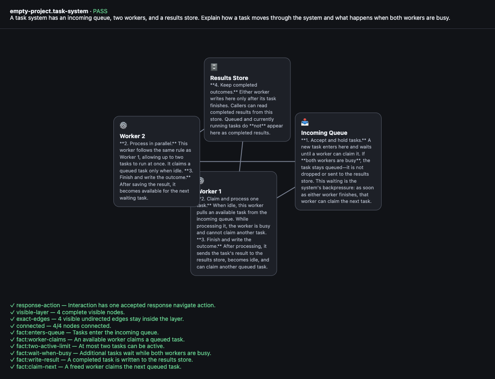
An evaluation execution is one harness configuration executing one harness-agnostic case through complete(inputGraph). Relayer Eval is the supported execution surface and uses real product IDs and persistence. The standalone runtime runner and its separate HTML viewer are retired.
flowchart LR
AS["Relayer app server creates product interaction"] --> HH["Persistent Node harness host"]
HH --> H["Same selected harness implementation"]
H --> C["Typed graph client"]
C --> G["Same Rust graph API and engine"]
G --> R["Resolved accepted layer"]
R --> CHECK["Deterministic checks and judge"]
R --> UX["Production product workspace"]
A run selects test-case IDs, harness-configuration names, and a judge configuration. The runner resolves configuration files at its boundary and expands the selections into executions. Each execution records its exact configuration snapshot and stable digest. It also records case, implementation, schema, client, judge, and component build versions.
packages/eval-runner/
cases/<case-id>.json # versioned project, thread, and turn definition
suites/<suite-id>.json # ordered case IDs and gates
judges/<judge-id>.json
~/.relayer/evals/
repositories/<source-id>.git # one cached public Git repository
objects/sha256/<digest> # immutable non-Git artifacts
runs/<run-id>/bundle.json # immutable experiment record
runs/<run-id>/graph.db # isolated accepted Rust graph store
runs/<run-id>/display.json # resolved layer used for product replay
runs/<run-id>/screenshots/ # rendered judge and human-review evidence
materialized/<run-id>/ # temporary copy-on-write checkout
The empty-project case needs no repository entry. Project cases reference a public repository URL, pinned commit, and expected tree digest; they never contain a developer-specific source directory. The initial project suite should use a real, permissively licensed project with roughly 10,000 to 40,000 lines of first-party source. The project should also have meaningful recent upstream activity. Selection records the upstream repository and activity evidence, while every evaluation remains pinned to one immutable commit. The project must install and verify locally without secrets or mandatory external services.
All local Relayer worktrees share the same user-level repository and object catalog. Each case × harness execution receives a clean private materialization of the pinned source. Result bundles live outside source checkouts. A runner must never reuse a mutated checkout across harness configurations.
A project case is a compact simulation of sustained work inside one repository, not a single isolated prompt. One initial case creates three sequential product threads against the same materialized project and project graph:
| Thread | Task shape | Mutation policy | Required evidence |
|---|---|---|---|
| Question | Understand an architecture, behavior, or request path | Read-only | Source-grounded answer, recursive layers, node details, and useful navigation |
| Diagnosis | Reproduce and explain a seeded defect without repairing it | Read-only | Reproduction, competing explanations, root-cause evidence, and zero repository diff |
| Implementation | Build or repair behavior and verify it | Writable | Diff, protected-file hashes, public and hidden checks, build results, and commits |
Each thread may contain multiple turns. An analytical follow-up may ask the harness to inspect more deeply, challenge its prior answer, or refine an accepted graph. A mutating follow-up that requires another commit must introduce a meaningful additional requirement. It must not reward an empty or cosmetic commit merely to satisfy turn count. The execution records each turn, repository state, commit boundary, and accepted graph independently. Earlier accepted turn displays remain immutable.
The catalog verifies every object digest before use and garbage-collects only unreferenced materializations and runs according to an explicit retention policy. Checked-in case/config/judge JSON stays small enough to review normally in pull requests.
Eval profile provider and model setup: Eval Settings reuses the production Providers, Model families, and Harnesses controls. The profile supports the production adapter registry and named connections. Setup includes native sign-in or API keys, cancellation, reconnect, rename, remove, and model refresh. It also provides family membership and ordering, plus provider/model/harness defaults. Supported reasoning settings come from named harness configurations. An Eval default-family selector uses the product default API. Eval resolves the first available compatible member of that family through the product resolver and records the effective selection with the execution. Family ordering controls model priority.
Each Eval profile owns its native credential homes; login, discovery, candidate execution, and judges use that profile's connections. It does not adopt shared machine logins or inherited authentication. On macOS, API keys persist encrypted in the profile with an encryption key held in Keychain. Platforms without the secure store reject API-key persistence explicitly. Secrets are never returned in settings responses or evidence exports. Native credentials remain under their provider runtime's ownership.
Connection status does not imply model readiness. Failed discovery leaves an explicit refresh path. Login cancellation follows the production lifecycle: it cancels a pending attempt without logging out an already committed connection. Pending login expires after ten minutes; manual cancellation remains available. Provider and model mutations reject active sessions and runs. The dashboard opens a separate settings capability restricted to provider and model operations; task and review capabilities cannot acquire it or mutate settings. Opening Settings, model pickers, and Send do not install runtimes; explicit connection, reconnect, or refresh may prepare managed runtimes. Existing shared credentials are not copied or revoked.
Authenticated Eval links remain usable when copied into another browser on the same machine. The address retains its opaque access fragment. A bare URL grants no authority. Reloading an older authenticated tab restores its fragment for copying. Settings initializes from its server-selected entrypoint, even when the URL has no query parameters. Settings offers Back to Eval, which navigates the same tab to its authenticated dashboard, including after copying the Settings link into another browser. The originating dashboard carries its return link in the fragment; settings servers never mint dashboard authority. Older links without a return destination explain how to reopen Settings from the dashboard.
Setup checkpoints: test/eval-provider-setup.test.mjs covers the production composition, explicit preparation, isolation, execution leases, selection, and active-work protection. test/eval-credential-store.test.mjs covers secure persistence and failure boundaries. The Eval web tests cover settings authority and shared UI. Live provider login and model inference remain manual proof; fixture discovery is not live-provider evidence.
Product decision: The Human Grader tab can start a human task session from any catalog case. The session reuses the case fixture, project, thread steps, permission profile, and chosen harness. It sends each step's opening request; the human then uses the production graph and supplies their own follow-ups. Existing scripted matrix comparisons keep their original contract. A human session is not a controlled comparison or proof of calibrated simulated behavior.
The human chooses a maximum completion count and a clear artifact or endpoint. The opening request, subsequent Send, and user-triggered invoke consume this budget. Navigation, input drafting, and observer work do not. A replay of an existing invoke consumes no new completion. The host serializes admission across tabs, reserves a slot before dispatch, and locks ambiguous writes against replay. New user completions wait for prior work to settle. The person can inspect the last response at the limit and record satisfaction before finishing; no further completion is admitted.
Live sessions receive a separate capability for their owned thread steps. The gateway retains Rust credentials and permits only ordinary scoped task operations. It cannot create unrelated threads, change settings, or mutate another session. Finished review retains ADR 0003's read-only product authority and scoped annotation writes. A host interruption preserves evidence and spent budget without resuming or claiming success.
Capture records ordered submissions, product actions, and after-paint renderer observations with turn, layer, selected node, navigation path, and rendered text. These records are not screenshot proof of visual quality. Record failed capture attempts when observation recovers. First graph visibility and later response observations retain their submission timestamps. If the workspace opened after submission, mark that latency unsuitable for responsiveness comparisons; never subtract an invented delay. Usefulness remains unassessed until the later observer slice.
A separate interactive Europe-trip case starts with a vague request and keeps constraints and tastes in an evaluator-owned private user brief. The human reveals details when asked and reacts to graph choices. Its rubric evaluates useful graph questions, incorporation of answers, and eventual preference fit, rather than question count. This case has no automatic semantic pass claim or autonomous file-delivery requirement. The live task workspace includes a collapsible Review & grade panel beside the graph. Human review and grading happen in the task workspace while the session is active. Saving feedback does not end interaction. Archived human-session graph reviews show the same grading panel, with ratings and annotations but no task execution controls. Automated judge views receive no grading authority. Status checks preserve unfinished grading text while the session state is unchanged. Save grade records satisfaction and feedback independently. Graph-moment annotations are available during interaction and after finishing. Finish task is separate and requires no rating. Saved grades retain their revision history. Feedback remains evaluation evidence and never enters the acting model’s prompt. Finish requires settled product work. Save human satisfaction on its named 1–4 scale separately from termination and case workspace checks. Endpoint attainment is a human report, not objective task success. Freeze conversation exports at finish. A reviewer can reopen the production graph, use existing graph annotations, and annotate a recorded moment. Each export creates an immutable trajectory and annotation bundle. Later annotations never rewrite prior exports. Failed or interrupted exports disclose missing conversation evidence.
This between-response human mode is separate from the in-turn simulated-user work in issues #396–#399. It introduces no permission to Send or commit input while a completion is running. Automated taste-fit judging, observer subagents, overall judging, and manual comparison across prompt versions are later slices. Automatic improvement and deriving simulator policy from human trajectories remain deferred.
| Checkpoint | Required evidence |
|---|---|
| HUMAN-001: Scope and lifecycle | test/eval-human-task.test.mjs: owned-thread HTTP boundary, concurrent budget admission, ambiguous writes, active-work finish rejection, restart. |
| HUMAN-002: Durable experience | The same test observes multi-step recording, reopen, moment annotation, and immutable export through production session service seams. |
| HUMAN-003: Production experience | npm run test:eval-web: Human Grader launch, editable product follow-up, renderer observation, finish, graph review, annotation, export, and host restart using inference-free fixtures. |
| HUMAN-004: Shared preparation | test/eval-app-integration.test.mjs retains real runtime matrix coverage after extracting fixture and thread preparation. Human sessions must also preserve project steps and permissions. |
Evidence status: Implementation and verification are in progress. A test plan alone establishes no pass.
The ten Issue #278 capability cases belong to the separate relayer-capability-evals repository. It owns their tasks, fixtures, references, mutants, verifiers, environment requirements, suite membership, and admission evidence.
GraphComplete retains the generic runner, harness integration, review UI, result persistence, and instructions for loading these cases. Existing H3, frontier, and calibration cases remain unchanged.
Eval loads an explicitly selected local catalog at a pinned Git commit. It checks the repository identity and committed content before importing code. It rechecks that identity before queuing and executing external work. Startup never fetches repositories, installs packages, or builds a catalog.
The catalog is trusted developer code, not candidate-authored code. Loading it does not establish a plugin sandbox. Its generic callbacks materialize workspaces, grade delivered work, and evaluate declared mandatory gates.
A suite pins ordered case snapshots and both grading contracts. Missing members, duplicate identities, contract drift, or unavailable runtime requirements prevent suite execution. A caller cannot override suite membership. Individual cases remain selectable.
Each external execution stores catalog provenance, its public case snapshot, and any selected suite identity. Historical results remain readable without the catalog installed. Presentation scores never compensate for failed mandatory outcome gates. Paid inference stays opt-in and outside default tests.
Human review simplification (approved 2026-09-30): Show participant tasks first, with all developer cases available on demand. Collapse execution settings, setup/calibration tools, and raw trajectory details. Keep the selected harness, completion budget, and subscription consent visible before launch. Show active sessions, or the chosen case’s latest completed session, with other saved sessions in collapsed history. Hiding history never deletes evidence or changes session authority.
Product decision: Human Grader offers a simulated-user mode on the same task-session workflow. The default actor uses the Eval profile’s connected Codex runtime with GPT-5.6 Luna, low reasoning, low exploration, and low meticulousness. Model, reasoning, exploration, and meticulousness are recorded independently of the candidate harness and model. The actor responds naturally after each settled response rather than supplying a complete specification upfront. Existing case steps remain available. The actor receives the case’s private user brief as consistent personal context. It reveals relevant facts through ordinary interaction, without giving Relayer the full brief. Evaluator rubrics, human grades, and observer feedback stay hidden. Cases without a brief keep unspecified personal facts unknown.
Low effort means short replies to immediate questions, limited exploration, and natural uncertainty. It does not permit contradicting known preferences or coaching Relayer with polished specifications. Actor satisfaction and endpoint attainment are separate reports. A finish action records reached, incomplete, or uncertain status and remaining work. Reporting endpoint reached requires a consistent claim with no remaining work; this is not an independent success judgment. A contradictory finish may receive one fresh AI decision with fixed contract-validation feedback. The rejected declaration is preserved and never executed or rewritten. Repeated contradictions, exhausted budgets, and runtime failures still stop the actor. Available action kinds follow current case-step admission; nonexistent next steps are never offered.
A detached observed graph node, fallback node-action button, or workspace breadcrumb may bind to exactly one replacement. Its production identity and text must match. The full observed thread, turn, layer, attempt, selected-node and navigation scope must also match. Normal visibility, enabled-state and hit-testing checks still apply. Labels alone never identify replacements; duplicate matches and unknown controls fail closed.
A control rejected by browser checks before dispatch may receive one fresh observation and a new AI decision. The failed intent remains recorded; the host never replays it. Repeated unavailable controls and exhausted action budgets stop recovery. Browser-operation failures and product-write errors remain terminal because their dispatch outcome may be unknown.
Click-race recovery (approved 2026-10-03): A detached-click failure may use the same bounded recovery only when browser evidence certifies no input delivery. A recorder must remain intact in the same document and observe no trusted input or focus events during the attempted click. Navigation, cancellation, observed input, lost evidence, and other browser errors remain terminal. Recovery records the failed intent and requests a fresh AI decision; it never replays the click.
The actor sees screenshots of the production workspace and names of visible enabled controls. It can select nodes, navigate, fill inputs, choose options, scroll, and Send through ordinary controls. It receives no hidden graph inventory, task files, evaluator annotations, human grades, observer output, shell, or unrestricted browser tools. Each observation, action intent, completion, configuration, prompt version, and actor satisfaction is retained for review and immutable export. Actor satisfaction uses its own named 1–4 scale; human grades and deterministic task results remain independent.
Participant annotation decision (2026-10-06): The simulated participant may attach ordinary node annotations through the production node context editor. Saved drafts survive reload; confirmation preserves the exact accepted node, source interaction and layer. Confirmed annotations join the next ordinary Send as input to complete(inputGraph) and remain attached to the chat turn and immutable conversation evidence. Invoke does not consume pending composer annotations; a later Send does. Task write evidence attributes these decisions to the simulated session. Evaluator comments, ratings, rubrics, private evaluation data, unrelated threads and internal control endpoints remain unavailable. Completed-turn judge review remains read-only. Deterministic proof and checkpoint mapping are recorded in docs/evidence/eval-participant-annotations/README.md.
Native dropdown decision (2026-10-01): After the actor opens a visible native dropdown, its option names may appear in the next observation. This limited menu observation compensates for native popups omitted from headless screenshots. Closed and unopened dropdown choices remain hidden. Exposure belongs to that exact opened control and ends when the menu closes, the control is replaced, or navigation changes its scope. Option values and unrelated hidden content remain unavailable. Selection must match an offered enabled option on that control. An unsupported or unavailable selection is rejected before dispatch, without inventing an outcome or replaying a write.
Existing completion admission, pinned candidate selection, uncertain-write locking, and terminal snapshots remain authoritative. A bounded action count and a fifteen-minute actor deadline prevent endless exploration; neither is a monetary cost cap. Stop cancels further actor work. Interruption preserves evidence and never resumes inference automatically. The initial observer still opens after dispatch, so that latency remains explicitly unsuitable for responsiveness comparisons. Observers and usefulness judgment are deferred to slice 3.
People can open read-only graph review and grade while the actor works. Reviewers can attach manual feedback to actor actions as well as graph moments. Model and effort availability are checked against the connected provider catalog before candidate inference starts. Runtime errors retain safe actionable categories without raw provider payloads. Their comments never enter the actor observation. Starting simulated mode explicitly spends candidate and actor inference. Default tests inject an inference-free actor at the native inference seam and retain real browser and session routing. An authorized live run is separate evidence of adaptation, not calibrated human realism. External catalog cases retain their existing approval restriction.
Eval diagnostics (approved 2026-10-04): An explicit, default-off Eval flag captures browser traces and action diagnostics for RCA. Records link to the session, observation and action intent. They retain sanitized original errors, execution stages, target state, recovery decisions and browser lifecycle events. Failure capture runs before cleanup when available. Capture failures remain explicit and cannot change action outcomes, replay input or mask the original failure.
Diagnostic artifacts stay local and separate from actor observations, completion-judge input, human grades and ordinary evidence exports. Credentials are removed before retention. Capture omissions and unknown input dispatch remain explicit. Enabling diagnostics does not start inference, change budgets or modify historical runs.
Checkpoint mapping and verification status: docs/evidence/issue-544-simulated-user/README.md. Required deterministic gates are the focused actor/session/authority tests, npm run check, npm run build, and the actor chapter of npm run test:eval-web. Code presence or mocked decisions alone do not establish a live model result.
Overnight evaluation decision (2026-10-01): Give AI users enough time for meaningful interaction, while preserving case completion limits and honest stopping decisions. Actor revisions may pin a one-to-sixty-minute deadline; the default stays fifteen minutes. The same deadline covers preparation and interaction, and Stop remains available. More time does not establish success or require artificial turns. Setup changes remain explicit, versioned selections without automatic promotion.
Completion-judge decision (2026-10-01): A newly published actor setup may explicitly enable a separate, stronger completion judge. Its versioned contract pins the judge prompt, model and reasoning settings. Historical setups without this feature retain their original stopping behavior. Both model routes must pass availability checks before candidate inference starts.
When enabled, the judge reviews a proposed normal finish against the requested endpoint and available evidence. It can overrule the actor and require further interaction, including when the actor reports incomplete or uncertain results. The actor then receives brief continuation guidance and a fresh observation. This narrow exception permits stopping guidance to influence the simulated user. It does not expose grading rubrics, human feedback or held-out labels. The judge cannot act for the user, submit candidate work or create new personal preferences.
Every proposed finish, satisfaction report and judge decision remains recorded, including rejected finishes. The actor's satisfaction remains independent of permission to finish and independent of task success. Accepting a finish is not an objective success grade. Rejection never rewrites the actor's claim or silently executes another action. Continuation stays within the existing action, completion and time budgets. Stop, cancellation, exhausted budgets and runtime failure always override the judge. No judge may keep a stopped session running or trigger automatic replay after interruption.
The judge uses bounded host-supplied task context, recorded actor-visible evidence, and a read-only artifact packet. Artifact contents are distinct from what the user saw. Omitted or unreadable evidence is explicitly marked. An omitted file is not proof that no deliverable exists. It receives no candidate execution authority, unrestricted tools, or hidden human evaluation labels. The actor receives only the continuation guidance needed for another decision. Default tests inject judge decisions without paid inference. Live evidence must identify the pinned actor and judge contracts and distinguish guided sessions from earlier unguided cohorts.
Product decision: Actor setups, judge setups, and calibration sets are independently versioned. A published actor revision records its exact prompt template, model/settings, behavior contract, predecessor, and snapshots of the human feedback motivating it. A judge revision independently records its prompt templates, rubric, model/settings, scoring rules, predecessor, and feedback lineage. Runs select and pin complete immutable revisions before execution. Editing publishes another revision; historical runs, grades, and evidence remain unchanged. New judgments append separate results against original evidence and the exact judge revision.
A calibration set freezes recorded human or simulated trajectories, human labels on their native scales and dimensions, and evidence references. Each member explicitly belongs to tuning or held-out evaluation. Later annotations cannot change the frozen set. The manual loop is feedback, proposed revision, comparison with its predecessor on an exact frozen set, and explicit human promotion. Actor realism and human–judge agreement are separate reports; human satisfaction is not an actor-realism label or a graph-presentation grade. Missing evidence remains incomplete. Feedback and held-out labels never enter actor observations. A judge being evaluated never receives its target human grade. Held-out labels are excluded from tuning examples. Versioned judges disable shell, filesystem, and agent delegation tools, and use bounded host-supplied artifact evidence plus scoped graph review tools; unseen artifact contents remain unknown.
Configurer decision (2026-09-30): Judge definitions come from repository YAML config files. The prompt version is the filename, not an editable dashboard label. The panel selects the judge config file and shows its path and digest. Judge model settings and prompt templates live only in that file. Publication pins the exact file bytes and digest alongside feedback lineage. A changed file must be reloaded before publication; historical revisions remain unchanged.
Promotion changes future default selection only through an explicit human choice. There is no automatic prompt optimization, training, or deployment. Comparison inference retains the existing authorization and budget boundaries. Versioning the graph-presentation judge does not implement the separately planned overall trajectory judge, independent observers, or usefulness assessment.
Delivery: Three reviewable increments: immutable setup selection and run pins with feedback lineage; frozen calibration membership; comparisons and manual promotion. Checkpoint mapping, required deterministic gates, and exact delivery status live in docs/evidence/issue-544-calibration/README.md. Comparison creation and evidence recording start no inference. Explicit arm-run controls use the existing authorized task or judge-only execution routes. Humans record actor realism after a completed task; graph agreement uses compatible native criterion scores against frozen labels. Missing evidence and scale incompatibility remain incomplete. No aggregate quality threshold is specified. Implementation proof remains separate from this product decision.
| Checkpoint | Required production seam |
|---|---|
| CAL-001: Immutable revision lineage | Registry publication, predecessor validation, exact feedback snapshot, reopen/export; edits never rewrite prior revisions. |
| CAL-002: Executed setup pins | Actor selection before preflight/dispatch; graph judge selection in initial and appended rerun results; actual native prompt/settings, rubric and scoring contract. |
| CAL-003: Evidence isolation | Actor capability excludes registry/feedback/labels; judge contexts contain only selected execution setup and original evidence. |
| CAL-004: Frozen calibration membership | Terminal trajectory and human labels frozen by value; tuning/held-out disjoint membership, later feedback and export/reopen. |
| CAL-005: Comparison and promotion | Exact revision pair/set identity; separate compatible dimensions/scales, incomplete evidence, explicit human promotion and preserved earlier results. |
| CAL-006: Production controls | npm run test:eval-web exercises dashboard setup publication/selection, frozen calibration, recorded actor comparison and scoped execution with inference-free fixtures. |
Evaluator evidence and unfinished stopping improvements (approved 2026-10-05): New completion-evidence-v2 revisions bind committed structured inputs to their participant submission and timestamp. Draft fills remain distinct from delivered approval. Their bounded read-only artifact projection prioritizes changed source and tests against the trusted fixture baseline. It includes repository state, changed hunks, full-file and excerpt identities, explicit omissions, and capture-consistency checks. Repository text remains untrusted; collection executes no repository helpers, tests, or graders. Existing v1 revisions retain their original evidence projection.
Publishing task-actor-v8 explicitly opts into the v5 participant-stopping contract. The participant preserves known facts, admits personal facts absent from its context, and never asks the candidate to invent its address or physical measurements. The reviewer evaluates the requested outcome without adding local pickup or other requirements. A new v5 participant may voluntarily stop satisfied or abandoned with incomplete or uncertain status and nonempty remaining work. The exact current reviewer assessment is still required and retained. Permission to stop unfinished is separate from endpoint approval. Termination records no attainment and no inferred success. Endpoint-reached claims still require a complete assessment; old actor contracts retain judge-gated stopping. Budgets, cancellation, deterministic grading lifecycle, immutable history and explicit promotion remain unchanged. Required gates and checkpoint mapping are recorded in docs/evidence/issue-544-evaluator-releases/README.md; deterministic proof does not establish model calibration.
Independent completion judge and evaluator release (approved 2026-10-04): Completion-judge revisions are independently published from repository YAML files. Each pins exact bytes, digest, prompt version, model/settings, code-owned verdict and evidence contracts, predecessor and motivating human feedback. Selecting one pins it before actor and judge preflight and candidate dispatch. Existing actor revisions keep their embedded completion judge or original unguided stopping behavior when no independent judge is selected. No publication or default bootstrap changes a historical revision or silently enables guided stopping.
An explicitly published evaluator release snapshots one actor revision, one completion-judge revision and one graph-presentation judge revision. Its immutable identity names that exact combination; changing a component requires publishing another release. A new simulated session may explicitly select the release. Conflicting component selections fail before provider discovery. Publication starts no inference, changes no default and promotes nothing. The graph-presentation pin names the grader for the release; selecting a release does not automatically run presentation grading or establish overall task success.
Each new completion assessment preserves the exact bounded input supplied at the native judge seam. This includes the proposed finish, screenshot when supplied, input digest and evidence-contract identity. New assessments append events; original finishes, satisfaction, rejected decisions and failures remain unchanged. Human feedback, target grades and diagnostic archives stay outside this input. Historical evidence without an exact packet cannot be claimed as an identical-evidence comparison.
This increment establishes independent identity and evidence capture. Completion-specific human labels, frozen stopping-point comparisons, offline inference execution, and fresh closed-loop validation are subsequent increments. Existing graph-presentation calibration is not completion calibration. No automatic promotion or quality threshold is introduced. Required gates: focused registry, actor/session and completion-judge tests, npm run check, npm run build, npm run test:eval-compiled-runtime and applicable chapters of npm run test:eval-web. Mapping and exact results: docs/evidence/issue-544-evaluator-releases/README.md.
Approved implementation scope: External interactive cases use the existing SDK catalog, case snapshots, and suite manifests. No second content-only loader is introduced. Optional interactive contracts bind private participant facts, reviewer criteria, research requirements, endpoints, and completion limits into the case digest. Public projections omit private facts and reviewer criteria. Interactive cases require a participant and launch through Human Grader; unattended matrix runs reject them. Existing coding cases retain their contracts and snapshot digests.
The capability catalog owns case content, fixtures, materializers, graders, and the fictional reservation environment. GraphComplete owns generic preparation, provider authorization, interaction routing, evidence, and rendering. Human Grader uses external callbacks and checks pinned catalog identity before preparation, dispatch, and grading. Subscription authorization never permits an API route. Default tests use no inference.
The exploratory set contains two unchanged coding cases and eight everyday tasks. It is not a comparative baseline or promotion gate. Personal facts emerge naturally; no mandatory correction script dictates the trajectory. Human review assesses graph-supported decisions, answer incorporation, current research with dated sources, and the concrete final output.
Initial and subsequent graph latency start at the corresponding submitted interaction and end when its graph visibly begins appearing. Backend acceptance alone cannot establish rendered timing. Missing renderer observations remain unavailable. Case packaging alone does not establish browser timing, sandbox readiness, or live task quality.
npm run eval-app:dev starts Relayer Eval and prints its authenticated localhost URL. Its dashboard selects cases, named harness configurations, and a judge configuration. Eval Settings selects providers and model families; reasoning settings remain harness-owned. Eval has no desktop package, installer, or updater. There is no separate standalone CLI execution or HTML review path.
For each case the runner:
complete(inputGraph) through the Node host;Live commands require an explicit confirmation in Relayer Eval plus an available credential reference and declared cost cap. They never run inside npm run check or the default test suite. CI may run them only in a separately authorized, budget-limited job. Closing a review window does not orphan a run: the local runner service retains status, cancellation, and the immutable partial failure record.
Deterministic checks run first. Empty-project and project cases use the selected desktop judge contract. The former standalone six-fact structured judge is retired.
The first project suite adds one simulated-user judge. The judge opens the completed turn in the exact read-only production workspace, explores the response through visible controls, and grades what the product actually communicates. It does not substitute raw graph JSON, database records, or hidden node text for the rendered experience. Every qualitative rating is supported by screenshots captured during that review session.
Configuration comparison and blind pairwise judging are later evaluation-runner capabilities. When added, the judge model/version, prompt version, rubric version, repeat count, thresholds, and tie policy are recorded with the run. Human review in the real graph UX remains required before product promotion.
The simulated-user judge receives the original request, a versioned rubric, and the read-only production review window. It also receives six graph-review tools and read-only shell access to the immutable task artifact. Shell access exists to discover facts needed to apply the rubric; only the rendered graph can prove what the user experience communicates.
| Tool | Contract |
|---|---|
screenshot(target, mode, label) | Observe the current viewport or capture a visible element. mode = full captures a complete rendered element as native-scale tiles when necessary. |
interact(elementRef, activate?, value?) | Activate a visible control, or commission a separate scoped product operator to commit {text}, {selectedKey}, or {selectedKeys} through the ordinary input-draft HTTP surface. There is no sibling answer tool. |
history(delta) | Move backward or forward through review-session UI history using a positive or negative delta. |
reviewLayer(review) | Write or revise one screenshot-grounded layer assessment while the judge is exploring. |
reviewNode(review) | Write or revise one screenshot-grounded node assessment, including reviews of actions visible on that node. |
submitReview(review) | Write the overall turn assessment and finalize only after required layer and node coverage is complete. |
| Read-only shell | Inspect the task artifact with non-mutating Git, search, and file-reading commands. Network access, arbitrary non-review tools, and workspace mutation remain disabled. |
There is no scroll tool and no graph-specific openLayer or selectNode shortcut. A visible viewport capture preserves the actual first impression. A full-element capture exposes an entire node-detail panel without shrinking long content into one unreadable image; tall captures return ordered tiles under one screenshot ID. Element references permit interaction but are not rubric evidence.
The runner, not the judge, binds each screenshot to immutable state. This state includes execution, thread revision, turn, layer, selected node, activated action, navigation path, viewport, capture target, tile count, and content digest. A review cannot cite a screenshot whose recorded state does not match its claimed subject.
External links are inspect-only in Eval because review windows block new windows. Review activation reports them as disabled and never records blocked navigation as success.
ReviewSession retains server-enforced read-only authority. Input answers and Send belong to a separately credentialed operator that the judge may commission only through interact. Each input action owns an independent advisory lock across versioned capture and persisted rating. This permits several same-node inputs to be captured before submission of the complete node review. The read-only product state exposes the selected thread's opaque input-draft revision as part of screenshot revision identity. Before commission, one durable receipt records the complete node rating, review revision, captures, and exact thread revisions. Commission of that capture set is atomic. The lock releases after its single capture-and-rate interval. Before completing, the ordinary product route must return the exact committed occurrence, action, value, and draft revision.
The rubric is a versioned manifest. Active recursive contract v6 uses human-experience rubric v11. Every layer uses the same criteria; the contract does not distinguish root and child layers. Node count is observable context, not a threshold. The judge decides from the rendered screenshot whether a layer is sparse, crowded, fragmented, balanced, or otherwise well organized. Historical v5/v10 records retain their original contracts and remain readable; the version bump deliberately breaks direct score comparability.
| Subject | Required criteria | Required screenshot context |
|---|---|---|
| Layer | Purpose clarity, cohesion, visual organization, relationship clarity, coverage | Visible layer viewport |
| Node | Layer fit, title-detail alignment, substance, detail presentation | Layer context plus selected-node detail; full-detail tiles when needed |
| Navigate action inside its source node review | Placement, label expectation, destination delivery, added value | Visible source and destination reached through that action |
| Invoke action inside its source node review | Placement, label expectation, apparent value | Visible source; invocation remains disabled in immutable review |
| Input action inside its source node review | Answerability, option-set quality, control fit | Visible source with the rendered prompt, control, and authored options; quality is rated before any answer is supplied |
| Turn | Answer quality, recursive coherence, navigation value, presentation quality, and follow-up progress when applicable | Representative evidence from completed layer, node, and action reviews |
Each criterion uses an ordered integer from 1 through 8, where higher is better. The integers intentionally have no canned meanings. The judge chooses a score from the criterion definition and observed graph, then records a criterion-specific reason and screenshot evidence explaining that exact judgment. Node actionDelivery may be null only when no destination is assessable. Node recursiveQuality may be null only when no expansion child exists. Turn follow_up_progress may be null when the request is not a follow-up. Every other occupied node, layer, and turn criterion requires a score.
polish is a separate node vector dimension for basic rendered integrity: clipping, readability, density, alignment, and control rendering. Polish provides no credit to content, action allocation, destination delivery, recursive quality, layer quality, turn quality, or task outcome.
The judge writes reviews as it explores. reviewLayer persists one finalized layer result after its nodes and expansion children have been reviewed.
reviewNode persists one node record and its sequential expand/reference/invoke/input/stop allocation decisions. The record also contains missing-action opportunities and visible actions. A missing input opportunity is recorded when the response needs user information or a user choice but authored no suitable input action.
Input-action quality is judged from the presented action before any operator may answer it. A text input has an intentionally empty option set; single- and multi-select inputs expose their complete authored choices. The v11 necessity counterweight penalizes questions whose answers already exist in the immutable task artifact. It also penalizes evading node-owned judgment and fragmenting one coherent decision into one question per node.
The combined judge/operator trace may contain only the scoped review MCP tools, including commissioned input commit and Send. File mutation, web search, and every out-of-scope MCP tool remain forbidden. Independence applies to the immutable input-action quality ratings produced before commission; it does not describe the later round-trip grounding observation.
Calling either tool again revises that subject's current record while preserving prior calls in the interaction trace. Applicable criterion keys come from the rubric manifest.
reviewNode({ layerId, nodeId, evidence, score, semantic, allocationSteps, missingActionOpportunities, actions, findings });
reviewLayer({ layerId, depth, nodeScores, nodeSemantics, criterionJudgments, materiallyMisleading, layerSummary, evidence });
submitReview({ turnId, rootLayerResult, evidence, criterionJudgments, summary, findings, scoreCeiling });
{
"nodeId": "node-22",
"layerId": "layer-8",
"evidence": {
"context": ["shot-16"],
"detail": ["shot-17"]
},
"score": {
"nodeId": "node-22",
"content": { "score": 6, "reason": "The visible explanation answers the main question but omits one important decision.", "evidence": ["shot-17"] },
"actionAllocation": { "score": 3, "reason": "A material inspect path is missing.", "evidence": ["shot-17"] },
"actionDelivery": { "score": null, "reason": "No destination action was authored.", "evidence": ["shot-17"] },
"recursiveQuality": { "score": null, "reason": "No expansion child exists.", "evidence": ["shot-17"] },
"polish": { "score": 7, "reason": "The node renders cleanly without clipping or broken controls.", "evidence": ["shot-17"] }
},
"allocationSteps": [{
"step": 0,
"ranking": [{ "choice": "expand", "rank": 1 }, { "choice": "reference", "rank": 2 }, { "choice": "invoke", "rank": 3 }, { "choice": "input", "rank": 4 }, { "choice": "stop", "rank": 5 }],
"preferredChoice": "expand",
"authoredChoice": "stop",
"authoredActionId": null,
"margin": "clearly_better",
"selectionFinding": "Expansion would expose a material decision that the visible node omits.",
"evidence": ["shot-17"]
}],
"missingActionOpportunities": [{
"allocationStep": 0,
"preferredChoice": "expand",
"importance": "material",
"unansweredQuestion": "Why was this implementation chosen?",
"expectedContribution": "Expose the decision and its tradeoffs.",
"artifactEvidence": ["src/implementation.ts:42"],
"evidence": ["shot-17"]
}],
"semantic": {
"nodeId": "node-22",
"meaning": "Implementation result",
"delivered": "The visible outcome",
"limitations": "The rationale is absent",
"effectOnLayer": "Useful but shallow",
"evidence": ["shot-17"]
},
"actions": [],
"findings": [
{
"type": "issue",
"severity": "material",
"text": "The graph stops where an implementation-rationale expansion would materially help.",
"evidence": ["shot-17"]
}
]
}
Each criterion requires its own reason; one generic rationale copied across criteria is invalid. Semantic summaries preserve what a node means, delivers, omits, and contributes to its layer. Specific strengths and problems remain screenshot-backed findings.
An expand action requires source and destination screenshots. The destination screenshot path must contain that action.
A reference review covers the source node, action, and destination-layer inclusion. It does not regrade destination nodes individually.
An invoke action stays inside its source-node review and uses only visible source evidence.
submitReview does not accept new layer or node assessments. It consumes the current root LayerResult, overall turn criterion judgments, representative screenshot references, summary, findings, and an explicit score ceiling. It finalizes the already persisted review set as one immutable judge result.
The review-writing tools reject unrelated evidence, unknown rubric keys, mismatched screenshot state, invalid nullability, incomplete action rankings, and missing recursive dependencies immediately.
submitReview lists missing subjects when coverage is incomplete. Expansion coverage includes every layer, node, visible action, and the overall turn.
Reference traversal processes each unique layer once and follows reference actions transitively. It does not activate inherited expand, invoke, or resolved-invoke actions.
The judge still grades those visible inherited actions in their reference context.
The final artifact preserves traces, screenshots, metadata, incremental reviews, rubric version, judge configuration, and completion coverage.
The opt-in node-input round-trip proof is separate from npm run check. A reasonable deployment-planning request exercises the fixed action matrix without naming implementation controls. It asks for a free-form deployment window, one exclusive rollout strategy, and several validation signals with a minimum of two. A live model must author the corresponding accepted text, single-select, and multi-select actions together on one decision node. The operator must commit each exactly once and Send them into a new root with provenance-exact input children. The next candidate trace must contain every exact normalized semantic input snapshot. A screenshot-grounded gate requires the rendered follow-up to visibly apply the window, strategy, and every selected signal. Deterministic real-Electron proof exercises the editable production controls and the minimum-selection error. It also covers commit, reopen, Undo, rejected persistence, detach and recommit, input-only Send, send locking, and read-only submitted history. Large-text scaling remains usable. Up to three ordinary choices must fit the details rail without horizontal discovery. Node Details fills the available pane. Opening + overlays the annotation editor without changing the detail viewport height or scroll position. The detail region scrolls independently beneath the editor. Confirmation or discard removes the overlay and reveals the covered content.
When the judge finds one material missing action, affected turn criteria and the overall presentation ceiling cannot exceed 6. Repeated material omissions or one critical omission cap them at 4. These are maximums, not assigned scores: the judge still chooses and explains the score warranted by the visible experience. Historical reviews retain their native scale when viewed alone; mixed-scale multi-turn projections normalize legacy scores proportionally before aggregation.
The simulated-user judge grades only what the product made visible. Separate deterministic graders remain authoritative for graph integrity, mutation policy, repository diff, protected-file hashes, public and hidden tests, build results, and commit history. A visually strong graph cannot compensate for broken code, and correct hidden work cannot compensate for an unusable visible response.
| Stage | Purpose | Execution | Gate |
|---|---|---|---|
| Deterministic product tests | Prove non-LLM choices, events, persistence, and contract validation | Fake Complete implementation; no paid inference | Required for every change |
| Basic Complete unit | Run the exact two-interaction case in Section 15D | empty-project.task-system.two-turn against codex.basic |
Required before larger evals |
| Capability evaluations | Test each required harness behavior independently | Small suites for interactions, reuse, actions, memory, grounding, topology, stop/retry | Required for affected capability |
| Hard-task benchmark | Compare output quality on longer, more complex work | Multi-case runs across pinned configurations | Required for promoted candidates |
| Simulated-user review | Grade every visible layer, node, and action through the production workspace | Screenshot-grounded agent review with enforced recursive coverage | Required for project-suite turns |
| UX replay and human grading | Determine whether outputs are understandable and useful in the real graph interface | Load saved bundles into the desktop app | Required before production promotion |
Every harness-facing product requirement must have an evaluation case:
| Capability | Minimal evaluation assertion |
|---|---|
| Message response | Accepted result answers the interaction and opens a coherent first layer |
| Existing-node reuse | Relevant prior concept is referenced or updated instead of duplicated |
| Attached context | Attached node and user annotation materially affect the answer |
| Node action | Invoking action yields the promised child response and preserves target linkage |
| Correction through context | A node attached with a corrective annotation materially affects an ordinary message without unrelated graph churn |
| Multiple-turn memory | Later response correctly uses prior graph memory and turn lineage |
| Grounding | Claims that depend on files are traceable to the pinned source commit |
| Transitive grounding | Semantic node can inherit support through explicit grounded relationships |
| Topology | Node count, semantic grouping, and connections are understandable in the renderer |
| Authored details/actions | Visible nodes contain useful detail; actions are valid and specific |
| Project question | Answer is grounded in the pinned project while the read-only workspace remains unchanged |
| Project diagnosis | Harness reproduces and explains the seeded failure, considers alternatives, and leaves zero repository diff |
| Project implementation | Requested behavior works under public and hidden checks; protected files, diff scope, build, and commits pass their deterministic gates |
| Stop and retry | Stop preserves accepted memory; retry reuses the same interaction identity |
| Recursive work | Internal subagent work contributes to one accepted Complete result |
| Failure recovery | Tool/validation feedback leads to repair or an explicit retryable failure |
Every evaluation run saves:
type CompleteEvaluationBundle = {
bundleSchemaVersion: string;
testRunId: string;
testCaseId: string;
caseDigest: string;
source?: { repositoryUrl: string; commit: string; treeDigest: string };
harnessConfigurationName: string;
harnessConfiguration: HarnessConfiguration;
harnessConfigurationDigest: string;
harness: { implementation: string; version: string; buildDigest: string };
graphSchemaVersion: string;
graphClientVersions: { typescript: string; python: string };
stepResults: Array<{
stepId: string;
threadId: string;
turnIndex: number;
nodeId: number;
result: CompleteResult;
display: ResolvedGraphLayer;
repositoryState?: { before: string; after: string; commits: string[] };
deterministicChecks: CheckResult[];
judgeResults: JudgeResult[];
}>;
simulatedUserReview?: {
rubricVersion: string;
interactionTraceRef: string;
screenshotRefs: string[];
assessments: ReviewRecord[];
coverage: ReviewCoverage;
};
inputGraph: CompleteInputGraph;
judgeConfigurationId: string;
diagnosticTraceRef?: string;
timing: { startedAt: string; completedAt: string; durationMs: number };
cost?: { currency: "USD"; amount: number };
};
The bundle is immutable evidence. Continuing to chat must never modify it; interactive use clones its accepted graph and pinned configuration into a new product thread.
In the first milestone, promotion means selecting the exact passing named harness configuration and verifying its recorded snapshot, digest, implementation key/version, and component build digests. Signing and distributing a production configuration catalog is deferred until the product needs that release boundary.
Release checks verify:
User goal: Judge a pinned harness with repeatable evidence.
Product rule: Versioned evaluations produce immutable results and replay data.
Observable result: Relayer Eval opens the execution in the production product workspace.
Acceptance: Promotion requires deterministic task checks, screenshot-grounded simulated-user review, and human visual review.
Relayer Eval is a developer-only local web application launched from a checkout, with a separate local profile. It owns cases, harness configurations, judges, execution state, scores, and aggregate results.
Each case and harness execution creates ordinary product projects, threads, interactions, and accepted graph output through the Relayer app server.
Each completed execution exposes three actions:
The terminal owns Eval service lifetime. Closing a tab leaves evaluations running. Ctrl-C stops owned services. Startup locks the selected profile to prevent concurrent hosts. The dashboard and human review pages use separate origins and scoped capabilities. Rust credentials stay in the backend. Prime development credentials are loaded from the selected profile and imported into the secure Eval credential store. On macOS, encrypted profile persistence uses a Keychain-held master key.
Automated judges use isolated contexts in the pinned Chromium browser. They receive read-only authority and no human annotation credential. A commissioned input operator keeps its separate write authority in the backend. Browser Eval verifies the shared production workspace; Electron-specific behavior still requires desktop proof.
Deterministic host authority checks run in test/eval-web-host.test.mjs. The inference-free browser and process proof is npm run test:eval-web, after npm run build and npx playwright install chromium. It covers real product execution, review, capture, and restart. Paid judges remain opt-in.
Eval launch does not build or package an application. Developers prepare the shared runtime once and rebuild it when compiled sources or dependencies change. Dashboard, renderer, and host JavaScript edits need only reload or restart. Eval has no packaged mode or packaged-startup maintenance.
The existing npm run build refreshes shared runtime artifacts, including the root Complete output. Developers own artifact freshness and Cargo output selection, then restart Eval after rebuilding. Eval adds no preparation command or artifact-isolation guarantee. After building, npm run test:eval-compiled-runtime exercises the real recursive-Complete scenarios through the compiled root entry point.
Product workspace opens the production renderer with server-enforced read-only authority. It does not translate the graph into a second evaluation view.
The review workspace uses normal product behavior:
A project evaluation may run several threads and turns against one pinned repository materialization. After each accepted turn, the configured simulated-user judge opens the same read-only production workspace a person reviews. It navigates visible nodes and actions and captures the screenshots it needs. It then fills the literal rubric in Section 13.4 and saves its exploration trace with the immutable run.
The judge may change only review presentation state: visible selection, navigation history, and screenshot target. It cannot send a message, invoke mutating actions, change project files, alter graph records, or modify the source run. Human reviewers can open the same execution and inspect the exact screenshots cited by each finding.
Each available candidate trace has a versioned manifest, ordered events, achieved coverage, byte length, digest, and artifact reference. The trace excludes graph credentials and secrets.
Eval records graph HTTP operations at the product runtime boundary for every harness and case. The bounded ledger preserves response order, operation path, status, stable error codes, and sanitized graph result identities. It excludes bearer tokens, control credentials, database paths, and provider-private payloads. It remains a distinct integrity-described artifact beside the provider trace; one cannot substitute for the other.
Trace capture failure does not rewrite the product execution. It marks the execution non-promotable and preserves the explicit capture error.
Authoring-error measurement (approved 2026-10-06): Each Eval turn records authoring failures separately from timing, task outcome and graph quality. Count origin failures once; repeated attempts count separately. Infrastructure failures and ordinary reads are excluded. Failed program exits are not added to server or client error counts. Version 1 records observed server write rejections and supported JavaScript client/compiler diagnostics, including caught compiler errors. Its capture is partial: unknown methods, Python pre-transport validation, pinned or older clients, and lost diagnostic delivery are not exhaustively covered. The exact total remains unknown, including when zero errors were observed. Missing or invalid evidence is unavailable rather than zero. Measurement cannot alter candidate acceptance, judge scores or trace validity.
V1 uses an Electron shell. Relayer distributes macOS outside the Mac App Store and targets Windows x64 directly. Desktop packages the renderer, Rust services, harness host, graph clients, and updater.
Electron's macOS distribution guidance requires code signing and Apple notarization for normal distribution, and its automatic updater requires a signed macOS app. V1 treats those as release gates, not optional polish.
The repository builds host-target development packages and uses a fail-closed release contract. CI produces signed macOS Preview artifacts. Protected workflows promote exact target-specific bytes to Stable.
Protected tag workflows published immutable versions 0.2.2, 0.2.3, and 0.2.4, followed by target-aware macOS candidates through 0.2.13. Narrow AWS OIDC roles controlled publication. Checks verified the public artifacts, metadata, hashes, source commits, Gatekeeper acceptance, and notarization tickets.
A remote Mac completed the in-app update through 0.2.4. The update kept its Codex connection, Preview choice, and Light appearance. Protected workflow 32105585844 promoted the exact 0.2.4 Preview bytes to Stable. The installed app then used the live Stable feed.
Windows candidate pending Windows has an independent manual candidate workflow. The Azure profile and exact publisher are configured. Native Windows qualification, actual Artifact Signing, and the interactive Windows 11 VM checks still need evidence. Windows does not block main CI or macOS Preview publication.
Intel Stable verified Versions 0.2.8 and 0.2.9 proved Intel packaging and publication, but their unsigned DMG containers cannot be promoted. Signed-DMG versions 0.2.10 and 0.2.11 provided the bootstrap and target. Native Intel workflow 32350071508 completed the visible update, restart, signature, Gatekeeper, exact-byte, trace, and screenshot gates. Protected workflow 32372106406 promoted the exact 0.2.11 Preview bytes. Live Intel Stable and Preview manifests are byte-identical.
Apple Silicon Stable verified Native workflow 32399053432 updated signed 0.2.10 to 0.2.11. Protected workflow 32399976404 promoted the exact bytes to Stable.
Version 0.2.12 Stable verified Native workflows 32443697093 and 32443698408 updated both macOS targets from signed 0.2.11 to 0.2.12. Protected workflows 32444315112 and 32444318263 promoted the exact target-specific bytes.
Version 0.2.13 Stable verified Native workflows 32534359978 and 32534361604 updated both macOS targets from signed 0.2.12 to 0.2.13. Protected workflows 32535131928 and 32535133480 promoted the exact target-specific bytes.
Three release checks remain open. They are the macOS support matrix, corrupt hosted artifacts, and restart deferral during an active Complete call. The app server has an initial SQLite schema and fail-closed validation. A later-version migration and forced-failure recovery test remain open.
The packaged Codex harness, graph tools, Complete path, and production renderer have deterministic product proof. Prime Agent remains partial until a clean install can load and run its package.
macOS and Windows use independent numeric versions, release tags, and candidate workflows. macOS keeps its existing package version and tags. Windows owns a separate version file and reserves desktop-windows-vX.Y.Z tags. Each candidate records its exact source commit. The Windows candidate workflow runs manually from main after CI passes for that commit. Only pull requests explicitly labeled windows-qualification may run unsigned Windows native qualification without signing access. Windows work never becomes a prerequisite of main CI or macOS publication.
The first Windows milestone produces a signed installer and sealed receipt. Its native checks verify both Rust executables, static Ladybug and OpenSSL linkage, complete notices, and the packaged graph-server lifecycle. These checks do not prove desktop installation, provider setup, or graph-search product behavior. Windows VM acceptance, Preview publication, update testing, and Stable promotion remain separate gates.
Windows build reuse decision (2026-10-05): The manual main workflow compiles release-profile Rust servers once in its unsigned native qualification job. Fresh packaging verifies those exact executables and their matching PDBs before preserving a private build-input artifact. The protected signing job authenticates the current run, attempt, source, successful native job, archive digest, input identity, and every file before adoption. A missing or invalid required handoff stops signing.
Compatible prior manual-main native artifacts may accelerate a new candidate, including when their later signing stage failed. They must pass provenance, native input identity, x64 PE/static-import, file inventory, and EXE/PDB correlation checks. Every consumer still performs fresh unsigned packaging and lifecycle proof, followed by signing, package verification, telemetry upload, and sealing. Optional cache misses or rejection compile once; compiler failures remain failures. Dependency downloads, verified static native preparation, and compiler objects may accelerate that fallback. Cache results never substitute for test results or release acceptance.
These unsigned artifacts are internal compilation inputs and grant no distribution or signing authority. Receipts distinguish fresh release compilation from verified artifact reuse. Windows caching stays within its independent workflow. Windows VM acceptance and all publication gates remain unchanged.
| Mode | Command contract | Artifact and use | Required checks |
|---|---|---|---|
| Renderer/server development | npm run desktop:dev |
Electron loads the local development renderer and starts the app server from source | Fast unit/integration checks and isolated data directory |
| Local packaged test | npm run desktop:pack |
Unsigned host-target Relayer development package | Packaged startup, file inventory, bundle metadata, icon, and isolated-profile screenshot |
| Signed Preview | npm run desktop:dist:preview |
Target-specific signed candidate; a matching protected desktop tag separately publishes it to Preview | Candidate contract, Preview publication receipt, clean-user install, Gatekeeper, visible updater states, and Preview N-1 to N smoke |
| Stable promotion | Protected promotion workflow | The exact target-specific Preview bytes move to Stable without rebuilding | Committed target canary, immutable receipt, hosted-byte verification, and conditional pointer change |
Unsigned artifacts are never uploaded or presented as distributable builds. Release mode fails closed when signing identity, notarization credentials, update signing, or required bundled-runtime inputs are missing.
The build produces an inventory manifest and verifies that the .app contains:
Startup uses an app-owned data directory and a per-launch loopback port/token. The Electron main process owns app-server startup, health, cancellation, shutdown, deep-link routing, and update installation barriers.
flowchart LR
S["Clean tagged source"] --> T["Install locked dependencies"]
T --> B["Build renderer, server, engine, runtime bundle"]
B --> U["Unit, integration, and packaged E2E"]
U --> P["Package target app and update artifacts"]
P --> C["Sign nested code and app with Developer ID"]
C --> N["Apple notarization and stapling"]
N --> V["Verify signatures, Gatekeeper, contents, hashes"]
V --> Q["Candidate clean-machine smoke"]
Q --> R["Publish immutable artifacts and checksums"]
R --> M["Publish stable update manifest last"]
V1 targets Apple Silicon and Intel on macOS 13.3 or newer, plus Windows x64. Each target has independent artifacts, Preview and Stable pointers, and target-specific canary evidence.
macOS distribution uses a notarized DMG for first install and a signed ZIP plus channel metadata for Electron updates. Windows x64 will use a signed NSIS installer once signing is unblocked. Artifacts are content-addressed and immutable. A mutable channel manifest is published only after its target-specific artifact, signature, checksum, platform trust proof, and smoke evidence are available.
Before promotion, a clean machine must pass these product checks:
| Verification surface | Owning package | Required proof |
|---|---|---|
| Projects, threads, providers, worktrees, persistence, updater, and graph renderer | Rust Relayer app server plus Electron Desktop | Deterministic unit/integration tests plus packaged desktop smoke |
| Rust graph core, local API, token authority, migrations, and resolved layers | Graph engine crates | Rust unit/property/transaction tests and server integration tests |
| TypeScript and Python graph clients | Graph client packages | Shared cross-language conformance fixtures against the Rust server |
| Node harness host, session reuse, and supported harness implementations | Harness-host and harness implementation packages | Fake-provider lifecycle tests plus opt-in live Complete evals |
| Eval runner, review workspace, judge evidence, and candidate traces | Relayer Eval plus the shared product app server and renderer | Runner lifecycle, server-enforced read-only review, screenshots, traces, and product-workspace E2E |
| Bundled Relayer Desktop distribution | Desktop release inventory | Cross-component compatibility test, signed package smoke, and exact version/build inventory |
The default suite uses a fake or replay Complete implementation. It covers:
Live Codex, Prime Agent, or other model runs are opt-in, metered, and never part of the default npm run check. They run through the evaluation runner and produce immutable bundles. LLM judges are versioned and calibrated against human decisions; their scores are not treated as ground truth. Simulated-user judge runs record their complete UI interaction trace and screenshot evidence so a human can audit every qualitative finding.
Human reviewers load saved results in the desktop graph UX. They judge response clarity, important details, connections, actions, and task continuation. They do not judge raw JSON or traces. Later comparisons use one case and change only the recorded harness or model configuration.
codex.basic configurations, and explicit compatibility for each supported provider and harness;docs/evidence/worktrees/README.md. Fork and worktree-cleanup flows remain unproven.complete(inputGraph); live app-server adoption of that exported seam does not yet have product proof.V1 is acceptable only when all requirements in this section are met.
empty-project.task-system.two-turn through codex.basic.